Douze Clefs de philosophie
LES D OUZE C LEFS DE P HILOSOPHIE attribuées à Frère Basile Valentin portrait idéalisé de Basile Valentin -
cliquez sur l'image pour voir la version de : Ex collectione Friderici Roth-Scholtzii , Norimbergensi Religieux de l'Ordre de Sainct Benoist
Traictant de la vraie Médecine Métallique revu le 11 juillet 2004 Plan : Introduction : le Tripus Aureus de Michel Maier - Ferdinand Hoefer : extrait de l'Histoire de la Chimie - les Chymische Schrifften de 1677 avec gravures -
citations de Fulcanelli et d'E. Canseliet - la kaïnite - Carl Gustav Jung : extrait de Psychologie et Alchimie - Georges Cuvier
: extrait de l'Histoire des Sciences Naturelles - Émile Gilbert
: extrait de la Pharmacie à travers les siècles - Louis Figuier
: extraits de l'Alchimie et les Alchimistes - Albert Poisson : extrait des Symboles Alchimiques - John Ferguson
: l'article Basile Valentin de la Bibliotheca Chemica - les deux éditions de Gallica : Périer, 1624 - Moët, 1660 - préface de Périer - les Douze Clefs : Premier Livre - Livre Second : Clefs I - II - III - IV - V - VI - VII - VIII - IX - X [ commentaire spécial du terme IAMSUPH ] - XI - XII - De la Première Matière de la Pierre des Philosophes (poème) - Livre Troisième : du Mercure - du Soufre - du Sel - Première addition - Seconde addition -
Colloque de l'esprit de Mercure à frère Albert - Explication de l'Esprit
sur les qualités de la première matière - les douze signes du zodiaque
qui sont cités en cet oeuvre des Douze Clefs - Stances à l'auteur - Autres stances en forme de voeu - Remerciements
: à M. Patrick Y. Lévy pour m'avoir signalé l'origine du mot IAMSUPH
qui m'a permis d'aller encore plus loin dans ma quête... Introduction Les Douze Clefs
sont attribuées à Basile Valentin et ont dans un premier temps été publiées au moins trois fois, d'abord à Eisleben en 1599, puis à Francfort en 1602 et furent enfin reprises par Michael Maier
en 1618 qui en proposa une version latine avec des illustrations attribuées à Mérian. La publication de 1599 n'est pas mentionnée dans Ferguson [ sur les mss Ferguson, cf. Aurora Consurgens
]. On en trouve la mention au catalogue de la British Library ainsi que dans J. Read [
Von dem grossen Stein der Uhralten, Eisleben, 1599 ]. Les Duodecim Clavibus furent publiées par Maier dans le Tripus Aureus , en 1618 :
Tripus Aureus, hoc est, Tres Tractatus Chymici Selectissimi ... [ réed. Francfort, 1677
; apparaît dans Ferguson II 65 et Duveen, 382 ; aussi dans Macphail, I, 77 ]. Le Tripus Aureus contient, outre les Douze Clefs , le Testament de Abbot Cremer et le Crois-moi de Thomas Norton. Le Tripus Aureus
, publié par 1618, à Francfort, par Michel Maier - cliquez pour agrandir
Le traité fut repris en 1741 dans la deuxième édition de la Bibliothèque des Philosophes chimiques ( Richebourg , passim Salmon
). La version latine de Maier réapparut dans la réédition en 1678 du Musaeum Hermeticum puis dans la Bibliotheca de Manget en 1702. Voyez encore la Bibliotheca Chemica de John Ferguson. Les Douze Clefs
ont été commentées à de nombreuses reprises par les alchimistes du XX e
siècle : Fulcanelli et Eugène Canseliet, surtout, s'y réfèrent souvent. E. Canseliet dans son
Alchimie expliquée sur ses Textes classiques
en donne quelques extraits, p. 140 en particulier : "
C'est pourquoi, si tu veux travailler, par nos corps, prends le loup gris très avide qui, par l'examen de son nom, est assujetti au belliqueux Mars [Aries --> Ares], mais, par sa race de naissance est le fils du vieux Saturne [la blende et la stibine sont deux sulfures ; quand les Adeptes disent que leur matière est un don de Dieu, ils jouent sur l'assonance phonétique entre Dieu et soufre en grec]... "
ou encore p.151 quand B. Valentin aborde le thème de la réincrudation
et évoque ainsi l'importance du minéral obtenu à l'état de sulfure : "
Toutes marchandises à vendre, tirées des mines, valent chacune son prix, mais lorsqu'elles sont falsifiées, elles deviennent impropres. Car elles sont altérées sous un faux éclat, et ne sont plus, comme auparavant, convenables au même ouvrage."
La pureté des substances mises en présence est évoquée dans cet autre passage, p.186 : "
Une vierge...lorsqu'elle doit être mariée à son fiancé, suivant l'usage de l'union charnelle, [doit enlever] ses différents vêtements et elle n'en garde aucun, si ce n'est celui qui lui a été donné par le Créateur, au moment de sa naissance. "
et c'est de la semence métallique, véritable « résine de l'or » ou écrin que l'on voit symbolisé par
Château de Dampierre-sur-Boutonne, caisson n°1, série 3
la meule dans un des caissons du château de Dampierre-sur-Boutonne, qu'il s'agit ici. Quant au passage suivant, p. 228 : "
Deux étoiles ont été accordées à l'homme par les Dieux, pour le conduire vers la grande sagesse ; observe-les, ô homme ! et susi avec constance leur clarté, puisque en elles se trouve la sagesse. "
nous en avons parlé ailleurs à propos d'une hypothèse sur l'un des Mercures possibles. Quant au Lion rouge, il fait l'objet du commentaire suivant, p. 242 : "
Alors tu as dissous et nourri le vrai lion par le sang du lion vert. Car le sang fixe du lion rouge a été fait du sang non fixe du lion vert, parce qu'ils sont d'une seule nature. " Ferdinand Hoefer -
Histoire de la Physique et de la Chimie depuis les temps les plus reculés jusqu'à nos jours , Hachette, 1872 - s'est exprimé ainsi sur Basile : Ce moine alchimiste, appartient au XV e siècle, et non au XVII e
, comme on l’a prétendu. Il vivait, dit-on, retiré dans le couvent de Saint-Pierre, à Erfurt. [
Van Lennep a écrit que cette anecdote rappelait une légende inspirée par Démocrite d'Abdère qui prétendit avoir trouvé ainsi les écrits de son maître
Ostanes ; de même Nicolas Flamel et Jean Perréal trouvèrent-ils des ouvrages d'une manière assez superposable..., cf. Alchimie, p. 195
] Ses écrits, dont aucun ne fut imprimé avant le XVII e
siècle, s’échappèrent un jour, dit-on, d’une colonne de la cathédrale d’Erfurt, où ils avaient été longtemps cachés. Dans son Char triomphal de l’Antimoine
, dont l’édition originale est en allemand (Leipz., 1604, in-8°), Basile Valentin montre qu’il connaissait les différents oxydes d’antimoine obtenus, soit par la simple calcination, soit par la déflagration de l’antimoine avec le nitre. Il connaissait aussi le vin stibié, ainsi que le tartre stibié (émétique), dont la découverte a été inexactement attribuée à Adrien de Mynsicht. Dans le même écrit, il est pour la première fois question de
l’esprit de sel (acide chlorhydrique), préparé au moyen du sel marin et du vitriol. Cet acide servait à la préparation du beurre (chlorure) d’antimoine.
Le procédé d’extraction des métaux par la voie humide remonte à Basile Valentin. Ainsi, pour retirer le cuivre de la pyrite (sulfure), l’auteur du Char triomphal d’Antimoine
nous apprend qu’il faut d’abord convertir la pyrite en vitriol (sulfate) par l’humidité de l’air, dissoudre ensuite le vitriol dans l’eau, enfin plonger dans la liqueur une lame de fer. Le cuivre se dépose avec l’aspect qui le caractérise. — Cette opération, aussi ingénieuse qu’exacte, était aux yeux des alchimistes une véritable transmutation.
Dans un petit traité de B. Valentin, qui a pour titre haliographia
(écrit sur les sels), il est pour la première fois question de l’ or fulminan
t. Pour le préparer, l’auteur faisait d’abord dissoudre l’or dans l’eau régale et le précipitait par l’huile de tartre (solution de carbonate de potass
e). Il décantait ensuite le liquide et recueillait le précipité pour le sécher à l’air. C’est ici que nous trouvons pour la première fois employé le mot précipité, prœcipitatum, devenu depuis d’un usage universel. «
Gardez-vous bien, dit-il, de dessécher ce précipité au feu ou seulement à la chaleur du soleil ; car cette chaux d’or, calx auri, disparaîtrait aussitôt avec une violente détonation. Etant traitée par le vinaigre, il n’y a plus de danger à la manier ».
Dans ce même traité des sels, B. Valentin a, l’un des premiers, parlé des bains minéraux artificiels. Les sels qu’il employait à cet effet étaient : le nitre, le vitriol, l’alun et le sel de tartre. Il prescrivait ces bains contre les maladies de la peau, particulièrement contre la gale. Dans un autre ouvrage, intitulé Macrocosme ou Traité des minéraux (
Cet ouvrage, qui paraît être très rare, se trouve a la Bibliothèque de l'arsenal, n° 163 (Ms. français).
), le même auteur parle, également l’un des premiers, de la préparation de l’huile de vitriol au moyen du soufre et de l’eau-forte. «
Pour faire sortir, dit-il, la quintessence du soufre minéral, il faut dissoudre celui-ci dans Peau-forte; par la distillation on sépare ensuite le dissolvant . » A propos du salpêtre
, l’auteur se parle à lui-même dans ce singulier soliloque : «
Deux éléments abondent en moi, l’air et le feu ; ces deux sont autour de la terre; l’eau n’y abonde pas. Aussi suis-je enflammé, ardent, volatil ; un subtil esprit est en, moi; je sers d’accident nécessaire dans l’érosion des métaux . »
Ces idées renferment en germe la découverte de l’oxygène. La fin du soliloque porte sur la combinaison de l’esprit de nitre. «
Quand la fin de ma vie arrive, se dit le nitre à lui-même, je ne puis subsister seul ; mes embrasements sont accompagnés d’une flamme gaillarde; quand nous sommes joints par amitié, et après que nous avons sué tous les deux ensemble dans l’enfer, le subtil se sépare du grossier, et ainsi nous avons des enfants riches, etc . »
Qu’était-ce que l’esprit de mercure des alchimistes ? Probablement l’
oxygène, obtenu par la calcination de l’oxyde rouge de mercure. Le passage suivant pourrait le faire croire. «
L’esprit de mercure est, dit B. Valentin, l’origine de tous les métaux ; cet esprit n’est rien autre qu’un air volant ça et là sans ailes; c’est un vent mouvant, lequel, après que Vulcain (le feu) l’a chassé de son domicile, rentre dans le chaos ; puis il se dilate et se mêle à la région de l’air, d’où il était sorti ».
L’auteur ajoute que cet esprit agit à la fois sur les trois règnes, sur les animaux, sur les végétaux et tes minéraux. «
Chacun, dit-il, s’en nourrit suivant son instinct particulier ; le pourrais, si je voulais, faire là-dessus de très longs discours. »
Mais c’est ici que l’auteur, chose regrettable, s’arrête tout court, comme s’il s’était imposé le silence par un serment. Le Mariage de Mars et de Vénus, dont B. Valentin parle dans sa Révélation des artifices secrets
(traité imprimé en allemand à Erfurt, 1624, in-12), était une opération qui consistait à dissoudre de la limaille de fer et de cuivre dans de l’huile de vitriol (acide sulfurique), à mélanger les deux dissolutions et à les abandonner à la cristallisation. Le vitriol (sulfate) ainsi produit contenait le fer et le cuivre associés l’un à l’autre. Soumis à la calcination, il donnait une poudre, écarlate (mélange d’oxyde de fer et de cuivre), c’est cette poudre qui devait fournir le mercure et le soufre des philosophes. «
Mets, dit l’auteur, cette poudre dans un vase distillatoire bien luté, et chauffe graduellement, tu obtiendras, d’abord, un esprit blanc, qui est le mercurius philosophorum, puis un esprit rouge, qui est le sulphur philosophorum. »
B. Valentin s’est le premier servi du mot wismuth (bismuth), en parlant d’un métal particulier, ayant quelque analogie avec l’antimoine. Il est encore le premier qui ait fait mention du danger d’empoisonnement auquel s’exposent les ouvriers qui travaillent dans les mines d’arsenic.
Qui est à l'origine des écrits du pseudo Basile Valentin ? Il semble bien que l'hypothèse la plus séduisante soit l'un des membres de la famille de Jean Thölde, secrétaire de l'ordre des rose-croix et auteur d'un traité sur les sels, Halographia
; en effet, Vincent Placcius a remarqué que Jean Thölde fut, dès 1599, le principal éditeur des traités de Basile... Sudhoff possédait en outre un exemplaire du Char triomphal de l'Antimoine
que Thölde avait édité en 1604 et dans lequel, en une dédicace, il prétendait être l'auteur [ cf. Van Lennep, Alchimie , pp. 196-197
]. Les illustrations des Douze Clefs de Philosophie - telles qu'elles sont présentées dans cette page - apparaissent dans le Tripus aureus
de Michel Maier à Francfort, en 1618. Mais il existe d'autres illustrations, publiées en 1677 - in Chymische Schrifften , Hamburg
- des plus intéressantes, en ce qu'elles rappellent le style des gravures que nous avons vu dans la section consacrée à Sifrit l'Encorné
. Il doit s'agir de cette édition, réputée rarissime, qu'Eugène Canseliet [ Introduction à Basile Valentin, les Douze Clefs de la Philosophie , Paris, 1956, p. 16 ] mentionna comme datant de 1717... Douze Clefs , Basile Valentin, édition de 1677
Nous donnons dans la page des gravures l'ensemble des planches des douze clefs de cette version extraordinaire. En effet, ces gravures sont autrement mieux venues que celles, d'une facture maigre, que signale Van Lennep de la version Bibliotheca Chemica Curiosa
de Manget, datant de 1702. On trouve la version latine de Michel Maier avec ses gravures originelles dans la réédition, en 1678, du Musaeum Hermeticum
. Van Lennep, manifestement, n'a pas pu avoir accès à ces gravures car il les eut incorporées à son magnifique ouvrage ! version C hymische S chrifften (1677) : I - II - III - IV - V - VI - VII - VIII - IX - X - XI - XII
Notons pour finir, que cette édition des planches, pour belle qu'elle soit, n'en comporte pas moins des erreurs. En effet, les caractères hébreux de la planche X
ont été simplifiés pour ne pas dire défigurés, ce qui rend leur lecture absolument impossible. Voyez la version 1677 et la version 1618 . On conviendra de la différence...
Fulcanelli - qui au dire d'Eugène Canseliet - doit à Basile Valentin plus de l'une des idées de sa trilogie, cite le pseudo Adepte très souvent, ainsi, p. 122 : «
C’est ce superbe manteau avec le Sel des Astres ,dit l’Adepte ,qui suit ce soulfre céleste, gardé soigneusement de peur qu’il ne se gaste, et les faict voller comme un oyseau, tant qu’il sera besoin, et le coq mangera le renard, et se noyera et estouffera dans l’eau, puis reprenant vie par le feu, sera (afin de jouer chacun leur tour) dévoré par le renard [...] ». [ Myst. Cath .] Ceci, à propos de la Clef III
qui montre deux images superposées, où l'exotérisme de la partie supérieure explique l'ésotérisme du dragon dont la langue est une flèche, la queue celle d'un serpent, les ailes d'une harpie et les pieds, ceux d'un rapace. Ou encore au tome II des Demeures Philosophales : «
... Nous pouvons dire, de manière très certaine, que c’est en étranglant
et en dévorant l’ÂNE que le LOUP devient vert, et cela suffit.
Le “ loup affamé et ravisseur ” est l’agent indiqué par Basile Valentin dans la première de ses DOUZE CLEFS.
Ce loup (lìkos) est d’abord gris et ne laisse pas soupçonner le feu
ardent, la vive lumière qu’il tient cachés en son corps grossier. Sa
rencontre avec l’âne rend manifeste cette lumière: lìkos devient likè, la première lueur du matin, l’AURORE. » [ DM, II , p. 317]
Il s'agit là, de la part de Fulcanelli, d'un petit trait de cabale sur le thème du loup [ lukoV ] et de la lumière [ lukh
] ; le trait d'union entre les deux est l'aurore, crépuscule du matin ou le soir [ lukaughV
], thème exploité dans un autre des trésors de l'iconographie alchimique : l' Aurora Consurgens
. Et n'est-ce pas au juste l'opération qu'accomplit Hercule lorsqu'il nettoie les Écuries d'Augias - le fumier des alchimistes - en faisant passer littéralement la matière de l'obscurité à la lumière [ cf. Fontenay et la Lux Obnubilata ]. Dans ses Deux Logis Alchimiques , Canseliet revient sur le mystère des Douze Clefs
, dans le commentaire qu'il développe sur la porte alchimique de la villa Palombara, à Rome [ cf. notre réincrudation
où nous avons donné une nouvelle analyse de ces symboles
]. C'est d'abord, p. 76 pour revenir sur cet acronyme, favori entre tous, des philosophes par le feu : V.I.T.R.I.O.L.
, formule magique s'il en ait et sur l'explication de laquelle nous passerons outre [ 1 , 2 , 3 , 4 , 5 , 6 , 7 , 8 , 9 , 10 , 11 , 12 , 13 , 14 , 15 , 16 , 17 , 18 ,
]. C'est ensuite p. 108 que le cygne - qui sert d'exemple pour le sacrifice du pélican
- est une amorce pour un autre thème : celui de la conjonction radicale des principes : «
Alors le Cygne rôti sera le repas du Roi et le Roi igné aimera beaucoup la voix agréable de la Reine, l'embrassera de son grand amour et se rassasiera d'elle jusqu'à ce qu'ils disparaissent tous deux et se fondent ensemble en un corps. » [ Éd. de Minuit, Douze Clefs , Paris, 1956 ]
Le cygne est ici le précurseur direct du paon qui fait sa roue, cf. Aurora Consurgens . Ces embrassades radicales, le Rosarium Philosophorium
a bien su les saisir, en une gravure qui a été depuis maintes fois reproduite, quant à l'idée générale. Le chapitre
La trinité minérale et le secret philosophique
lui est ensuite prétexte pour parler de la Clef VI : «
La terre se joint au soleil qui est l'or des philosophes, et non pas le métal précieux, dans la conjonction initiale, par l'intermédiaire du sel, par la médiation religieuse du prêtre. C'est ce qu'enseigne la sixième clef du cher Basile Valentin, dont la gravure montre un évêque mitré et bénissant l'union de la Reine et du Roi. » [ La Villa Palombara, p. 120 ]
C'est là un grand secret que révèle Canseliet, mais l'étudiant pourra être - à juste titre - jeté en confusion par le fait que l'élève de Fulcanelli parle du Sel quand il faudrait parler de la Terre et du Sel là où il faudrait parler du Mercure : expliquons-nous. L'astuce de cabale est ici que tant le Mercure que la « Terre porteuse » sont des sels. Les alchimistes parlent souvent de leur « sel de liaison » ; mais ils veulent alors parler de leur Mercure, c'est-à-dire de l'artifice qui permet d'établir la liaison entre les extrémités de leur vaisseau de nature. Nous avons posé en hypothèse, voici bientôt cinq ans, que la Terre des alchimistes contient un métal qui tient le milieu entre l'or et l'argent : il s'agirait du verre malléable qu'un pauvre potier du temps de Tibère aurait trouvé sans le savoir, cf. Atalanta fugiens
. Quant à l'or alchimique, il s'agit sans doute d'un « métal à trois pointes » si l'on nous entend bien : la
kaïnite pourrait certainement en tenir lieu. Voici un extrait du Précis de chimie générale
de Théodore Swartz qui nous donnera quelque information sur ce minéral :
Les mélanges de sels magnésiens et de composés potassiques qu'on rencontre dans les mines d'Anhalt et de Stassfurt ont acquis une importance industrielle considérable. Ce dépôt salin est résulté de l'assèchement d'un lac salé, d'une mer
intérieure. La partie inférieure du gisement consiste en un banc de sel gemme; il est recouvert d'une assise importante de sels de déblai (Abraumsalze) formée surtout de carnallite, de kiesérite, de kaïnite, de sylvine, de polyhalite et de tachhydrite, dans lesquelles on rencontre de l'anhydrite et de la boracite. On extrait de la mine un mélange contenant environ 65% de carnallite, 20% de sel gemme et 15% de kiesérite, mélangés à des matières insolubles (anhydrite,
boracite etc.). Ce mélange est introduit dans une solution concentrée et chaude de chlorure de magnésium, qui ne dissout que Ia carnallite, qu'on obtient ainsi pure et cristallisée par le refroidissement. On la décompose par lai vapeur d'eau pour en extraire le chlorure de potassium. Ce dernier est lavé à l'eau froide et livré au commerce. La portion insoluble dans le chlorure de magnésium contient, outre les composés insolubles dans l'eau (anhydrite, boracite, sable etc.) environ 30% de sulfate de magnésium (kiesérite), 85 % de sel gemme, 43 % de chlorure de potassium et
autant de chlorure de magnésium. Un lessivage à l'eau froide permet d'isoler la kiesérite qu'on peut transformer ultérieurement en sel d'Epsom. Mais on reprend quelquefois le mélange par l'eau chaude, et on le refroidit ensuite fortement, ce qui produit une cristallisation de sulfate de sodium. Les eaux mères des opérations précédentes, et contenant encore des quantités notables de chlorures et de sulfates de potassium et de magnésium, sont amenées
par évaporation à un degré de concentration convenable et additionnées de kaïnite. Il se produit alors par refroidissement des cristaux de sulfate double de magnésium et de potassium. Ces cristaux sont repris par l'eau chaude à laquelle on ajoute ensuite soit de la sylvine, soit de la carnallite : le chlorure de potassium contenu dans ces sels transforme le sulfate de magnésium du sulfate double en chlorure de magnésium et en sulfate de potassium). Ce dernier, peu soluble dans l'eau froide, cristallise par le refroidissement. Les produits des cristallisations ultérieures sont trop impurs pour se prêter encore à un traitement industriel; on les emploie, ainsi que les kaïnites brutes, comme engrais potassiques.
Les dernières eaux mères sont surtout formées de chlorure de magnésium. On les fait rentrer dans la fabrication après en avoir extrait le brome .
Pour nous, l'intérêt de ce sel double est qu'il contient du sulfate de potassium, alias tartre vitriolé ou arcanum duplicatum
, puissant agent de minéralisation. Notez que le mot kaïnite provient du grec kainoV
qui signifie « nouveau » : ce mot a été créé par Zincken qui a découvert ce minéral en 1865 [
le trait de cabale que certains ont cru pouvoir tirer entre la kaïnite et les Cainites semble donc tomber de lui-même pour d'évidentes raisons historiques...
]. Mais, rappelons-le, il ne s'agit là que d'un cas particulier et qui, d'ailleurs, ne contient pas la précieuse Terre des alchimistes, leur christophore
. Canseliet revient une ultime fois sur Basile dans le chapitre la Fontaine indécente
, p. 223 sur l'allégorie de la femme jeune qui fournit l'alkaest des Sages et dont on trouve, là encore, un superbe exemple dans l'une des planches de l' Aurora consurgens
. Cet alcaest n'est autre que le Lait de Vierge d' Artephius
qui fait le sujet, d'ailleurs, de l'une des gravures les plus belles de l' Azoth
, autre ouvrage supposé de Basile Valentin, que Fulcanelli aurait - selon Canseliet - attribué à Senior Zadith pour la raison assez fumeuse, selon nous, qu'on voit sur la gravure de frontispice le mot Senior au-dessus d'un vieil homme qui représente le Mercurius senex de Jung [
mais il est possible qu'il y ait eu confusion entre Senior Adolphus à qui, a priori, Jung accorde l' Azoth
et Zadith Senior - alias Zadith ben Hamuel - auteur de
De Chemia Senioris antiquissimi philosophi libellus
..., Strasbourg, 1566 qui apparaît aussi dans la Bibliotheca chemica curiosa de Manget sous Tractatulo de chemia , vol. II
]. À ce propos, il peut n'être pas sans intérêt de savoir si l'auteur de Psychologie et Alchimie [
Buchet Chastel, 1970 - Rascher Verlag, Zürich, 1942 ou 1943
] a incorporé à sa somme des gravures des Duodecim Claves
- c'est sous ce titre que l'ouvrage est d'abord connu et qu'il figure dans la bibliographie de Jung. Eh bien ! L'on trouve la gravure du frontispice de l'ouvrage général Tripus Aureus
dont nous avons donné la reproduction supra. Pour Jung, cette gravure rappelle celle qui figure dans l' Amphitheatrum sapientiae
de Khunrath. A droite, nous avons un laboratoire où un homme, vêtu seulement d'un pantalon court - eu égard à la chaleur - s'occupe de la conduite du feu vulgaire. A gauche, une bibliothèque où discutent un abbé, un moine et un laïc [
l'abbé ne saurait être - cf. note de bas de page - que John Cremer, abbé de Westminster, qui vécut au début du XIVe siècle. Son traité - Testamentum - est reproduit dans le Musaeum Hermeticum
. Il figure exactement au n° 11 et fait bien sûr partie du Tripus Aureus compilé par Michel Maier.
Quant au moine, il s'agit de Thomas Norton, auteur supposé de l' Ordinall of Alchemy , cf. Ripley, Douze Portes
. Enfin, le laïque figurerait - ô chose singulière - Basile lui-même, figure légendaire comme on sait...
]. Au centre du fourneau, no remarque un trépied avec une cornue qui contient un dragon ailé - cf. Clef III
. D'après ce qu'en dit Jung, ce serpent serait le symbole combinant le principe chthonien du serpent et le principe aérien de l'oiseau : il serait comme le dit Ruland [ cf. Lexicon Alchemiae
] une variante du Mercurius. C'est dire beaucoup et trop peu à la fois ; cela montre le peu de foi qu'avait Jung - en profondeur - sur les ressorts profonds qui appuient l'alchimie, au sens opératique du terme. Cette Clef III
est l'une des plus complexes du symbolisme et nécessiterait une étude spéciale qui pourrait porter fort loin, cf. supra
. Et, alors que Jung a tout décrit des manifestations du serpent qui se mord la queue - l'Ouroboros de la Chrysopée de Cléopâtre, cf. Berthelot
- il n'a pas su en tirer l'enseignement magistral que, seul, Fulcanelli, a su - au sens propre du terme - faire surgir du noir de l'abîme pour le porter à la lumière douce et fragile de l'aurore : telle une comète. Ainsi semble apparaître, puis disparaître ce personnage singulier dont on peut - à bon droit - douter du simple fait qu'il ait existé, cf. nos Symboles
. Dans le même ouvrage, Jung commente la Clef IX
qu'il résume en ses éléments binaire, ternaire et quaternaire. Dans son ouvrage sur les Symboles
, Albert Poisson analyse l'une des planches des Douze Clefs
, qui ne se rapporte qu'indirectement à l'édition qu'en a donné Michel Maier. Le thème du Roi et de la Reine lui est occasion d'examiner la Clef I : «
Le Soufre et le Mercure, principes mâle et femelle, étaient symbolisés par un homme et une
femme, ordinairement un roi et une reine. C'est ainsi qu'ils sont représentés dans le Grand
Rosaire imprimé au tome II, page 243 de l' Artis Aureferae . C'est encore sous le symbole du roi
et de la reine qu'ils sont représentés au premier symbole des douze clefs de Basile Valentin, page 393 du Museum hermeticum . »
Poisson, lorsqu'il cite le Grand Rosaire, n'a sans doute en vue que le Rosarium Philosophorum . Il écrit encore ceci au sujet de la Clef I : «
C'est le premier des douze pentacles accompagnant les douze clefs de sagesse
de B. Valentin. Purification de l'or, le Roi, par l'antimoine, le loup dans un creuset et de
l'argent, la Reine, par le plomb Saturne, dans une coupelle. »
Faut-il vraiment prendre ainsi au pied de la lettre les indications notées dans cette figure ? Ce serait revenir sur le loup gris, pris comme dévoreur des métaux : l'antimoine, en fait, ne dévore nullement les métaux - nous le disons bien sûr dans une approche de la chymie du XVIIe siècle. Il ne fait qu'enlever les impuretés et permet de préparer des régules, c'est-à-dire des métaux dépurés. On peut ainsi obtenir du régule martial antimonié [ du fer pur ], du régule de Vénus [ cuivre
], etc. Non. C'est la fonction dissolvante qui est ainsi montrée à gauche de la figure, par l'image de ce loup sautant, que, par cabale, on peut appeler aussi la lumière jaillissante : l'aurore. A droite, selon un procédé déjà bien usité, c'est l'ésotérisme qui s'impose avec la figure de ce dieu boiteux dans lequel d'ailleurs, on peut voir aussi bien Cronos qu'Héphaïstos : de toute façon, il s'agit du dieu du feu avant tout, feu consumant là encore avec Cronos - même fonction que le loup gris dévorant les métaux - mais feu de régénération avec Héphaïstos qui prend dans ses rets, dans ses filets, notre Roi et notre Reine, sur la planche, figurés. L'oeuf disposé dans la coupelle n'est autre que le microcosme des philosophes, gainé de carbonate, enduit de silice et armé d'or. Il semble donc que ce soit dans cette acception éidétique qu'il faille considérer l'oeuf dans sa coupelle : «
Prends garde que la conjonction du mari et de
son épouse ne se fasse qu'après avoir ôté leurs habits et ornements, tant du visage que de tout
le reste du corps afin qu'ils entrent dans le tombeau aussi nets que quand ils sont venus au monde »
Il s'agit là d'un extrait du commentaire de la Clef II
. De cette Clef, le serpent à gauche, et l'oiseau à droite nous permettent de saisir le sens : ce serpent est royal comme en témoigne la couronne et il est annexé au symbole solaire : c'est le Soufre royal ou teinture, disposé sur une partie du caducée d'Hermès, en sorte de matière visqueuse. L'oiseau est rattaché à la Lune. Mais il ne s'agit pas là d'un oiseau de nuit - pourtant bien retrouvé dans l'iconographie comme la chouette, le hibou, la rate-penade - pipistrelle du Typus Mundi
. Non. C'est un oiseau de proie, aigle ou peut-être même vautour, identifié à Isis et à Apollon. Mais nous y verrons sans doute plutôt un petit aigle, symbole de l'eau minérale dont l'Artiste a besoin pour mener à bien les sublimations.
Ferdinand Hoefer n'a pas été le seul savant qui ait parlé de Basile Valentin. Nous savons que Jung, Chevreul, Berthelot et Newton ont lu ses ouvrages - bien sûr apocryphes - ainsi que nous l'avons rappelé. Ce qu'on sait moins, c'est que l'illustre
Georges Cuvier a consacré un chapitre sur les alchimistes - ou plutôt les proto chimistes - dans son
Histoire des sciences naturelles, depuis leur origine jusqu'à nos jours, chez tous les peuples connus [Fortin, Masson, 1841].
Il s'agit de la Dixième Leçon que nous donnons ici : frontispice de l 'Histoire des Sciences Naturelles , tome II
Nous sommes arrivés à l'histoire de la cinquième branche des sciences naturelles, pendant la période qui comprend le seizième siècle et la première moitié du dix-septième. L'anatomie, la botanique, la zoologie et la minéralogie avaient trouvé, jusqu'à un certain point, dans les ouvrages des anciens, un premier fond que, d'abord, on commenta , puis qu'on étendit et qu'on perfectionna. La chimie, au contraire, eut à sortir tout entière du génie des modernes ; les anciens n'en avaient pas parlé. Elle fut créée, soit parmi les Byzantins, soit parmi les Arabes. Ces derniers surtout ont été ses introducteurs dans l'Europe occidentale ; mais ils lui ont imprimé les caractères qui dominent dans leurs autres
travaux, le mysticisme, le goût de l'extraordinaire, du merveilleux, et une grande rareté de logique et d'ensemble dans les raisonnements au moyen desquels ils cherchaient à expliquer leurs expériences; tellement qu'ils en étaient arrivés à cette opinion, qu'il existait un moyen, et le même, de perfectionner les métaux et de corriger les vices du corps humain a
. Ils étaient persuadés que les métaux qui n'étaient pas de l'or étaient des métaux malades, et qu'il existait une substance, qu'à la vérité il fallait découvrir, qui pourrait purifier et guérir ces métaux, comme elle guérirait toutes les maladies de l'homme. Ces idées bizarres b
trouvèrent de l'appui dans les expériences ou dans les observations qui avaient été faites par les mineurs, et surtout par ceux de l'Allemagne c
. Ces hommes avaient observé les différentes propriétés de certains minerais, la manière dont ces substances, en apparence terreuses ou pierreuses, se transformaient, au moyen du feu ou d'un autre agent, en un métal parfait d
. Cette métamorphose, ce phénomène, qui leur paraissait extraordinaire, n'était point expliqué par la physique des anciens. Les métallurgistes y virent une découverte importante et la firent servir de fondement à des espérances presque sans bornes e
. La philosophie qui dominait alors était d'ailleurs assez favorable à tout ce qui tenait au mysticisme et à la superstition ; c'était le platonisme modifié. Les nouveaux platoniciens avaient donné beaucoup d'importance à ces êtres qu'ils supposaient exister entre la divinité et l'homme, et qu'ils appelaient démons bienfaisants on malfaisants ; ils leur supposaient une grande influence dans le gouvernement du monde ; ils admettaient la possibilité de les déterminer à l'action par certains procédés, les uns, tirés des puissances naturelles, les autres, de certaines paroles; en un mot, au moyen de ce qu'on nommait la magie f
. Ces opinions étaient tellement dominantes, elles étaient si parfaitement en rapport avec l'esprit du siècle, qu'à aucune époque il ne fut aussi souvent question de sorcellerie et de sorciers. Une commission du parlement de Pau, dans le Béarn, fit brûler plus de trois cents de ces malheureux dans un espace de temps assez court. La croyance aux sorciers était alors si générale, si profonde, que les accusés de sorcellerie g
la partageaient eux-mêmes; ils ne niaient point les faits qu'on leur imputait, lorsqu'on les pressait un peu. L'imagination fortement préoccupée de cet état extraordinaire , plusieurs, soit dans leurs rêves, soit dans des moments qu'on appelait d'hallucination, avaient réellement cru se voir au sabbat, ou être les objets d'actes de sorcellerie. Dans de pareils temps, sous la protection de telles idées, il n'est pas étonnant que les chimistes, ou ceux qui voulaient abuser des arcanes de la chimie, aient exercé tant d'empire sur les esprits. Ils avaient d'ailleurs de puissants auxiliaires : le premier était l'effet étonnant des remèdes chimiques. Jusque vers la fin du quinzième siècle la médecine n'avait guère employé que les anciens moyens thérapeutiques, c'est-à-dire la pharmacie galénique, qui se composait de plantes et de substances tirées des autres corps organisés, dont on formait divers mélanges ; mais les remèdes héroïques, notamment les préparations de mercure et d'antimoine, ne furent bien connus et généralement employés qu'à une époque plus éloignée h
. Les succès tout-à-fait extraordinaires qu'on obtenait, soit du premier de ces minéraux contre la syphilis, soit du soufre contre les maladies cutanées, et même aussi de l'antimoine, qui a pour attribut une grande puissance sudorifique ; ces succès disons-nous , dont le principe resta longtemps un secret dans les mains de quelques chimistes, leur acquirent un grand ascendant sur les esprits, et leur crédit augmenta encore lorsqu'ils eurent adopté lalangue inintelligible de la magie, au moyen de laquelle on prétendait conjurer les esprits supérieurs, et les contraindre à venir aider l'humanité.
L'autre source du crédit des chimistes fut le désir qu'avaient les princes de s'enrichir, de se procurer des moyens de finances plus considérables que ceux dont ils avaient disposé jusque là. Les gouvernements n'avaient pas encore en besoin, pour ainsi dire, de ce grand nerf des états modernes, parce que les services militaires étaient faits par les possesseurs de fiefs ; mais lorsque les guerres du quinzième siècle , qui occupèrent toute l'Europe, éclatèrent et contraignirent les souverains à avoir des armées permanentes, le besoin d'or se fît sentir à la plupart des princes. Ceux qui n'avaient pas de vastes états se trouvèrent surtout fort gênés ; avides de ressources, quelques-uns saisirent avec empressement l'idée qu'il n'était pas impossible de découvrir la pierre philosophale et d'en tirer parti, du moins pendant quelque temps. Ils firent de grandes dépenses pour arriver à ce résultat : or, du moment qu'on trouve du crédit pour une chose importante, il arrive tout naturellement que des charlatans qui sont hors d'état de la procurer, la promettent cependant, dans l'espoir de s'enrichir ou d'obtenir de la considération. Ce fut en effet ce qui eut lieu pour la transmutation des métaux; le monde fut inondé de possesseurs de la pierre phîlosophale. On publia aussi une foule d'ouvrages pseudonymes, dans lesquels on cherchait à faire croire que la science de la chimie, qui enseignait les remèdes universels et l'art de transformer les métaux, avait existé de toute antiquité et avait seulement été tenue secrète. La découverte en fut attribuée à Hermès , i
à Salomon et à d'autres sages. Tous ces ouvrages étaient rédigés dans des formes énigmatiques et métaphoriques , par cette raison bien simple , que si les auteurs s'étaient expliqués clairement, ils auraient été discrédités sur-le-champ, puisqu'ils n'avaient rien à dire. Ils étaient dans l'impossibilité d'indiquer la substance ou la combinaison d'éléments qui devait procurer de l'or j
; à l'instant même, l'expérience les aurait démentis; ils se réfugiaient donc, comme je le disais, dans des énigmes sous lesquelles presque tout le monde croyait que de grands secrets étaient cachés : par ce moyen, ils conservèrent quelque temps l'autorité que leur impudence leur avait acquise. La méthode de prétendre que l'alchimie avait été connue dès les temps les plus reculés fit tant de progrès, qu'on en vînt à soutenir que les anciennes mythologies n'étaient que des emblèmes de l'alchimie. Cette doctrine fut même professée dans le dix-septième siècle, et presque de nos jours. Nous avons lu l'ouvrage d'un bénédictin , nommé Bernetti k
, qui prétend expliquer toute l'Iliade et l'Odyssée, comme des analogues du grand-œuvre. Mais au milieu de toutes ces folies, plusieurs alchimistes faisaient réellement des expériences intéressantes, et, tout en se proposant un but imaginaire, découvrirent des vérités fort importantes pour la physique et la chimie. Les premiers ouvrages dans lesquels ces vérités sont exposées furent publiés sous des noms composés de manière à faire croire qu'ils appartenaient à la plus haute antiquité, comme, par exemple, les noms de Basile Valentin, qui signifient roi puissant. On acru qu'un homme de ce nom avait existé dans le quinzième siècle, et l'on a même articulé qu'il était bénédictin à Erfort; c'est vraisemblablement une erreur, car il n'y a jamais en de couvent de bénédictins à Erfort (
L'histoire n'y mentionne qu'un monastère de femmes; mais Erfort ou Erfurth a eu une université, fondée par Dagobert : il se pourrait que ce fût un de ses professeurs qui aurait publié l'ouvrage dont il s'agit. Il parut d'abord en allemand et ensuite en langue latine. (N. du Rédact.) ).
Quoi qu'il en soit, c'est à Basile Valentin qu'on attribue la dénomination d'antimoine, que porte maintenant le stibium des anciens. On prétend qu'il avait donné de celte substance à des cochons, et qu'ayant remarqué que ceux-ci étaient ensuite devenus très gras, il en avait fait prendre à ses moines, exténués de jeûnes et de mortifications ; mais la plupart étant morts, au lieu d'engraisser, il nomma anti-moine la substance qu'il leur avait administrée. La date des ouvrages de Valentin n'est pas connue plus que sa personne; mais elle n'est pas aussi reculée qu'on l'a dit, car il mentionne le mal de Naples (
On appelait ainsi la syphilis, parce que les Français avaient contracté cette maladie à Naples, lors de l'expédition de Charles VIII, en 1495. (N. du Rédact.) - F. Hoefer s'est fait aussi l'écho de ces impossibilités chronologiques
), qui ne parut qu'en 1495, et il indique aussi l'utilité de l'emploi du mercure en thérapeutique, qui ne fut connue qu'au commencement du seizième siècle, par les expériences de Bérenger de Carpi. Il y a même des critiques modernes qui croient que ces ouvrages appartiennent au dix - septième siècle : cequ'il y a de certain, c'est qu'ils n'ont été publiés que dans ce siècle. Pour leur donner plus de crédit, on leur créa une origine extraordinaire : on répandit qu'ils avaient été découverts dans le milieu d'une colonne de l'église d'Erfort, qui avait été brisée par le tonnerre [cf. supra
] Le principal de ces ouvrages est intitulé : Currus triumphalis Antimonii , Le char triomphal de frontispice du Char de Triomphe de l'Antimoine l'Antimoine
. La première édition parut à Leipsiz, en 1624 ; elle est en partie théorique et en partie pratique. La partie théorique est écrite en style mystique, mêlée de beaucoup d'injures contre les médecins du temps, et contre Hippocrate et Galien. Cependant on distingue à travers ce fatras une espèce de théorie; on y voit pour la première fois le développement de la doctrine des trois principes du mercure, du soufre et du sel, qui existait chez les Arabes et se trouvait déjà dans Raymond Lulle et dans Arnaud de Villeneuve
, leur élève, mais y était exposée avec moins de soin et d'une manière moins générale. Par sel, on y entend le principe de toute dissolubilité ; par le soufre, le principe de la combustibilité ; et par le mercure, le principe de la métalléité, ou des substances qu'on rapportait à la métalléité l
; car on reconnaissait aussi du soufre, du sel et du mercure dans les plantes et dans les animaux. L'ensemble de tout ce système est établi au moyen de comparaisons entre certaines actions ; ainsi Valentin compare très souvent l'action médicinale du mercure à l'action du feu et de l'esprit de vin m
; celui-ci, à l'état pur, lui parait contenir une espèce de mercure, ou du moins de principe mercuriel. Mais toutes ces idées sont extrêmement vagues, et l'addition de métaphores et d'idées mystiques, empruntées aux alchimistes précédents, ne contribue pas du tout à les éclaircir n
. Ce qu'il y a de positif dans Valenrin, ce sont les préparations de diverses substances médicinales, la description des procédés nécessaires pour les obtenir et l'indication de plusieurs de leurs usages dans les arts. Ainsi il décrit très bien le régule et le beurre d'antimoine
, puissant escarotique, qu'on appelle encore de ce nom dans la pharmacie vulgaire ; le précipité rouge de mercure, l'alcali volatil, le foie de soufre, l'eau régale, le sucre de Saturne, les acides vitriolique, nitrique et muriatique o
. En résumé , on peut dire que, sauf les procédés pneumato-chimiques, ceux qui ont pour objet la décomposition des airs et leur analyse, tous les moyens employés par la chimie jusqu'à Boerhaave
sont exposés dans les ouvrages de Valentin. Boerhaave l'a reconnu lui-même au commencement du dix-septième siècle, et le déclare dans ses écrits. Valentin a fait une application de la chimie à l'organisme ; il a cherché à établir que le corps humain présentait en petit exactement les mêmes phénomènes que le monde présentait en grand, et c'est ainsi qu'il a créé les dénominations de microcosme et de macrocosme p
, qu'il affecte, la première au corps humain, et l'autre au grand corps de la nature. Ses écrits contiennent plusieurs autres choses qui seraient assez remarquables si elles n'étaient pas mêlées d'une foule d'idées bizarres et d'expressions extraordinaires qui en rendent la lecture fastidieuse. [...] a
. C'est ainsi qu'on définit traditionnellement l'alchimie dans les sphères de la science dite « positive » du XIX e siècle. Chevreul et Berthelot semblent avoir échappé à ces bornes. b
. Rappelons que nous ne défendons ici qu"un aspect rénové et réformé de l'alchimie, s'appuyant à la fois sur des bases orthodoxes classiques sous le point de vue de l'hermétisme et sur des bases rationnelles non moins strictes sous le point de vue de la pertinence du résultat de la quête de l'Artiste. Cf. Introduction à l'alchimie . c . voir la Génération des Métaux ou Bergbüchlein dont Gabriel-Auguste Daubrée a donné un commentaire lumineux. d
. C'est là le point fondamental de la confusion établie par les Anciens et par les mineurs entre les métaux et les minéraux. Il n'est pas douteux, en effet, qu'il y ait eu une erreur radicale quant à la nature exacte des substances observées : les régules devaient être mêlés de leurs sels ; l'erreur était alors facile. e
. Il se pourrait bien que la clef du problème soit ici la notion de quintessence. Nous avons déjà eu l'occasion de développer ce concept fondamental. Nous pososns en conjecture que la « quintessence » correspondait à un état de la nature que les Anciens ne connaissaient pas ou du moins, qu'ils ne connaissaient que d'une façon fugace lors d'épisodes de fusion qui, fatalement, ne devaient pas durer bien longtemps. Cette quintessence devait correspondre à l ' ioV grec, cf. réincrudation . f . Là encore, notions fondamentales. Cf. Idée alchimique V
sur Platon et les rapports que Chevreul a établis entre Artephius, Platon et les Eléments de Platon et d'Empédocle. Sur les rapports entre la magie et l'alchimie, on lira d'une part la critique que donne Chevreul de l 'Histoire de la Magie
d'Eugène Salverte et d'autre part l'ouvrage de Frances Yates sur Giordano Bruno [Dervy, 1985], qui fait le lien entre la tradition hermétique et les concepts philosophiques de la Renaissance. g
. Combien de gens atteints de névrose ou de psychose furent-ils accusés comme sorciers... ? On n'ose citer de chiffres. Mais on n'a sans doute pas bien pris en compte l'importance de ces phénomènes. h
. mercure et antimoine sous le point de vue de la thérapeutique moderne : certains sels de mercure étaient utilisés pour des vertus diurétiques ou antiseptiques. Les dérivés du mercur e
utilisés comme antiseptiques étaient le thiomersal ou mercurothiolate, la merbromine ou mercurescine et le mercurobutol. Le mercurothiolate ou thiomersal est cependant présent comme conservateur et antiseptique dans la préparation de divers vaccins et dans une préparation injectable à base de fluorescéine. Le mercurobutol et la merbromine étaient utilisés comme antiseptiques mais ils ne sont plus commercialisés. Le thiomersal est encore présent dans un collyre .
L'antimoine n'est plus utilisé en thérapeutique que sous la forme d'antimoniate de méglumine. Il s'agit d'un dérivé d'antimoine pentavalent destiné au traitement des leishmanioses viscérales (Kala-Azar) et qui s'administre
par voie intra-musculaire en cure de 10 à 15 injections. i
. Cf. aussi les écrits hermétiques, comme le Dialogue de Marie à Aros , le Livre de Crates ; voir aussi l 'Idée alchimique, I et VI en particulier. j
. Cuvier méconnaît hélas le sens profond des livres hermétiques. La transmutation des métaux « vils » en argent ou en or n'est pas le but de l'alchimie. Chevreul a su lever un coin du voile, cf. Idée alchimique II et Berthelot
n'était pas loin de croire en l'idée alchimique mais pour des raisons inavouables, car il ne croyait pas en l'hypothèse atomique. k
. Sic. Il s'agit bien sûr de Joseph Antoine Pernety, l'auteur des Fables Egyptiennes et Grecques , deux tomes et du Dictionnaire Mytho-hermétique
. Si Cuvier n'a pas tort de voir en Pernety un illuminé - ce qu'il fut d'ailleurs au sens propre du terme - du moins faut-il tempérer cela : Pernety a beaucoup fait pour la compréhension des arcanes de l'oeuvre et a introduit une poétique de la rêverie rarement vue ailleurs, dans ce domaine où bien plus atrd, les Surréalistes viendront puiser à cette source vive. Cf. planches du Dictionnaire
où nous donnons quelques éléments de biographie sur Don Pernety. l . Ce n'est pas du tout ce qu'expose Paracelse
. En effet, on a beaucoup glosé sur les rapports entre le pseudo Basile Valentin et Théophraste Bombastus de Hohenheim et tout porte à croire que nombre d'idées que l'on prête à l'un sont en fait de seconde main. Quoi qu'il en soit, pour Paracelse, le Mercure rend les corps liquides ; le Soufre les rend combustibles ; le Sel les rend solides. Eh bien ! Il s'agit là de vérités chimiques dont les minéralogistes français du XIX e
siècle ont pu éprouver la solidité, en particulier Ebelmen et Sainte Claire Deville
. Que le Mercure rende les corps liquides, quoi de plus naturel puisqu'il s'agit du solvant des métaux et de l'Ouroboros. Que les Soufre les rende combustibles, voilà qui est déjà moins évident pour des esprits qui ne sont pas au fait de l'hermétisme. C'est en fait le Soufre qui, par la médiation du Mercure, est proprement brûlé et le « retour des cendres » de ce Soufre est assuré par la médiation du Sel, qui participe de la coagulation du Mercure. On lira là-dessus la Philosophie de la Renaissance , Ernst Bloch, Payot, 1972. m . Voir le Ciel des Philosophes
de Frédéric Ulstade, Gaultherot, 1550 et notre voie humide . n
. Loin de nous la pensée de vouloir ternir le discours de Cuvier, mais il nous semble qu'il passe totalement à côté de ce qui fait l'originalité profonde et unique des textes alchimiques médiévaux dont on découvre, peut-être seulement à présent, la modernité formelle derrière l'apparat du langage désuet et abscons. o
. Rappelons que le précipité rouge de mercure est du bisulfure ; que l'alcali volatil est de l'ammoniaque, le foie de soufre : du polysulfure de potassium. Le sucre de saturne est de l'acétate de plomb. p
. là encore, point de jonction fondaental entre Paracelse et les idées du pseudo Basile Valentin. Mais ces pensées qu'il existe des correspondances entre le monde intérieur et le monde extérieur n'est point propre à Paracelse. Elle parcourt pour ainsi dire la philosophie de la Renaissance et se retrouve chez Tommaso Campanella et Jakob Bohme.
Un autre texte rend comme une sorte d'hommage aux talents chimiques de Basile. Mais il y a plus : en effet, il n'échappera à personne que le ton employé par M. Gilbert est celui d'un individu qui a étudié des textes, qui a réfléchi sur l' Idée Alchimique
; quelqu'un qui, en somme, s'est donné la peine - et peut-être aussi le devoir - de lire au-delà des apparences. En cela, le texte qu'il propose est riche d'enseignements et permet d'observer qu'au XIX e
siècle positiviste, il n'y avait pas que des esprits hostiles aux idées d'autrefois, mais qu'un oecuménisme - préfigurant dans une certaine mesure les réflexions actuelles de la philosophie des sciences - pouvait avoir cours, libérant, en cela, les entraves de l'imaginaire et pouvant introduire, dans une certaine mesure, à une poétique de la rêverie dans le sens où Bachelard l'entendait. Nous donnons ici un extrait de ce texte. Il s'agit du chapitre VII de la
Pharmacie à travers les Siècles : Antiquité, Moyen Âge, Temps modernes , d' Émile Gilbert [ Vialelle, Toulouse, 1886 ].
Chapitre VII : quinzième au seizième siècle -
Le quinzième siècle, dès le principe, fut pour la pharmacie l'ère naissante de l'emploi des médicaments chimiques. —
Un savant Italien duquel l'histoire a conservé le nom, Gentilis de Foligno, fit une juste séparation des fils de l'erreur d'avec ceux de la vérité. Il introduisit la formule des médicaments nouvellement découverts par les alchimistes, dans la pharmacopée arabe. — Ses travaux peuvent être, regardés comme un abrégé de chimie médicale donnant exactement la mesure des connaissances du temps dans les branches de cet art. Plus tard encore un autre savant, Antoine Guainerius q
, de Turin, délivra tout à coup l'alchimie du joug des scoliastes, et appliqua ses découvertes dans la confection de plusieurs médicaments, où les eaux minérales naturelles tiennent la première place ; les eaux artificiellement produites ont leurs formules et leurs recettes parfaitement indiquées. C'était là un grand pas de fait vers une voie nouvelle, car la pharmacie ne pouvait qu'à grand ahan et malaise se soustraire au joug dominateur de dame alchimie. C'est ce qu'indiquent deux ouvrages du temps, qui traitent plus spécialement de pharmacologie, au nombre desquels : le Trésor des Aromates , la Lumière des apothicaires
, l'un dû à Quirinus de Augustinis, de Tortone, et l'autre au Milanais Paul Suarde. Ce fut aussi l'époque où parurent beaucoup d'écrits sur la chimie médicale et pharmaceutique. Bon nombre de ces publications sortirent des monastères où se trouvaient alors à côté du fourneau galénique, les creusets destinés à l'accomplissement de la théorie du grand œuvre.
Il est incontestable que la transmutation des métaux, que la recherche de la pierre philosophale, ont été pour la pharmacie chimique, autant que pour la médecine, des sources de progrès. — Les préparations extraordinaires, les curieux effets produits par les mélanges, la diversité des couleurs des métaux en fusion, donnaient au laboratoire un mystérieux attrait dont ne pouvait se détacher l'infatigable travailleur. Au nombre et à la tête de ces chercheurs, il faut placer le moine bénédictin, B. Valentin. On prétend cependant que les ouvrages attribués à B. Valentin ne démontrent pas d'une manière absolue l'existence de ce savant ; mais si les détails à ce sujet manquent complètement et si sa notice biographique fait défaut, on sait pourtant qu'un alchimiste de ce nom figurait en 1123 au couvent de Saint-Pierre à Erfurth s . Il fut, comme Albert-le-Grand
, un des inventeurs des médicaments chimiques. Ses travaux opérèrent une transformation qui devait plus tard révolutionner la routine de la médecine et de la pharmacie. Ses recherches ont fait connaître les propriétés pharmaceutiques de l'antimoine, ainsi que de certaines préparations médicales encore en usage dont la dénomination vulgaire s'est conservée de nos jours encore. Sa théorie chimique est à peu près copiée sur celle des Arabes d'Espagne ; les manipulations qu'il y discute gardèrent les mêmes théories jusqu'au dix-huitième siècle. Sous peine de nous répéter nous devons faire remarquer encore combien les alchimistes du moyen-âge ont été les imitateurs des maîtres de l'art sacré t
. Il y a ressemblance, non seulement dans les pratiques, dans les principes, dans le but, mais les mêmes faits, les mêmes incidents se trouvent identiques dans les lambeaux historiques ou légendaires que nous avons pu consulter sur ces deux dernières époques. Un savant de l'antiquité, Démocrite, initié aux pratiques de l'art sacré d'Égypte, de Thèbes et de Memphis, raconte que le maître étant mort, avant que lui, le disciple, eût eu le temps de se perfectionner dans les sciences, il résolut d'évoquer son ombre pour l'interroger sur les secrets de l'art u
. Le maître, sorti de sa tombe, s'était dressé devant lui tout à coup et lui avait fait entendre ces paroles : Voici donc toute la récompense de ce que j'ai fait pour vous, ô incrédules ! Démocrite lui fit des questions, lui demandant comment il fallait faire pour combiner les natures entre elles. Le maître lui répondit : Les livres sont dans le Temple !!! Néanmoins les recherches furent vaines. Se trouvant quelque temps après cette apparition dans ce même temple, et étant assis au milieu des savants qui composaient la réunion, il vit une des colonnes s'entrouvrir d'elle-même et, s'étant penché, il aperçut les livres indiqués. Vivaces étaient encore les superstitions au quinzième siècle de notre ère ; il ne faut donc pas être surpris quand on lit qu'une des colonnes de la cathédrale d'Erfurth s'ouvrit comme par miracle, et qu'on y trouva les ouvrages du Bénédictin Basile Valentin. Constatons ici que le quinzième siècle fut plutôt un âge où fleurit la poésie, et que l'expérimentation plus sérieuse n'occupait, il est aisé de le voir, que la deuxième place. Exagération dans les expressions, phrases ampoulées, sympathies, antipathies, démons, gnomes et farfadets présidaient aux découvertes nouvelles. En un mot, l'extravagance de la monomanie intellectuelle était compensée cependant par une allure aussi fantastique que finement mystérieuse. De ce côté, le quatorzième siècle fut plus raisonnable que le quinzième. Il est bien évident (et la chose peut facilement s'expliquer) que ces absurdités voilèrent certains rayons illuminés par l'intelligence, que les publications sur les sciences alchimiques, naturelles, médicales et pharmaceutiques, se ressentirent fortement de ce travestissement de l'esprit. Mais qui ne conviendra pas avec bonne foi que de ce milieu troublé et agité par un sentiment plus exalté que vraiment positif, il ne sortit pas des inventions très utiles même sous leur apparence lyrique et inspirée ? Des hommes sérieux, capables, instruits même, s'attachèrent aux traditions léguées par des fouilleurs, leurs prédécesseurs. Leurs tendances furent respectables et fécondes, et souffleurs intrépides, la lueur de leurs fourneaux embrasés, leur fit découvrir des sources abondantes, desquelles ils firent utilement et largement découler des principes dont on a pu retirer depuis des résultats avantageux dans les pratiques de l'art de guérir. Que Basile Valentin soit légendaire, que son existence soit contestée, rien de mieux; mais en définitive que ce nom soit ou pseudonyme ou qu'il ne le soit pas, ces œuvres ne se sont pas écrites toutes seules; or, le savant digne d'en être l'auteur, doit être placé sans hésitation au nombre des hommes intelligents qui travaillèrent eux-mêmes pour le développement et la grandeur de la science. Basile Valentin, dit M. Louis Figuier (l'Alchimie et les alchimistes
), avait si bien senti les propriétés de l'antimoine, à peine indiqué avant lui, que l'on trouve consignés dans ses travaux plusieurs faits considérés de nos jours comme des découvertes nouvelles. Avant que d'aller plus loin, nous avons voulu écrire cette phrase entière, que l'auteur érudit de l' Alchimie et des Alchimistes
consacre à cet alchimiste allemand, considéré au quinzième siècle comme le porte lumière v
, en même temps, comme l'investigateur hardi qui occasionna une révolution que devait continuer Paracelse dans l'emploi des médicaments chimiques. Il est facile de conclure, après ces données, que si l'antimoine servit de base à ses savantes recherches, il appliqua la même persévérance, en même temps que la même
ténacité, à la découverte des autres substances qui peuplèrent le champ de ses recherches expérimentales et positives. L'antimoine, en effet, dont l'usage est si répandu aujourd'hui en médecine, fut pour ainsi dire disséqué, tourné et retourné par ce savant de ces temps déjà lointains. II en loue fortement les propriétés, il l'élève à une telle hauteur qu'il ne craint pas de le qualifier (la chose est exagérée sans doute) du nom pompeux d'une des sept merveilles du monde ! Currus triomphalis antimonii
. La modestie de l'antimoine, nous le supposons, fut-elle blessée de ce titre si peu en rapport avec son obscure origine ? Nous n'en savons rien pour pouvoir l'affirmer, mais nous devons assurément constater que notre savant lui donne la vertu, sans contredit extraordinaire, de purifier en
médecine le corps humain, comme en alchimie il a le pouvoir de purifier l'or. Ainsi l'homme roi de la création animale, et l'or roi des métaux, lui seraient redevables l'un et l'autre de propriétés anoblissant, sans conteste, les quelques imperfections qu'un contact roturier aurait pu leur faire subir : c'est là une noble prérogative. Basile Valentin w
énumère les oxydes de l'antimoine et indique pour leur préparation des procédés dont l'usage n'est pas détrôné de nos jours. C'est ainsi qu'il traite de l'oxysulfure et du sulfure d'antimoine préparé de toutes pièces, sans négliger d'indiquer le sulfure naturel. Ajoutons enfin le soufre doré de ce même métal, dépeint très exactement dans ses écrits. Ce fut lui qui parla le premier de l'extraction des métaux par la voie sèche et par la voie humide. Les anciens alchimistes considéraient ce procédé aussi ingénieux que rationnel comme une véritable transmutation. Or, la voie sèche et la voie humide, nul chimiste ne l'ignore, sont les deux principaux procédés de l'analyse chimique. En effet, il fit connaître le premier cette opération, mise en pratique plus tard par les alchimistes, qui s'imaginaient être en présence de l'accomplissement d'une vraie transmutation. Ce chimiste, en effet, a enseigné le premier à retirer le cuivre métallique de sa pyrite, en le transformant en vitriol (sulfate de cuivre) par l'action de l'air humide, en plongeant une lame de fer dans une dissolution aqueuse de ce produit. Le rébus alchimique s'explique alors ; les adeptes croyaient avoir une transmutation du fer, en voyant la lame décapée se recouvrir de cuivre métallique. En disant qu'aujourd'hui le procédé de la lame de fer sert à constater la présence du cuivre dans certaines dissolutions salines, nous n'apprendrions rien de nouveau. Nul ne l'ignore les allégories sont particulières au quinzième siècle ; aussi dans des théories créées grossièrement, sous la faible lumière qui présidait alors à des développements dont la science devait donner plus tard le dernier mot, on n'en découvre pas moins, et très positivement, le germe de la chimie pharmaceutique. Les éthers furent pour ainsi dire désignés par Basile Valentin, quand il recommande pour enlever à l'esprit de sel, ou à l'huile de vitriol (acides chlorhydrique et sulfurique) leur corrosivité, de les distiller sur l'alcool rectifié. Or il est inutile de faire remarquer que les éthers sulfurique, chlorhydrique ou nitrique sont le résultat de la distillation combinée de ces acides avec l'alcool x
. Une réflexion qui trouve ici sa raison d'être est celle qui tout naturellement est amenée à l'esprit par le fait suivant. Les alchimistes attachèrent avant tout une grande importance à une opération qui, comme résultat, donnait l'eau ardente ou eau-de-vie. C'est donc nommer implicitement la distillation. L'idée en fut connue dès la plus haute antiquité, et ce furent les Grecs qui, les premiers, possédèrent des notions dans lesquelles il est aisé de voir la conception de l'appareil distillatoire qui fut plus tard construit tel que nous nous en servons à notre époque. Il est certain cependant que l'alambic n'était pas encore connu et qu'il a été inventé par les Arabes
(Le premier appareil connu des Grecs permet de voir une conception, grossière il est vrai, mais qui autorise à penser ce qu'il devint
plus tard. Ils retiraient l'huile de Poix, suspendaient des étoupes au-dessus d'une coupe (Ambrix) ou la poix devait pire amenée à l'ébullition. Quand elles étaient suffisamment chargées et imbibées de vapeurs, ils les exprimaient fortement. Du mot Ambrix, dont se sert Dioscoride, les Arabes ont fait Ambik et, par l'addition de leur article Al, Alambik. ) y
. Pline, contemporain de Dioscoride, et Galien, qui vivait quatre-vingts ans avant ces deux auteurs, n'en font pas mention dans leurs écrits. Enfin, tous les documents qui se rapportent à ce fait constatent que, en principe, la distillation était connue des Grecs et que l'instrument nommé Alambic est d'invention arabe. Toutefois Basile Valentin a, sinon découvert, du moins perfectionné son application, en conseillant, par l'application de linges mouillés sur le col des cornues, une source de principes réfrigérants, qui condensent les vapeurs avec plus d'énergie. Or il recommande cette pratique dans la rectification de l'alcool, en le faisant distiller sur du tartre calciné ( carbonate de potasse
). On ne peut négliger, comme entrant dans notre cadre, les bains médicinaux artificiels dont on doit l'origine à Basile Valentin. Depuis l'antiquité jusqu'au quinzième siècle, il n'en avait jamais été question. Or, sous la dénomination de bains minéraux artificiels, il préconise de l'eau contenant en dissolution du sel marin et du carbonate de potasse, et dont on doit se servir pour des bains entiers, qui sont destinés à combattre certaines affections et maladies et principalement celles de la peau. Le nombre des eaux minérales naturelles citées par Pline ne devaient pas leurs propriétés thérapeutiques à l'artifice. On ne retrouve cette particularité que signalée par Basile Valentin à son époque ; le titre d'inventeur ne saurait lui en être contesté. La médecine de nos jours compte dans son arsenal des agents puissants, parmi lesquels figurent les sels de chaux. Ce savant chercheur les a retirés le premier d'une façon directe en incinérant les os, le cerveau, les membres des animaux, En traitant ces résidus par l'alcool, il obtenait divers composés salins calciques, jouissant tous de propriétés diverses, qu'ils fussent retirés ou extraits des os, de la matière cérébrale humaine, soit de la cervelle d'un bœuf, ou de celle d'une grenouille. Nul ne contestera que dans cette enfance de l'art on ne peut faire autrement que de voir poindre la découverte d'un monde si bien à ce sujet nouveau aujourd'hui. Certes, il est loin de notre intention et de notre manière de voir d'exalter outre mesure les inventions explorées aujourd'hui de cet alchimiste hardi et sagace investigateur. Cependant, personne de bonne foi ne niera que les jalons placés pour aider à tracer la route, l'ont été avec une certaine justesse et que le but désigné a été atteint par les chimistes de nos jours avec autant de succès que de concision. Ils ont affirmé ainsi par leur puissante autorité des conceptions, toutes spéculatives d'abord, qui devinrent pratiques ensuite dans leur application, pour le grand bien de l'humanité et l'honneur de la science. Il peut sembler étonnant que notre savant, se livrant à de pareilles recherches sur les substances animales (os, urine, cerveau), soumises à son examen, n'ait rien dit qui ait pu lui faire supposer une idée sur l'existence du phosphore. Ce fait, néanmoins, mérite une mention toute particulière par les antécédents qui lui sont propres et qui sont puisés dans l'histoire de la chimie médicale et pharmaceutique. Basile Valentin, à propos de l'ammoniaque, parle du sel volatil des urines. Or, personne n'ignore que la découverte du phosphore est due à Brandt
, alchimiste de Hambourg en 1667 (dix-septième siècle). Ce savant le retira d'abord des urines, et ce ne fut que depuis 1770, époque à laquelle Gahn, chimiste suédois, démontra qu'on pouvait l'obtenir plus avantageusement des os : on ne le retire plus dans les fabriques que de cette substance. Il ressort donc de ces documents que le Bénédictin B. Valentin, au quinzième siècle, avait déjà envisagé des innovations qui plus tard profitèrent aux savants qui s'en servirent et qui, deux siècles après lui, jouirent de la renommée de leurs travaux.
Cette coïncidence est d'autant plus digne d'être signalée, que Brandt retira le premier le phosphore des urines, et que à peu près cent ans plus tard Gahn l'obtenait bien plus avantageusement des os, éléments que Basile Valentin avait eus entre les mains et qui contenaient avec abondance ce produit destiné à devenir plus tard lui-même le type en médecine d'un agent stimulant et, par ses transformations chimiques, à constituer la principale base de certains médicaments reconstituants minéraux, les plus importants de ta série pharmaceutique. En poursuivant la nomenclature des travaux de cet alchimiste, on y rencontre des aphorismes qui frappent par leur exactitude. En touchant les différentes sortes de métaux, il parle en particulier des mines de Bohême et de Hongrie. Il note que le fer de ce pays est d'une qualité bien supérieure aux autres; il est privé complètement de cuivre, qualité qui, selon lui, le rend précieux pour la fabrication des armures et celle des cottes de mailles. Dans une observation judicieuse, il conclut que l'analyse d'une eau minérale peut conduire à la découverte de certaines mines. Enfin, il recommande que l'usage des préparations antimoniales doit être fait avec beaucoup de circonspection, car l'ignorance rend leur emploi dangereux et funeste. Notons, comme rentrant aussi dans notre cadre, la préparation de l'esprit de sel, ou acide hydrochlorique, obtenu par Basile Valentin par le simple mélange du vitriol vert et du sel marin. Aujourd'hui, on emploie l'acide sulfurique au lieu de sulfate. Le sel de soufre, qu'il préparait en faisant fondre le soufre brut avec le sel de tartre et qu'il nommait improprement ainsi, n'est autre chose que le sulfure de potassium. Il décrit, en la développant, la préparation de l'or fulminant, ou pour la première fois le mot précipité est prononcé. Ajoutons les conseils qu'il donne pour recueillir la quintessence du soufre minéral (acide sulfurique), au moyen du soufre et de l'eau forte. Ce fut encore Basile Valentin qui se servit le premier du mot (wismuth) bismuth, en parlant d'une matière ayant quelque peu d'analogie avec l'antimoine ; il expose aussi les dangers que courent les ouvriers qui travaillent dans les minesd'arsenic.
Voici donc pour le point qui nous occupe le conspectus des recherches et des découvertes de l'illustre bénédictin d'Erfuth. La chimie pharmaceutique, dont Albert le Grand
et lui ont été les premiers fondateurs, y a gagné les sels de fer, le sulfure de potassium, les bains minéraux artificiels, l'eau régale, l'idée des éthers, la distillation de l'esprit de vin et sa rectification, la description du soufre et de ses diverses préparations, en même temps qu'un aperçu pur les acides chlorhydrique et sulfurique. — Répéter que les diverses phases par lesquelles ont passé ces aperçus scientifiques sur les corps qui font l'objet de cette étude étaient à l'état naissant, ce serait inutile. Nul ne peut se dissimuler toutefois que, dans leur exposé, elles ne contiennent rien d'absurde. Approfondies et corrigées par la science de nos jours, ces théories, dans l'enfance autrefois, ont été progressivement appliquées, et ces idées, ces germes, fournis par ces savants du premier âge, approfondis, dépouillés du voile mystique qui les enveloppait, ont fini par obtenir la légitime notoriété dont elles jouissent aujourd'hui. En nous servant de l'expression voile mystique, nous ne pouvons mieux l'appliquer ici, surtout au sujet de Basile Valentin, qui caractérise le quinzième siècle considéré sous te rapport alchimique. La coopération active des puissances de l'air, de l'eau, du feu, de la terre, une phraséologie bizarre, quelquefois de la déraison, se heurtent, se combattent, et contiennent, sous le masque cependant sans attrait, l'embryon de découvertes nouvelles, dont l'accomplissement, résolu par des agents connus, ne laisse pas que d'étonner profondément l'investigateur. C'est ainsi que, sous des allégories dans le style de
l'époque, il faut entrevoir l'oxygène, dont la réalité fut démontrée par Priestley
trois cents ans plus tard et qui avait été deviné cependant par un alchimiste allemand Eck de Sulzbach
. Toutefois Basile Valentin, suivant les théories de son devancier Albert le Grand, croyait que tous les métaux prenaient leur origine dans le soufre et dans le mercure. Selon lui, l'esprit de mercure existerait partout dans la nature. Tout en adoptant les idées et les expressions en métaphores curieuses. «
L'esprit de mercure est un oiseau volant sans ailes. Chassé de l'immensité et de la place qu'il y occupe il rentre dans le chaos, il semble de nouveau à l'air d'où il était auparavant sorti, il agit invisible sur les animaux, les végétaux, il leur est utile et indispensable. »
Dans un autre passage, il fait tenir le langage suivant au Salpêtre
: je suis un esprit subtil, c'est moi qui suis nécessaire à l'érosion des métaux. Nul n'ignore que le nitrate de potasse est un oxydant énergique. Plus loin, le soliloque continue, et il lui fait dire dans sa combinaison avec d'autres corps auxquels il cède son esprit : «
Quand la fin de ma vie arrive, je ne puis exister seul ;je brûle avec une flamme gaie et pétillante, quand je suis joint par l'amitié aux métaux, et quand nous avons sué vigoureusement ensemble dans cet enfer, le spirituel se sépare de la matière et nous laissons des combinaisons riches et splendides. » z
Telles sont les idées qui renferment en elles-mêmes le germe de la découverte de l'oxygène ! Dans ce fatras tout original déborde l'excès d'imagination crédule aux forces naturelles et invisibles qui peuplent l'air. Cette phase de la pensée humaine est vraiment un problème, — L'architecture elle-même se mêle à la partie comme le témoin, en même temps que l'interprète de beaucoup de choses que la parole des érudits n'osait alors exprimer. — Ne semble-t-il pas que l'architecture du quinzième siècle soit en communion avec les conceptions des écrivains ou artistes de ce temps, et surtout avec celles des alchimistes. Pour ces derniers surtout l'évidence se manifeste davantage. Dans leurs cornues, les mélanges les plus fantastiques qui y prenaient naissance semblaient, pour y être créés, soumis aux forces calculées des choses invisibles, souvent sous l'allégorie divine, souvent aussi sous l'allégorie démoniaque. Là se trouve, pour quiconque sait bien observer, une ressemblance toute particulière avec les monuments du temps, et, qu'on veuille bien excuser la comparaison avec les splendides basiliques du moyen-âge aa
, chefs-d'œuvre d'architecture sculpturale qui renferment de si flagrantes oppositions. Considérons, en effet, leurs voûtes, leurs frises, leurs chapiteaux, leurs pendentifs et leurs guirlandes; nous n'y constatons que mysticisme sur mysticisme, les puissances du ciel mariées aux puissances de l'enfer ! Dans les scènes que la pensée anime aussi bien que dans le langage incohérent des livres traitant le grand œuvre, celui qui sait déchiffrer les énigmes émises sous la forme allégorique y reconnaît des idées attachées à des vérités profondes, pénibles à déduire au premier abord sans doute, mais qui font foi de la confiance que possédaient en ce temps les érudits aux forces collectives du mystère. Telles sont, on a pu en juger, les allégories que présente B. Valentin, à propos de ce qu'on peut considérer à juste titre comme l'important sommaire de la découverte de l'oxygène, pour ne citer qu'un exemple particulier, sans aussi toutefois tenir compte des autres faits extraordinaires qui ne trouvent pas ici leur place. Nous touchons cependant à une période très sérieuse : c'est la période rénovatrice. Le doute arrive, l'observation commence à dresser des barrières, que la saine raison franchira encore longtemps sans aucun doute, mats avec bien moins d'impétuosité et de licence. [...] q
. Selon E. Canseliet, cité par Van Lennep, Guainerius Antonius, professeur à Pavie, qui y mourut en 1440, citerait Basile Valentin comme étant son contemporain. Mais Canseliet a oublié d'indiquer ses sources. Or, E. Canseliet cite toujours ses sources. Il y a là un mystère de plus... Van Lennep suppose qu'il pourrait s'agir de l' Opus praeclarum ad praxim
, Lyon, 1534 : voilà matière à recherche. s . Van Lennep assure, dans son Alchimie
- p. 196 - que c'est Jean Maurice Guden, recteur de l'université d'Erfurt, qui aurait accrédité cette thèse dans l'histoire qu'il consacra en 1675 à cette ville : Guden J.M., Historia Erfordiensis
, Erfurt, 1675 - cité in Matton S. Introduction à Basile Valentin, le Char Triomphal de l'Antimoine
, Paris, 1977. Puis, l'Electeur de Mayence, Jean Philippe, qui était passioné par l'alchimie, fit procéder à une enquête dans le monastère bénédictin en vue de retrouver le nom de Basile Valentin dans les registres, mais sans obtenir aucun résultat. Nous avons déjà parlé d ela lettre que Leibniz envoya d'Hanovre, datée du 27 juin 1690 - Ferguson, I 82 : cf. Aurora Consurgens
sur Ferguson et sa liste de mss alchimiques -. Voir aussi F. Hoefer, Histoire de la Chimie , vol. I, p. 479 et Placcius V. : Theatrum anonymorum et pseudonymorum , Hambourg, 1708, p. 111. t
. Chose étrange ! Voilà un traité de pharmacie où l'auteur se livre à une espèce d'apologie de l'Art sacré. Mais ne peut-on pas y voir cette sorte d'humanisme qui illumine et accompagne comme naturellement le parcours du médecin et du pharmacien au cours des siècles ? La question mérite d'être posée. u
. Il s'agit du pseudo Démocrite dont le maître aurait été Ostanès le Mède, cf. Cambriel et Char Triomphal . v
. Il est assez savoureux que Basile Valentin - par cabale, la puissance du diadème royal, ce qu'il faut traduire par la dépuration de l'o alchimique, c'est-à-dire du SOUFRE - soit comparé à la figure céleste de Lucifer : l'étoile du matin. w . Sur toute cette partie, voyez le Char Triomphal de l'Antimoine . x . Cf. notre voie humide
sur l'alcool et les dissolutions auriques. y
. Voilà matière à développement : ambix - ambix
- désigne le chapiteau d'un alambic. Au départ, il ne s'agit, d'ailleurs, que d'un vase de forme conique pourvu d'un bec, cf. Berthelot, Chimie des Anciens
, II. Dioscoride en parle effectivement comme d'un appareil à distillation. Mais le véritable alambic des alchimistes est leur matière parvenue au noir et la corne de cerf est le bec de leur vase céleste. C'est le fameux chapeau phrygien que Fulcanelli décrit dans le Myst. Cath.
comparé au pétase d'Hermès. C'est par le signe W
que les vieux alchimistes parlaient de leur alambic - à rapprocher du signe formé par les lettres M et L
entrelacées qui caractérisaient l'hiéroglyphe de l'athanor : c'était le Mercure second, dont la cucurbite et le chapiteau représentaient les deux éléments spiritualisés et en cours d'assemblement. Ce n'est point autre chose qui est écrit dans le Rosaire : «
La conception et les épousailles ont lieu au fond du vase et la génération des enfants aura lieu dans l'air , c'est-à-dire dans la tête du vase, de l'alambic. » [ Rosarium Philosophorum ] On verra des figures d'alambic dans les planches du dictionnaire de Pernety
- n° 95-98. Enfin, pour les Adeptes de l'Art sacré, il y avait une relation évidente entre leur petit monde et la vastitude de notre terre : «
La région inférieure de l'air est comme la gorge d'un alambic, par où les vapeurs montent jusqu'à sa partie supérieure, où elles se condensent en nuées par le froid, et, réduites en eau, elles retombent aussitôt. C'est ainsi que la nature, en sublimant et cohobant l'eau par une distillation assidue et réitérée, la rectifie et la fortifie. Dans ces opérations, la terre est à la fois la cucurbite et le récipient. » [ Des Eléments actifs, l'Air et le Feu , attribué à Thémiste]
Les Souffleurs, eux, considéraient que leur alambic était une sorte « d'homo galeatus
» - homme coiffé d'un casque - précisément parce qu'il était composé d'une cucurbite recouvert d'un chapiteau. Voyez enfin ce que nous disons de l'alambic dans les symboles alchimiques, I . z
. Fulcanelli a relevé dans les caissons de la galerie alchimique du château de Dampierre un cygne qui, transpercé d'une flèche, meurt par ses propres plumes : «
Je meurs par mes propres plumes. L’oiseau en effet, fournit l’un des matières de l’arme qui servira à le
tuer... Ce bel oiseau, dont les ailes sont emblématiques de la volatilité, et la blancheur neigeuse l’expression de la pureté, possède les deux qualités essentielles du mercure initial ou de notre eau dissolvante. Nous savons qu’il doit être vaincu par le soufre, - issu de sa substance et que lui même a engendré, - afin d’obtenir après sa mort ce MERCURE PHILOSOPHIQUE, en partie fixe et en partie volatil, que la maturation subséquente élèvera au degré de perfection du grand Élixir. Tous les auteurs enseignent qu’il faut tuer le vif si l’on désire ressusciter le mort; c’est pourquoi le bon artiste n’hésitera pas à sacrifier l’OISEAU D’HERMES, et à provoquer la mutation de ses propriétés mercurielles en qualités sulfureuses, puisque tout transformation reste soumise à la décomposition préalable et ne peut se réaliser sans elle. [...] » [ DM II , p. 193] aa
. singulière notation ! À croire que l'auteur et Fulcanelli se seraient rencontrés... Mais il s'agit là, bien sûr, d'une élucubration. Toutefois, on ne saurait qu'être d'accord avec Gilbert quand il décrit voûtes et chapiteaux, pendentifs comme annonciateurs de l'aurore de l'oeuvre. Dans le Myst. Cath.
, Fulcanelli insiste sur l'importance des arcs ogivaux, cf. l' Hôtel Lallemant
. Relevons,enfin, une dernière réflexion sur l'étymologie de l'antimoine, qui paraît assez fantaisiste. Nous avons vu dans la section sur la prima materia
que le stibium des Anciens correspondait sans doute à l'alabaster ou à l'albaster, que Fulcanelli suppute être l'albâtre des Sages, DM
, I. Tout ceci doit être compris par cabale évidemment. Quoi qu'il en soit, on trouve sur le site
http://perso.wanadoo.fr/bruno.valentin/oligoelements.htm cette étymologie fort douteuse : «
Il [l'antimoine] a été découvert par Valentine en 1450. Du latin stibium (marque) et du grec anthemonium (mascara) ou antimonos
(pas seul). Le sulfure d'antimoine (stibine) était utilisé comme mascara par les civilisations anciennes. [...] »
Pour y revenir une dernière fois, précisons donc que l'on a fait venir notre antimoine de l'étymologie stimmi, rapportée avec réserve par Littré qui préfère tirer ce mot de l'arabe athmond ou ithmé. En fait les mots antimoine et stibié ont la même origine et la même signification. A noter que le terme Antimonium se trouve dans les écrits de Constantin l'Africain [ De Gradibus
, p. 331], médecin salernitain qui vivait à la fin du XI e
siècle. Mais il semble bien qu'il faille tirer le terme antimonium de l'arabe athmond, devenu facilement, dans le latin barbare, ce mot qu'Artephius met en tête de son Livre Secret
. Une autre version fait tirer Antimonium de atimadium, dérivant de l'arabe atimad ou aitmad. [Fournet,
l'influence du mineur sur les progrès de la civilisation , Lyon, 1861].
De façon assez singulière, il faut en convenir, Louis Figuier, dans son Alchimie et les Alchimistes [ Paris, 1880 pour la 3ème édition
] n'a pas consacré de chapitre spécifique à Basile. Toutefois, il a aprsemé son ouvrage, bien sûr, de nombreuses relations et références au moine fabuleux d'Erfuhrt. Voysons quelques extraits : «
L'inspiration religieuse fut jugée indispensable au succès du grand œuvre, les idées théosophiques s'infusèrent peu à peu dans les principes de l'art, et, dominant bientôt l'élément pratique, amenèrent la plus étrange confusion. Arnauld de Villeneuve, Raymond Lulle, Basile Valentin et Paracelse ont surtout contribué à pousser l'alchimie dans cette voie stérile. » [
Exposé des doctrines et des travaux des alchimistes ]
Figuier cite pas moins de quatre des alchimistes réputés parmi les plus grands, quand bien même ne seraient-ils que des prête-noms... Cette inspiration religieuse est le fondement même de l'alchimie ; qu'on le veuille ou non, l'alchimie est d'essence entièrement spirituelle et l'on ne saurait faire - pour des raisons liées à la cabale hermétique, c'est-à-dire au langage même de l'Art sacré - l'économie de l'Âme et de l'Esprit. Il est certain, par ailleurs, que les Adeptes ont abusé de ces ficelles, comme dans ce passage : «
Cher amateur chrétien, de l'art béni, oh ! que la sainte Trinité a créé la pierre philosophale d'une manière brillante et merveilleuse ! Car le père Dieu est un esprit, et il apparaît cependant sous la forme d'un homme comme il est dit dans la Genèse ; de même nous devons regarder le mercure des philosophes comme un corps esprit. — De Dieu le père est né Jésus-Christ son fils, qui est à la fois homme et Dieu et sans péché. Il n'a pas eu besoin de mourir, mais il est mort volontairement et il est ressuscité pour faire vivre éternellement avec lui ses frères et sœurs sans péché. Ainsi l'or est sans tache, fixe, glorieux et pouvant subir toutes les épreuves, mais il meurt à cause de ses frères et sœurs imparfaits et malades ; et bientôt, ressuscitant glorieux, il les délivre et les teint pour la vie éternelle ; il les rend parfaits en l'état d'or pur. » [ Exposé des doctrines... etc. Basile Valentin,
Allégorie de la sainte trinité et de la pierre philosophale ]
Cet extrait pourrait sembler n'être qu'une paraphrase de textes sacrés bibliques. C'est une lecture possible. Voici la lecture hermétique : la Pierre - cf. Ripley, Douze Portes
- est trine en sa substance puisqu'elle est composée de Soufre, de Sel et que le Mercure a organisé cette collaboration des principes principiés. Le corps esprit est un principe double qui s'applique au mercure des philosophes dont il faut bien comprendre qu'il ne s'agit point du dissolvant des sages, mais de cette matière dont on tire par séparation Pégase et Chrysaor, cf. Fontenay et Gardes du Corps
. Le point le plus épineux est celui des métaux malades que la pierre vient à teindre en sorte de les transformer ; il y a là une allégorie sur laquelle nombre d'impétrants ont buté. Nous sommes ici obligés de faire l'hypothèse suivante : que le frère ou la soeur sans péché désigne la substance congénère du Soufre rouge [
il s'agit de l'or sans tache, fixe et glorieux
]. Et que cet or alchimique est la teinture qui se prend en masse dans un squelette bâti à chaux et à sable comme nous l'avons répété maintes fois dans ces pages. Que l'on revoie ici l' emblème XLII de l' Atalanta Fugiens ou l' Hermès Dévoilé
de Cyliani lorsque la nymphe entraîne le héros au-dessus d'un rivage marin... On aura le nom des matières salines qui forment le corps de la pierre. Louis Figuier écrit dans un 3ème extrait ceci : «
Arnauld de Villeneuve et Basile Valentin sont les seuls alchimistes importants qui, avant Paracelse, avaient pris au sérieux l'astrologie et la magie. » [ Exposé des doctrines, etc. ]
Comment peut-on être à ce point aveugle, d'ignorer que les Sages ne faisaient point mystère de la manière dont ils interprétaient les augures célestes ? Car le ciel est parfaiteemnt étranger à l'Art bien qu'il le contienne tout uniment. Lorsque, dans la Table d'Emeraude , il est écrit la phrase célèbre : «
Il monte de la terre et descend du ciel, et reçoit la force des choses supérieures et des choses inférieures... »
il faut bien comprendre qu'il ne s'agit là que d'allégories. Le texte date du XII e ou du XIII e
siècle : il s'agit donc d'un texte médiéval qui doit s'interpréter en fonction de ce contexte chronologique. Aussi bien, pour en venir à la citation précédente, sera-t-on sage de faire siennne cette réflexion d'E. Canseliet, dans son dernier ouvrage, l'Alchimie expliquée dans ses Textes classiques, où il nous explique que les astres n'ont rien à voir avec le grand oeuvre quoiqu'ils soient, au sens figuré du terme, omni présents dans le microcosme que les Adeptes mettent au creuset dans leur fourneau secret. Figuier doit avaoir en tête le traité intitulé
Des Choses Naturelles et Supernaturelles , que G. Ranque avait publié dans sa Pierre Philosophale [ Lafont, 1972 ], cf. infra
. Dans un autre passage, sur lequel nous ferons l'impasse, Figuier s'insurge contre l'obscurité des textes et cite à l'envi nombre d'entre les plus célèbres - pourquoi les citer avec tant de détails alors ? Mais L. Figuier n'en est pas à une contradiction près... - Plus important est ce nouvel extrait : «
Tout le monde connaît la découverte remarquable que renferme, relativement à l'antimoine, l'ouvrage célèbre de Basile Valentin, Currus triumphalis antimonii.
L'alchimiste allemand avait si bien scruté les propriétés de ce métal, à peine indiqué avant lui, que l'on trouve consignés dans son ouvrage plusieurs faits qui ont été considérés de nos jours comme des découvertes nouvelles. Basile Valentin décrit, dans le même traité, plusieurs préparations chimiques d'une grande importance, telles que l'esprit de sel, ou notre acide chlorhydrique, qu'il obtenait comme on le fait aujourd'hui, au moyen de sel marin et de l'huile de vitriol (acide sulfurique). Il donne le moyen d'obtenir de l'eau-de-vie en distillant le vin et la bière, et rectifiant le produit de la distillation sur du tartre calciné (carbonate de potasse). Il enseigne même à retirer le cuivre de sa pyrite (sulfure), en la transformant d'abord en vitriol de cuivre (sulfate de cuivre), par l'action de l'air humide, et plongeant ensuite une lame de fer dans la dissolution aqueuse de ce produit. Cette opération, que Basile Valentin indique le premier, fut souvent mise à profit plus tard par les alchimistes, qui, ne pouvant comprendre le fait de la précipitation du cuivre métallique, s'imaginaient y voir une transmutation du fer en cuivre, ou du moins un commencement de transmutation que l'art pouvait perfectionner. Le Traité sur les sels du même auteur ( Haliographia
) contient la description de beaucoup de faits chimiques intéressants à propos des composés salins. On y trouve encore décrites la préparation et les propriétés explosives de l'or fulminant. En calcinant différentes parties du corps de l'homme et des animaux, et traitant le produit incinéré par de l'esprit-de-vin, Basile Valentin obtenait plusieurs sels à réaction alcaline. On peut considérer cet alchimiste comme ayant le premier obtenu l'éther sulfurique, produit qu'il préparait en distillant un mélange d'esprit-de-vin et d'huile de vitriol. En un mot, parmi les préparations chimiques connues de son temps, il en est peu sur lesquelles Basile Valentin n'ait observé des faits utiles à enregistrer. » [
Principes fondamentaux de l'alchimie - propriétés attribuées à la pierre philosophale ]
Comment Figuier peut-il dire que ce métal avait été « à peine indiqué avant lui
» ? Alors qu'il suffit de mettre sles yeux sur la Chimie des Anciens
de Berthelot pour avoir au moins quatre désignations différentes des composés de l'antimoine ? Sur l'éther sulfurique, cf. 1 , 2 , 3 , 4 , 5 .
Albert Poisson insiste sur le côté mystique de Basile Valentin et le rapproche de Khunrath [ Amphitheatrum Sapientium
] et de Paracelse. Ces trois alchimistes, selon lui, sont responsables de l'introduction du principe SEL [
principe en fait connu bien avant, sans doute même avant Geber
]. Concernant les Douze Clefs, il se livre à une analyse où il cite surtout la Clef I [ il écrit : «
Purification de l'or, le Roi, par l'antimoine, le loup dans un creuset et del'argent, la Reine, par le plomb Saturne, dans une coupelle » ], la Clef VI [ «
Le pentacle de la sixième clef de Basile Valentin qui représente le Roi donnant l'anneau nuptial à la Reine pendant qu'un évêque les bénit, symbolise la conjonction. » -
selon Poisson, le prêtre représente le principe SEL ; il s'agit là du sel d'union, c'est-à-dire du Mercure mais pas du principe principié. Sur les principes principiés, cf. Chevreul critique d'Artephius ], la Clef XI [ «
Dans les figures de Basile Valentin on voit également un chevalier qui combat avec l'épée deux lions mâle et femelle, ce qui indique que c'est par le feu qu'il faut fixer le volatil. » ] et la Clef VIII [ «
Le huitième pentacle de Basile Valentin est relatif à cette opération - la déalbation -. On peut le commenter ainsi dans son double sens, mystique et alchimique : Toute vie procède de corruption et de putréfaction. Le grain mis en terre s'y corrompt (selon les idées en vogue au moyen âge), puis
il renaît sous forme de blé. Notre corps mis en terre, s'y décompose, mais au jour du jugemen il ressuscitera. La matière mise dans l'oeuf meurt, elle se putréfie, puis elle renaît, elle perd sa noirceur, elle blanchit, elle est ressuscitée ». Deux hommes visent la cible, l'un touche le but, il a saisi te sens du symbole, l'autre ne l'atteint jamais ; ce sont le fou et le sage du Tarot. » - cf. notre Tarot alchimique
sur le sens hermétique à accorder aux arcanes principales.
]. Les couleurs de l'oeuvre sont à chercher, selon Poisson, surtout dans la Clef IX [ phénix, cygne, corbeau, paon -
respectivement : rubéfaction, déalbation, putréfaction, sublimation ] et dans la Clef VII [
printemps = sublimation - été = rubéfaction - automne = déalbation - hiver = putréfaction en sachant que la ronde du temps comme celle du zodiaque n'est pas respectée par les Adeptes ]. Poisson termine ses Symboles Alchimiques
par un pentacle, attribué à Basile, qu'il laisse à ses lecteurs le soin d'interpréter.
gravure extraite de l'Azoth, Paris, 1624 - édition de Périer -
Il s'agit en fait d'une gravure où l'on retrouve l'acrostiche V.I.T.R.I.O.L.U.M.
dans le cercle extérieur. Le visage central dont les traits rappellent ceux du Christ désigne le Soufre rouge ou teinture de la Pierre ; le visage, d'ailleurs, est héliocéphale, avec sept rayons, chacun correspondant à une planète. Les hiéroglyphes se lisent dansle sens inverse des aiguilles d'une montre, à partir du symbole de Mercure à droite. Le tableau, en fait, correspond à une composition où l'on voit l'influence très nette d'un emblème de la Philosophia Reformata de Mylius [ Francfort, 1622
]. Cette influence est visible aux deux côtés : à gauche, un roi terrassant un lion et un dragon sortant de dessous terre. A droite, une Diane dont on ne distingue plus les traits ; encore moins distingue-t-on ceux de sa monture marine qui, sur la gravure de Mylius, ressemble à quelque cétacé. Les sept médaillons, disposés entre les rayons, sont exactement les mêmes que chez Mylius : de gauche à droite en partant du bas : l'oiseau à la tête de mort [putréfaction] ; puis la copulation ; l'allégorie des colombes de Diane ; la couronne de perfection ; l'attente ; le Soufre prêt à être réincrudé [allégorie de la licorne] ; la résurrection. Senior et Adolphus - qui apparaissent dans l' Azoth
- sont ici remplacés par : à gauche, une main tenant un flambeau ; à droite, elle tient un objet que l'on ne peut identifier [ peut-être une bourse ?
]. Un triangle s'inscrit en-deça du cercle, à pointe inférieure [ EAU ]. A gauche, le Soleil [ ANIMA ] ; à droite, la Lune [ SPIRITUS
] ; en bas une sorte de pierre cubique qui accuse des traits que les franc-maçons retiendront [ CORPUS
]. Enfin, trois symboles classiques sont associés à trois planètes :
Mars - Soufre ; Mercure - Mercure ; Sel - Saturne
. Et en haut, se distinguent encore trois animaux, de gauche à droite : la salamandre, l'aigle royal avec ses ailes déployées et le corbeau. L' Arbore Solari
de la gravure de Mylius est remplacé par le personnage christique dont les pieds nus remplacent Senior et Adolphus.
Nous ne saurions quitter Basile Valentin sans donner l'article monumental que lui a consacré John Ferguson sans sa Bibliotheca Chemica : BASILIUS VALENTINUS.
- Fr. Basilii Valentini, Ordin. Benedict. Chymische Schriften, aus einigen alten MSten aufs fleifsigste verbessert, mit vielen Tractaten, auch etlichen Figuren vermehret, und nebst einem vollständigen Register in Drey Theile verfasset; samt einer neuen Vorrede, von Beurtheilung der Alchymistischen Schriften und dem Leben des Basilii, begleitet von Bened. Nic. Petraeo, Med. D. Sechste Edition. Leipzig, Verlegts Joh. Paul Kraufs, Buchhandler in Wien, 1769.
8°. Pp. [160, frontispiece included] I.464. 18 plates. Title red and black. MS. notes. The frontispiece consists of Basilius' portrait, and underneath is a view of a mine. - II. pp. 465-993. 2 plates. - III. pp. 993-1133 [155]. The third volume contains:
Heinrich Eschenreuters Fünf Kleine Tractätlein , p. 995 -
Clavis oder Schlüssel der in vorherhgehenden fünff Tractätlein enthalten Characteren , p. 1049. - Handgriffe Basilii Valentini, p. 1057. - Basilii Schriften , p. 1097. -
Jodoci von Rehe Particular und Universal-Procefs , p. 1116,
- Fr. Basilii Valentini, Benedictiner-Ordens, Chymischer Schrifften Anderer Theil. Oder Die fünff letzte Bücher Basilii, betituliret: Sein letztes Testament, und Aufflegung aller seiner vorigen Schrifften, und mit seiner eigenen Hand auf Pergament aufgezeichnet. Sind zu Erffurt in seinem Closter in einem hohen Altar vermauret gefunden worden. Zu Trost und Guten allen Liebhabern der himmlischen Weifsheit und Filiis Doctrinae Hermetico-Spagiricae mit sondern Fleifs abgeschrieben, doch als ein edler Treuer Schatz in Geheim zu halten. S. 1. a. & typ. n.
8°. Pp. 465-778. Interleaved. and with MS. notes.Perfect so far as it goes, but it is only a portion of an edition of the complete works.
It contains three of the five books of the Letstes Testament
, with a fly title and no publisher, place, or date. -
Les Douze Clefs de Philosophie de Frere Basile Valentin
, Religieux de l'Ordre Sainct Benoist. Traictant de la vraye Medecine Metalique. Plus l'Azoth, ou le moyen de faire l'Or caché des Philosophes. Traduction Francoise. A Paris, Chez Pierre Moët, Libraire juré, proche le Pont S. Michel, à l'Image S. Alexis. M.DC.LIX.
8°. Pp. 1-14, 15-16 wanting 17-176, misnumbered 167. One woodcut & wants leaf viij, pp. 15-16. The tract Azoth has a separate title as follows: -
Azoth, Ou le moyen de faire l'Or caché des Philosophes
. De Frere Basile Valentin. Reueu, corrigé & augmenté par Mr. L'agneau Medecin. A Paris, Chez Pierre Moet. Libraire juré, proche le Pont S. Michel à.l'Image S. Alexis. M.DC.LIX.
8°. Pp. 196. Vignette and 14 woodcuts. To this is appended the Traicté de l'Oeuf des Philosophes
with separate title and pagination. See BERNARDUS, and see AZOTH. The vignette represents Senior and Adolphus with the tree of the metals between them. - Triumph Wagen Antimonii
, Fratris Basilii Valentini, Benedicter Ordens, allen, so den Grund suchen der uhralten Medicin, auch zu der Hermetischen Philosophy beliebnis tragen, zu gut publicirt, und an Tag geben, durch Johann Thölden, Hessum. Mit einer Vorrede, D. Joachimi Tanckii, Anatomes & Cheirurgiae Professoris in der Universitet Leipzig. Leipzig, in Vorlegung Bartholomaei Voigts. Gedruckt bey Friederich Lanckisch. Im Jahr 1624.
8° Pp- [32] 598 - Register [22, I, printer's mark of the fleur de lys, and colophon : Leipzig. Gedruckt bey Friederich Lanckisch. lm Jahr M.DC.XXIV ; 3 blank]. Title red and black. This volume contains the following: Epistle dedicatory of Thölde. Preface of Tancke. Commendatory Verses. 1. Triumphwagen. p. 3.
2. Von der Tinctur oder Oleo Stibii, Rogeri Baconis Angli. p. 264.
3. Von den Particular uud Universal Tincturen, p. 294.
4. Vom Stein der Weisen, Theorica und Practica Georgii Phaedronis Rodocheri. p. 393. 5. Der uhralte Ritterkrieg, p. 442. 6. Opus Saturni Isaaci Hollandi , p. 465.
7. Philosophische Betrachtung von der materia Lapidis, und seiner Bereitung, p. 512,
8. Von der occults Chemicorum Philosophia. ein kurtzer Tractat, p. 561 (in verse).
- Theodori Kerckringii Doctoris Medici Commentarius in Currum Triumphalem Antimonii Basilii Valentini & se latinitate donatum. Amstelaedami, Apud Henricum Wetstenium. clo loc Lxxxv.
12°. Pp. [20] 342. [17, 1 blank]. The engraved title is by Romyn de Hooghe, 1674. Five engravings in the text. [Another Copy.] An edition of the Currus Triumphalis
in Latin was published: Tolosae, Apud Petrum Bosc, M.DC.XLVI, translated by P. J. Fabre.
- Theodori Kerckringii Doctoris Medici Anmerckungen über Basilii Valentini Triumph-Wagen des Antimonii. Nebst einem Vorbericht, worinnen ein und anders, was in Basilii und andem dergleichen spagyrischen Schrifften, zu beobachten, dienlich seyn möchte, angezeiget, zu End aber Kerckrings lateinische Vorrede verteutscht, beygefüget wird. Nürnberg, bey Adam Jonathan Felfsecker, 1724.
8°. Pp. [38, including the engraved title by P. G. Beck after Romyn de Hooghe] 350. Five separate engravings.
- Von den Natürlichen, und ubernatürlichen Dingen. Auch von der ersten Tinctur, Wurtzel vnd Geiste der Metallen und Mineralien, wie dieselbe entpfangen, aufsgekochet, geborn, verendert und vermehret werden. Trewlich eröffnet durch Fratrem Basilium Valentinum, Benedicter-Ordens. Und nunmehr aus seiner eigenen Handschrifft in Druck publiciret. Durch Johann Tholden Hessurn. Leipzig, In vorlegung Bartholomaei Voigts. Anno M.DC.XXIV.
8°. Pp. [9] 1-23. 23-119. [3, contains verses, the device, a large fleur de lys in a border, and the colophon: Leipzig. Gedruckt bey Friederich Lanckish, 1624.] Title red and black.
- Basilii Valentini Philosophi & Chymici Experientissimi Tractatus Chymico-Philosophicus de Rebus Naturalibus & Supernaturalibus. Metallorum & Mineralium. Francofurti ad Moenum Sumptibus Jacobi Gothofredi Seyler. M.DC.LXXVI.
8°. Pp. 64. Symbolic vignette. See the following.
- Basilii Valentini Philosophi & Chymici Experientissimi Tractatus Chymico-Philosophicus de Rebus Naturalibus et Supematuralibus
. Metallorum & Mineralium. Francofurti ad Moenum Sumptibus Jacobi Gothofred. Seyler. M.DC.LXXIX. 8°. Pp.64. On the title is a
vignette representing the sun with the alchemical sign of copper on the nose, emerging from a deep, circular vessel. Round the rim are the words: Fons Benedictus Aquae Vivae. In front of the vessel is a series of concentric circular spaces, the centre one containing the signs of the 4 elements and in the space round it the words Nature, Ars, Semen; the next containing the words: Solutio corporis, et coagulatio Spirit; solo aiae fit medio: and the next: Miraculum naturae in subtili perficitur Medium qui
inuenit totum perficiet Auerte aium a combustibilibo et faetentibo. The outer circular space is blank, and it is cut at equal distances on its margin by 3 small circles containing respectively the words Homo Animale, Aurum Minerale, Vinum Vegetabile. From the centre space proceed three radial spaces to the inner margin of the outer circular space, and situated between the smaller circles above mentioned. The upper radial space contains the word Spiritus and the symbol for Mercury, that to the left hand the word Anima and toe symbol for Tartarus, that to the right the word Corpus, and the symbol for Sulphur.
- De Occulta Philosophia. Oder von der heimlichen Wundergeburt der sieben Planeten und Metallen, Fratris Basilij Valentini, Benedicter Ordens, neben einer Taffel der gantzen Philosophischen Weifsheit. Jetzo zum andern mal in Druck verfertiget, Durch Johan. Thölden Hessum. Im verlag Jacob Apels, im Jahr 1611. 8°. Pp. 64. The Taffel is wanting.
- Fr. Basilii Valentini Ordin. Benedict Via Veritatis oder: Der einige Weg zur Wahrheit, wie er solchen ehemals beschrieben hinterlassen; Nun aber urn dessen Fürtrefflichkeit willen denen Liebhabern der Wahren Weifsheit zu Dienste den Sendivogianischen Schrifften mit beygefüget durch Friederich Roth-Scholtzen Siles. Nürnberg, bey Job. Dan. Taubers seel. Erben. 1718. 8° Pp. 223-250. MS. notes.
Extracted from Roth-Scholtz's edition of Sendlvogius' works. - Aphorismi Basiliani .
See HAPELIUS (N. N.), Cheiragogia Heliana, 1612, p. 213.
Aureliae occultae philosophorum partes duo, Georgio Beato interprete. See AVRELIAE occultae. . . . -
L'Azoth, ou le moyen de faire l'or caché des philosophes .
See RICHEBOURG (J. M. D.), Bibliothèque des Philosophes Chimiques, 1741, iii. p. 84.
- Brevis appendix & perspicua repetitio aut iteratio in librum suum de magno lapide Antiquissimorum.
See MANGET (J.J.), Bibliotheca Chemica Curiosa, 1702, ii. p. 422. - Claves duodecim. See below Summarischer Bericht. - Les Douze Clefs de Philosophie.
See RICHEBOURG (J. M. D.), Bibliothèque des Philosophes Chimiques, 1741, iii. p. 1. - Liber duodecim Clavium.
See MANGET (J. J.), Bibliotheca Chemica Curiosa, 1703, ii. p. 413. - Zwölff Schlüssel
, dadurch die Thüren zu dem Uraltesten Stein unser Vorfahren eröffnet, und der unerforschliche Brunnen aller Gesundheit gefunden wird. See below Summarischer Bericht. See [SCHATZ und Kunstkammer], p. 641.
See TANCKE (JOACHIM), Promptuarium Alchemiae, Ander Buch, 1614, p. 641. - Von dem grossen Stein der Uralten. See [SCHATZ und Kunstkammer], p. 610.
See TANCKE (JOACHIM), Promptuarium Alchermiae, Ander Buch, 1614, p. 610.
- Liber de Magno Lapide Antiquorum Sapientum.
See MANGET (J. J.), Bibliotheca Chemica Curiosa, 1702, ii. p. 409.
- Von natürlichen und übernatürlichen Dingen.
See CHYMISCH-UNTERIRDISCHER Sonnen-Glantz, 1728, p. 43.
- Practica, una cum xii clavibus et Appendice. See MAIER (M.), Tripus aureus, 1618. See MUSAEUM HERMETICUM, 1749, p. 376.
- De prima Materia Lapidis Philosophici.
See MANGET (J. J.), Bibliotheca Chernica Curiosa, 1703, ii. p. 421. - Rythmi.
See SCHÜLER (CONRAD), Gründtliche Aufslegung und warhaffte Erklärung der Rhythmorum, 1606.
See MEISNER (LORENTZ), Gemma Gemmarum Alchimistarum, 1608. Meisner's is a reprint of Schüler's work.
- Summarischer Bericht von dem Lapide Philosophorum.
See ELUCIDATIO Secretorum, 1602, p. 359.
This includes the tracts: Vom grossen Stein der Uralten Weisen, Die zwölff Schlüssel or Claves duodecim and De prima Materia Lapidis Philosophici. - Ein kurz Summarischer Tractat See [SCHATZ und Kunstkammer], p. 610.
See TANCKE (JOACHIM), Promptuarium Alchemiae, Ander Buch, 1614, p. 610
Includes the tracts: Van dem grossen Stein der Uralten. p. 610. - Die zwölff Schlüssel, dadurch die Thüren zu dem Uralten Stein unser Vorfahren eröffnet, und der unerforschliche Brunnen aller Gesundheit gefunden wird, p. 641. - Symbolum.
See GLAUBER (JOHANN RUDOLPH), Teutschlands Wohlfahrt, Fünffter Theil — Amsterdam, 1660, p. 20 i or, Id., Prag, 1704, p. 649 (in Part v.). See OCCULTA PHILOSOPHIA, 1613, p. 52. - Testamentum Chymicum. See TAEDA Trifida.
Ascribed by Kopp to Basilius Valentinus,
- Triumph-Wagen des Antimonii, nebst Theodori Kerckringii . . . gelehrten Anmerckungen.
See ROTH-SCHOLTZ (FRIEDERICH), Deutsches Theatrurn Chemicum, 1728, i. P. 653.
- Via Veritatis oder : der einige Weg zur Warheit.
See SENDIVOGIUS (MICHAEL), Chymische Schrifften, 1718, p. 223 (bis).
- Von der Wurtzel des Steins der Weisen (in verse).
See v. (J. R.), M.D. Güldene Rose, No. vi.
- Güldenes Kleinod, übersetzt von Basilio Valentino. See TRITHEMIUS (JOANNES), 1782.
- Nützliche Anweisung und Explication über Basilii Valentini Chymische Schrifften. See CLINGIUS (PRANCISCUS). - Basilius Valentinus Redivivus. Sie KNÖR (LOUIS GILHOMME DE), 1716. - Redivivus Fr. Basilius Valentinus. See WEITBRETT (JOHANN JOACHIM); 1723.
- Aufslegung Rythmorum Basilij . . . gefertiget durch Conrad Schülern.
See MEISNER (LORENTZ), Gemma Gemmarum Alchimistarum, 1608.
- Erläuterungen einiger Verse welche in des Basilius Valentinus Schriften vorkommen,
See TEICHMEIER (HERMANN FRIEDRICH), 1788.
See MEISNER (LORENTZ), Gemma Gemmarum Alchimistarum, oder Erleuterung der Parabolischen und Philosophischen Schrifften Fratris Basilij, 1608.
- Philosophischer Haupt-Schlüssel über . . . seine xii Chymische Schlüssel.
See PHILOSOPHISCHES Licht und Schatten ..., 1738.
- Das Valete: über den Tractat der Arcanorum Basilij Valentini. See RHEINHART (HANS CHRISTOFF), l608.
- Nachricht und Recommendation in einem Programmate anno 1704 vom Basilio Valentino. See WEDEL (GEORG WOLFFGANG).
Whether Basilius Valentinus was a real person or not, whether he was a Benedictine monk at Erfurt or at Walkenried or not, whether he was a Benedictine monk at all or not, whether he was a native of Alsace or not, whether he flourished in 1413 or 1493, or in both, or neither, whether his works had been bidden and were afterwards discovered by a flash of lightning or not, whether they were by him or by his editor Thölde or Thölden, whether they are all genuine or some are by other writers, whether Paracelsus copied him or he Paracelsus, whether the works are not really by Paracelsus, whether the name Basilius Valentinus is not made up and may even denote the Alchemical mystery itself — are questions which have been debated and some of which have been provisionally answered, but all of which are still open to discussion, if only fresh data would come to light. Even a partial answer to any one of
them could not be despised; because since the writings contain apparently first notices of a good many chemical reactions and products, it would be satisfactory to have the date of these settled once for all and assigned to the proper authority. As to his being a monk at Erfurt the words of Gudenus are quite precise: '
Eadem aetate [MCCCCXIII.] Basilius Valentinus in Divi Petri Monasterio vixit, arte medica & naturalium indagine mirabilis. Insuper ijs accensetur, quos in augmentum spei nominant aurum confecisse, sic aliena dementia post saecula fallit, ideo minus culpabilis, quod non nisi decipi amantes facultatibus exuantur '; and in the index the reference
runs: 'Basilius Valentinus ordinis S. Benedicti in Monte S. Petri clarus.' If, however, he were at Walkenried, he could have been venerated now as one of the "ancient wise men," had he only left some of the "great stone " to keep the stones of his monastery in good repair, for they are tumbling to the ground to-day.
The English editions are the following; the earlier ones have become rare:
Last will and testament; 12 keys; The Stone of the Ancient wise men; A short way and repetition of former writings; Conclusions and experiments; Supernatural medicine; Treatise concerning the Microcosme
, [with separate title-pages). London, 1658, 1656. Small 8°. - Last will and testament
. . , with woodcuts. Lond., 1670, 8°. - The same. Lond., 1671-70. 8°. - Of natural and supernatural things
; translated by Daniel Cable. Lond., 1671, 8°. - The Triumphant chariot of Antimon y
, with notes by Kerckingius [translated by Richard Russell]. London, 1678, 8°. - The Triumphant chariot of Antimony by J. H. London, 1661, 8°. - The Triumphant Chariot of Antimony
with the Commentary of Theodore Kerckringius. Being the Latin version published at Amsterdam in the year 1685, translated into English, with a Biographical Preface (by Arthur Edward Waite). London, 1893, 8°, pp. [i.-viii.], ix.-xxxiii. [i blank; 204 [4]. - "
Practica with twelve keys and an Appendix
," in "The Hermetic Museum," translated by A. K. Waite. London, 1893, 4°. i. p. 311.
The following may be consulted for the many difficulties, obscurities, and contradictions, connected with this author:
- Maier, Symbola Aurae Mensae, 1617, p. 257.
- Borel, Bibliotheca Chemica, 1654, p. 223.
- D. J. Morhof, Epistola ad Langeloltum, Hamb. 1673, p. 133.
- Gudenus, Historia Erfurtensis, 1675, Lib. 2, Cap. 21, p. 129.
- Mercklin, Lindenius renovatus, Norimb. 1686, p. 120. (Merely a list of his books.)
- Leibniz, Epistola data Hannov. 27 Jun., 1690.
- Reyher, Dissertatio de Nummis, Kiliae, 1692, p. 136.
- Borrichius, Conspectus Scriptorum chemicorum Hauniae, 1697, p. 30, No. xxxxiv.
- Tollius, Epistolae Itinerariae, ed. Henninius, 1700, pp. 178, 187, 212 & passim.
- Teutsches Fegfeuer der Scheide-Kunst, 1702, p. 60.
- G. W. Wedel, Programma-Propemplicon inaugurale de Basilio Valentino, Jena, 1704.
- PIaccius, Theatrum, ed. J. A. Fabricius, Hamb. 1708. Section : De Scriptoribus Pseudonymis, p. 111.
- Kunckel, Laboratorium Chymicum, 1716. p. 454 & passim (Criticism of many of Basilius' statements).
- Roth-Scholtz, Deutsches Theatrum Chemicum, 1737, i. p. 665. (Lists of Basil Valentin's works. Wedel's notice of him.)
- Motschmann, Erfordia literala (1729-33), IIIe Sammlung. pp. 390-399.
- Die Edelgeborne Jungfer Alchymia 1730, pp. 296, 309.
- Manget, Bibliotheca Scriptorum medicorum, 1731, II ii. p. 423.
- Stolle, Anleitung zur Historie der Medicinischen Gelahrheit, 1731, p. 590. (Questions his existence.)
- Jacob Lenpold's Prodromus Bibliothecae Metallicae, 1732, p. 145.
- Morhof, Polyhistor; 1732, i. pp. 84, 85.
- Kestner, Medicinishes Gelehrten-Lexicon, 1740, p. 875. (Doubtful as to his existence.)
- Lenglet Dufresnoy, Histoire de la Philosophie Hermétique, 1742, i. p. 228, iii. pp. 316-319 & passim.
- Jöcher, Allgemeines Gelehrlen-Lexicon, 1751, iv. col. 1406.
- Boerhaave, A New Method of Chemistry, by Peter Shaw, 1753, i. p. 35.
- Fictuld, Probier Stein, 1753, Erster Theil, p. 49, (praised in Fictuld's manner. List of his' genuine' works. The spurious are given in part ii. p. 35).
- Wiegleb, Historisch-Kritische Untersuchung der Alchemie, Weimar, 1777, p. 230.
- Eloy, Dictiwnaire Historique de la Médecine, 1778, l. p. 278.
- Baumer, Bibliotheca Chemica, 1782. p. 4.
- Beytrag zur Geschichte der höhern. Chemie, 1785, pp. 136 (doubts his existence), 505, 585, 587, 590, 599, 608-9, 629, 667.
- Korlum verteidiget die Alchemie, Duisburg, 1789, p. 111. (Believes in him.)
- Gmelin, Geschichte der Chemie, 1797, i. pp. 136, 157 & passim.
- Ersch & Gruber, Allgemeine Encyclopädie der Wissenschaften, 1819, ii. p. 416 (article by Sprengel); 1822, viii. p. 40 (by Erhard).
- Sprengel, Geschichte der Arzneykunde. 1827, iii. p. 425.
- Biographie Médicale, Paris, Panckoucke (1820-25), ii. p. 15. (Excellent article and list by Jourdan.)
- Dezeimeris, Dictionnaire Historique de la Médecine, Paris, 1828, 1. i. p. 301.
- Schmieder, Geschichte der Alchemie, 1832, p. 197;
- Hoefer. Histoire de la Chimie, 1842, i. p. 453; 1866, i. p. 478.
- Kopp, Geschichte der Chemie, 1843, i. p. 74 & passim.
- Phillippe & Ludwig, Geschichte der Apotheker, Jena,1855. p. 411.
- Ladrague, Bibliothèque Ouvaroff, Sciences Secrètes, 1870, Nos. 841-859.
- Kopp. Beilträge zur Geschichte der Chemie, 1875, iii. pp. 110-129.
- Hildebrand, "Der Alchemist Basilius Valentinus." In Einladungsschrift des Herzogl. Francisceums in Zerbst." Zerbst, 1876. (Kopp says correctly that the answering of the question is not advanced by this dissertation.)
- Kopp, Die Alchemie, 1886, i. p. 29 & passim.
- Losswitz, Geschichte der Atomistik, 1890, i. p. 295.
- Sudhoff, Bibliographia Paracelsica, 1894, p. 71 (doubts his existence), & passim.
Le très court commentaire qui suit chaque gravure est enrichi des renvois aux textes des sections auxquelles il se réfère pour l'essentiel. N'ayant pas eu le temps nécessaire pour commenter les trois livres, j'ai disposé le texte de Basile, suivi du commentaire de chaque Clef. [
comme d'habitude, nos commentaires apparaissent en caractères gras, en vert .
] Ce texte, comme beaucoup d'autres, peut être trouvé dans le remarquable site Hermétisme et alchimie
dont l'auteur met progressivement à la disposition des chercheurs et des curieux de nombreux textes alchimiques et hermétiques. Les gravures ont été disposées en miniature sur cette page. En cliquant sur chaque Clef, vous pourrez obtenir un agrandissement de l'image. Compte tenu des nombreuses sections où les symboles et les allégories ont été déjà analysées, le commentaire se limite ici au minimum. Il existe deux versions du texte sur le serveur Gallica de la bnf dont nous donnons les frontispices : édition de 1624 (Jérémie et Christophe Périer ) édition de 1660 ( Pierre Moët)
L'édition de 1624 est commentée et soulignée à maints endroits tandis que celle de 1660 ne l'est pas. Ce n'est pas tout : la première édition est précédée d'une Epitre, dédiée à Monsieur le Baron Du Pont de la maison de Marconay en Mirebalais, gentilhomme ordinaire de la chambre du Roi. Cette Epitre est suivie d'une Préface au lecteur où Périer assure que l'ouvrage a été traduit depuis plus de trois ans ; la Préface est elle-même suivie de vers de Mlle Dona Isabella Cortesi que Périer juge à propos de publier ici. S'ensuit un quatrain sur le phénix puis des Stances sur la figure suivante du Phénix du même Jérémie Périer : gravure de l'édition de 1624, p. 16 Préface de l'édition de 1624 :
Monsieur, Dès le commencement que la curiosité a sollicité mon esprit à la recherche des sciences tant divines qu'humaines, pour servir le public, j'ai cherché le moyen de faire en sorte que les choses que je mettais en lumière lui fussent utiles et profitables, et ainsi les présenter à des personnes capables de juger d'icelles, comme je fais de ces douze Clefs que je vous présente, les ayant fait traduire d'Allemand en Latin et de Latin en Français, désirant d'éguillonner les esprits les plus doctes à pareil désir que le mien, pour obliger d'autant plus les curieux, et leur donner en notre langue les bons livres qui traitent de cette science, qui conduit peu à peu l'homme à la connaissance de soi-même, et de la nature, et comme je sais que vous avez grandement travaillé à cette recherche, Aussi je puis assurer que vous n'y avez pas perdu le temps, ayant eu les commandements du feu Roi Henri le Grand, d'heureuse mémoire, pour voyager ès plus lointains pays de ce royaume pour en découvrir les plus occultes secrets, par tradition que l'excellence de votre esprit s'est pu procurer, par la communication de tant de braves hommes, dont la connaissance ne vous a pas été inutile : et tout ainsi que comme les abeilles ramassent les plus belles fleurs pour en faire le miel doux et agréable, vous avez aussi ramassé vers vous les plus beaux esprits de l'Europe pour en faire votre raccourci et ruche des sciences, afin d'en faire goûter la douceur à ceux qui n'étaient point profanes et ennemis de cette recherche, qui a charmé les esprits les plus purs, par les attraits de sa beauté, en la considération que cet Amour est un mouvement de l'âme au bien, et comme je crois que vous êtes épris de cet Amour, aussi je m'assure que vous recevrez cet ouvrage avec autant d'affection que moi ravi de volonté, de servir les hommes de votre mérite, sur l'assurance aussi que votre autorité la conservera de l'injure du temps et de l'ennui. recevez donc, Monsieur, ces douze Clefs, ou bien la Clef entière d'une véritable science (comme dit Hermès, qu'elle est sans mensonge à ceux qui le savent véritablement, vous réputant au moins pour un de ceux qui n'en sont pas bien éloignés) avec autant d'affection que j'ai de passion à ne respirer que l'honneur de vous servir de grande affection et d'être à jamais, Monsieur, Vôtre très-humble et très affectionné serviteur. Jérémie Perier. LES DOUZE CLEFS DE PHILOSOPHIE attribuées à Frère Basile Valentin Religieux de l'Ordre de Sainct Benoist
Traictant de la vraie Médecine Métallique
PREMIER LIVRE DE LA CLAVICULE DE LA PIERRE PRECIEUSE DES ANCIENS PHILOSOPHES
Composé par Frère Basile Valentin de l'ordre de S. Benoist AVANT-PROPOS
En ma préface (du traité de la génération des Planètes) je me suis obligé Ami Lecteur, en faveur de ceux qui sont curieux de science, et désireux de rechercher les secrets de la Nature, et enseigner ( selon le moyen que Dieu m'en a donné ) d'où, et de quelle matière nos ancêtres ont premièrement tiré, puis préparé la pierre triangulaire, donnée par la libéralité du souverain Dieu, (de laquelle ils se sont servis pour entretenir leur santé durant le cours de cette vie mortelle, et pour saupoudrer comme de sel céleste les malheurs de ce monde) Or afin que je tienne ma promesse, et que je ne t'enveloppe point dans les sophistications fallacieuses, mais que je monstre, comme l'on dit, depuis un bout jusqu'à l'autre, la source de tous biens : Sois attentif, et considère diligemment ce que je vais dire, (Si tu es désireux de science) car il ne me plais point à parler en vain, et telle n'est pas mon intention, que de me servir à cet effet de paroles frivoles, vu qu'elles ne servent de rien ; ou de bien peu pour apprendre ; bien au contraire, c'est tout mon but que de montrer en peu de mots des choses qui soient appuyées et fondées sur de bons fondements, et fondées sur des expériences très certaines.
Or il faut savoir qu'encore que beaucoup se fassent accroire de pouvoir connaître cette Pierre fort peu néanmoins en viennent à bout, car Dieu n'en a communiqué la connaissance de l'opération qu'à fort peu, et à ceux là principalement qui haïssent le mensonge, embrassent du tout la vérité, et qui s'adonnent aux Arts et sciences, et surtout à ceux qui l'aiment grandement, et lui demandent avec grande instance et prières ce précieux don. C'est pourquoi je t'avertis, si tu veux chercher notre Pierre, de suivre mon conseil, en premier lieu, prie Dieu qu'il favorise tes œuvres : et si tu sens ta conscience chargée de péchés, je te conseille de la décharger et nettoyer par vraie contrition et confession, et que tu te délibères de persévérer toujours en la vertu, afin que ton cœur soit conforme en tout bien, et ton esprit éclairé de la lumière de vérité : outre cela délibère en toi même, que si après avoir acquis ce don divin, tu es élevé en honneur, de tendre la main aux pauvres embourbez dans le limon de la pauvreté, refaire et restaurer de ta libéralité ceux qui sont rompus et lassés de malheurs, et relever de ces richesses les accablez de misère, afin que plus aisément tu aies la bénédiction de Dieu, et qui ta foi étant confirmée par les bonnes œuvres, tu puisses enfin jouir béatitude éternelle. 1
Outre plus, ne méprise pas les livres des anciens Philosophes, qui pour le certain ont eu la Pierre devant nous, mais lis-les entièrement, car après Dieu ce sont ceux-là qui sont causes que je l'ai eue, lis les plus d'une fois, afin de n'oublier les principes, que les fondements te tombent, et que la lumière de la vérité ne soit éteinte.
En outre, sois diligent à la recherche des choses qui s'accordent avec la raison, et avec les livres des anciens, ne sois point muable, mais vise constamment au but, auquel tirent et s'accordent tous les sages, et souviens-toi qu'un esprit mobile n'a point de pied stable, et qu'un Architecte de légère tète a grand peine peut bâtir un édifice ferme et permanent.
De plus, ne prenant point notre pierre, son être et sa naissance de choses combustibles (veux qu'elle combat même contre le feu et soutient, sans être aucunement offensée, tous ses efforts et embûches) ne la tire point de telles matières, lesquelles la toute puissante nature ne la peut mettre.
Par exemple; si quelqu'un disait qu’elle est de nature végétale, ce qui néanmoins n'est pas possible bien qu’il apparaisse en elle, je ne sais quoi de végétable [ allusion au sel alkali
d'origine végétale qui est une partie du Lait de Vierge ou eau permanente, cf. Artephius
] : car il faut que tu saches que si notre lunaire [
il s'agit du SEL ; c'est un point de science des plus obscurs ; il fait partie des secrets les mieux gardés du magistère. Tout a été dit et écrit sur cette Lunaire que l'on a même comparé au nostoc. Fulcanelli s'en est fait l'écho dans le Myst. Cath .
] était de même nature que les autres plantes, elle ferait aussi bien que les autres de matières propres au feu pour brûler et ne remporterait autre chose de lui que le sel mort, ou comme l'on dit la tête morte: et bien que nos devanciers aient écrit bien amplement de la Pierre végétable, toutefois si tu n'es plus clairvoyant que Lincée [ cité dans l' Atalanta fugiens ]
, crois moi, cela surpassera la portée de ton esprit, car ils l'ont seulement appelé végétable, pour ce qu'elle croît, et se multiplie comme une chose végétable. 2
Bref, sache que pas un animal ne peut étendre son espèce et engendrer son semblable, s'il ne le fait par le moyen de choses semblables, et d'une même nature, voilà pourquoi je ne veux point que tu mettes peine à chercher notre Pierre autre part, n'y d'autre côté que dans la semence de sa propre nature, de laquelle la nature l'a premièrement produite. Tire de là aussi une conséquence certaine, qu'il ne te faut aucunement choisir à cet effet une nature animale, car comme la chair et le sang ont été donnez par le Créateur de toutes choses aux seuls animaux, aussi du seul sang, à eux seul particulier, eux seuls sont nés et naissent tous les jours. Mais notre Pierre que j'ai eue par succession des anciens Philosophes, est faite et composée de deux choses, et d'une, en qui la troisième est cachée, et elle est la vérité vraiment publiée sans aucune ambiguïté et fraude, car le mari et la femme n'étaient pris par les anciens Philosophes que pour un même corps, non pas à cause de leurs accidents externes qu'ils eussent, mais à cause de leur amour réciproque, et la vertu uniforme produite de leur semblable, née et inférée à l'une et à l'autre, dès leur première naissance. Et tout ainsi qu'ils ont une vertu conservative et propagative de leur espèce, tout de même la matière de laquelle est produit notre Pierre, se peut multiplier et étendre par la vertu séminale qu'elle a. C'est pourquoi si tu es vrai amateur de notre science, tu ne feras pas peu d'estime de ce que je viens de dire, et tu le considéreras attentivement, de peur de te laisser tirer avec les autres sophistes, aveuglés en cet endroit en la fosse d'ignorance, et te précipiter en ce gouffre, et enfin n'en pouvoir jamais revenir. Or mon ami, afin que je t'enseigne d'où cette semence, et cette matière est puisée, songe en toi même à quelle fin et usage tu veux faire la Pierre, alors tu saura qu'elle ne s'extrait que de racine métallique, ordonnée du Créateur à la génération seulement des Métaux. [ il faut entendre l' humide radical métallique
. Quant à la racine métallique per se, elle se puise de l'Arbore Solari, cf. Fontenay
] Or comprend en peu de paroles comment cela se fait.
Au commencement; alors que l'esprit du Seigneur était porté sur les eaux, et que toutes choses étaient enveloppées dans les obscurités ténébreuses du Chaos, alors Dieu puissant et Eternel, commencement sans fin, la sagesse duquel est dès le commencement, et dès l'Eternité, par ses conseils inscrutables et providents, créa de rien le Ciel et la terre, et tout ce qui est en iceux contenu visible et invisible, quel nom que tu leur bailles ou leur puisse bailler. Car Dieu fit toutes choses de rien. Or comment fut faite cette merveilleuse création, j'estime que ce n'est ici le lieu de s'en enquêter car telles matières doivent être plutôt confirmées par la foi et par la sainte Ecriture. En cette création Dieu donna et comme versa à chaque nature de peur qu'elles ne périssent, étant sujettes à corruption, à chacune sa semence, afin que par telle vertu séminale elle se puisse garantir de mort, et que les hommes, les animaux, les plantes et les métaux, puissent être perpétuellement conservés, et ne fut pas donné à l'homme telle vertu, que de pouvoir à son plaisir, contre la volonté de Dieu, faire de nouvelles semences, mais seulement lui permis de pouvoir étendre et multiplier son espèce. Et Dieu se réserva la puissance de faire de nouvelles semences, autrement la création serait possible à l'homme, comme étant la plus noble créature, ce qui ne se peut pas faire, mais doit être réservée au seul Créateur de toutes choses.
Quant à la vertu séminale des Métaux, je veux qu'ainsi tu la connaisses. [
cette influence doit se comprendre par le sens : le vrai disciple d'Hermès ne saurait y avoir accès par la raison. E. Canseliet l'en a charitablement prévenu dans son
Alchimiee xpliquée sur ses Textes classiques
. Sur la vertu séminale des métaux, en liaison avec les planètes, on consultera le
Traité des Choses Naturelles et Supernaturelles de Basile ainsi que la Philosophie Naturelle des Métaux de Bernard Le Trévisan
] Premièrement l'influence céleste par la volonté et commandement de Dieu, descend d'en haut, et se mêle avec les vertus et propriétés des Astres, d'icelles mêlée ensemble, il se forme comme un tiers entre-terrestre. Ainsi est fait le principe de notre semence, et telle est sa première production, par laquelle elle peut donner assez suffisant témoignage de sa race. De ces trois se font les éléments, à savoir l'Eau, l'Air, et la Terre, lesquels moyennant l'aide du feu, continuellement appliqué, l'on régit et gouverne jusqu'à ce qu'ils aient produit une âme qui ait moyenne nature entre les deux, un esprit incompréhensible, et un corps visible et corporel. [
n'oublions pas que le texte a subi deux traductions successives : l'expression « esprit incompréhensible » a tout l'air d'être une corruption, du même genre que celui qui apparaît dans la Table d'Emeraude entre les mots mediatione et meditatione
.] Quand ces trois principes sont joints ensemble par vraie union, ils sont par continuation de temps, et par le moyen du feu dûment appliqué, une substance sensible ; savoir est,
la Mercuriale, la Sulfureuse et la Saline
, que Hermès et tous les autres devant moi, ne pouvant par delà dès le commencement du Magistère, ont appelé les trois principes, lesquels s'y étant mis proportionnellement, l'on coagule, selon les diverses opérations de nature, et la disposition de la semence, ordonnée de Dieu à cet effet. 3
Quiconque donc se propose de chercher la source de cette salubre fontaine, et espère de remporter par un combat désiré, le prix de ce noble Art, qu'il me croie, attestant le Souverain Dieu de cette vérité, que la part où se trouvent l'Ame Métallique, l'Esprit Métallique, et le corps Métallique, s'y trouvent aussi infailliblement, l'Argent vif, le Soufre et le Sel Métallique, lesquels nécessairement ne sauraient faire qu'un corps parfait Métallique. [
tous les Philosophes par le Feu se sont exprimés sur cette fontaine de jouvence qui combine, en une synthèse unique, les vertus du FEU et de l'EAU, ces deux grands ennemis. Celui qui en a peut-être le mieux parlé est Bernard Le Trévisan, cf. notes au Verbum dimissum ]
Si tu ne veux pas entendre ce qu'il te faut apprendre ; ou tu n'auras jamais été élevé dans l'école de la sagesse, ou tu ne seras pas enfant de science, ou bien Dieu t'estimera indigne et incapable de telle doctrine.
Je te dis donc en peu de mots qu'il te sera impossible de tirer aucun profit félicité des matières métalliques, si tu n'assembles exactement en une forme métallique ces trois principes. Avec cela il faut que tu saches que non seulement l'homme, mais aussi tous les autres animaux terrestres, composés de chair et de sang, sont doués d'Ame et d'esprit vital, qu'ils sont dépourvus néanmoins d'entendement, qui est à l'homme seul particulier. C'est pourquoi quand ils ne sont plus en vie, l'on n'en saurait rien tirer de bon, tout étant mort en eux.
Mais quand l'Ame de l'homme est contrainte par la mort et par la disjonction d'avec le corps, de retourner à son Créateur d'où elle est venue, elle vit toujours, et enfin retourne habiter avec le corps purifié et clarifié par le feu, de telle façon que l'Ame, l'Esprit et le Corps, s'illuminent l'un l'autre d'une certaine clarté céleste, et s'embrassent de telle sorte que jamais puis après ils ne peuvent être désunis l'un l'autre.
Voilà pourquoi l'homme doit être, à cause de son âme, estimé créature fixe, d'autant que (bien qu'il semble mourir) il vivra perpétuellement, la mort de l'homme à cause de cela, n'est autre chose qu'une clarification, par laquelle (devant que passer comme par certains degrés ordonnés de Dieu) il doit après avoir quitté cette vie mortelle, vivre plus noblement, et d'une vie immortelle. Ce que n'étant ainsi des autres animaux, l'on les doit estimer créature non fixe, car après la mort ils n'ont aucune espérance de ressusciter et revivre, pour ce qu'ils sont dépourvus d'Ame raisonnable, pour laquelle a enduré et répandu son précieux sang, le vrai médiateur et unique fils de Dieu.
A la vérité si l'esprit peut habiter l'Ame et le corps, il ne s'ensuit pas néanmoins qu'ils soient liés ensemble, bien qu'ils soient en paix, et ne soient en rien discordant l'un de l'autre, car ils ont encore besoin d'un lien plus fort, à savoir de l'Ame pure, noble et incompréhensible, [
l'Âme est nommée incompréhensible peut-être sous le rapport du mystère de la genèse du BIEN et du MAL, cf. Généalogie de la Morale , Nietzsche
] qui les puisse tous deux lier fermement, les garantisse de tous dangers, et défende contre tous les ennemis. Car où l'Ame s'est départie et est du tout éteinte, n'y a plus de vie en cet endroit, et n'y a aucune espérance de la recouvrer, voilà pourquoi une chose sans Ame est grandement imparfaite, et voici un grand secret, et que doit nécessairement savoir le sage qui cherche notre Pierre, ma conscience m'a obligé à ne passer sous silence un tel mystère, mais le découvrir aux amateurs de notre science. Pèse donc diligemment mes paroles, et apprends que les esprit qui sont cachés dans les métaux diffèrent beaucoup l'un de l'autre, l'un étant plus volatil, l'autre plus fixe, la même différence se trouve en leur Ame, et en leur corps. Tout métal donc qui est composé de tels esprits vraiment fixes (ce qui est donné de particulier au seul Soleil) a une grande force et vertu, par laquelle il combat même contre le feu., et par sa puissance surmonte tous ses ennemis. [
dans le monde minéral, il y a grande analogie avec le monde spirituel du vivant : songez à la distance qui sépare l'émeri du rubis, cf. chimie et alchimie ]
La Lune a en soi un Mercure fixe, par lequel elle soutient plus longuement la violence du feu que les autres métaux imparfaits, et la victoire qu'elle remporte, montre assez combien elle est fixe, vu que le ravissant Saturne [
par ravissant, il faut entendre le participe présent du verbe ravir : déposséder, oxyder qu'on traduit en latin par rapere .
Cette action de séparer - ajaiew - trouve sa correspondance, dans la mythologie, avec les Parques - Moira, ajairetiV - que nous avons évoquées dans l' Aurora Consurgens
. La version romaine des Moires se développe sous la forme de trois fileuses : l'une présidait à la naissance, la seconde au mariage et la troisième à la mort. On pourrait en rapprocher les Nornes du Crépuscule des Dieux
de Wagner... Quoi qu'il en soit, en alchimie, Morta est en rapport avec la dissolution : elle tire l'hosroscope du nouveau-né en suivant avec une baguette le cours des astres tracé sur un globe, cf. là-dessus notre partie astrologie
. Nona, coiffée de plumes, symbolise le temps de la vie et le nombre d'heures accordés à l'homme. Enfin, Decima tient un rouleau déployé qui représente le livre des destinées de l'homme. Nona porte, en grec, le nom de Lachésis ; elle attribue à chacun sa part de fil. Morta est Atropos : c'est elle qui tranche le fil à l'heure fixée. AtropoV a, en alchimie, le sens de « champ non retourné
» avec une idée d'éternité, d'immutabilité. Quant à Decima, elle file tout simplement : c'est Clôtho - Klwqw
. Il n'est donc pas difficile de voir en Decima l'équivalent du Mercure - cf. planche XIV du Mutus Liber
. On peut, dès lors, tirer les correspondantes hermétiques suivantes : les Parques tiennent le Mercure sous leur dépendance : Lachésis préside à sa naissance ; Clôtho en est pour ainsi dire la substance même et c'est Morta qui décide de sa fin, de sa dissolution. Or, par la voie sèche, la dissolution du Mercure est inséparable de sa volatilisation : c'est la clef de la réincrudation du Soufre dans le Corps. ] lui peut rien ôter ou diminuer.
La lascive Vénus est bien colorée, et tout son corps n'est presque que teinture, et couleur semblable à celle qu'a le Soleil, laquelle à cause de son abondance, tire grandement sur le rouge, mais d'autant que son corps est lépreux et malade, la teinture fixe n'y peut pas faire sa demeure, mais le corps s'envolant, nécessairement la teinture doit suivre, car icelui périssant, l'Ame ne peut pas demeurer, son domicile étant consommé par le feu, n'apparaissant et ne lui étant laissé aucun siège, et refuge, laquelle au contraire accompagnée demeure tout avec un corps fixe. [ il s'agit là de paraphrases du
Traité des Choses Naturelles et Supernaturelles sur les Soufres des métaux ]
Le sel fixe fournit au guerrier Mars un corps dur, fort, solide et robuste, d'ou provient sa magnanimité et grand courage. C'est pourquoi il est grandement difficile de surmonter ce valeureux Capitaine, car son corps est si dur, qu'à grand peine on le peut blesser. Mais si quelqu'un mêle sa force et dureté [
quelques alchimistes l'appellent l'Acier des Sages mais ils confondent ici le CORPS et l'ÂME, cf. Matière ] avec la constance de la Lune [
envisagée ici comme Mercure ou eau permanente : la Lune est un symbole dual ; dans le Mutus Liber
et d'autres ouvrages, nous avons fait voir que la Lune avait un sens différent selon qu'elle était envisagée par les Adeptes en son premier quartier ou en son dernier quartier : dans le cas n°1, il s'agit du Mercure ; dans le cas n°2, il s'agit du SEL fixe, autrement dit de la Lunaire .] et la beauté de Vénus [
et Vénus est prise ici au crépuscule du soir, sous sa forme de stibine, c'est-à-dire de TERRE alchimique : il s'agit donc du CORPS ou SEL au sens où l'entendent Paracelse et le pseudo Geber, cf. prima materia
], et sait les accorder par un moyen spirituel, il pourra faire, non point tant mal à propos une douce harmonie, par le moyen de laquelle le pauvre homme s'étant servi à cet effet de quelques clefs de notre Art, après avoir monté au haut de cette échelle, et parvenu jusqu'à la fin de l'œuvre, pourra particulièrement gagner sa vie, car la nature flegmatique et humide de la Lune peut être échauffée et desséchée par le sang chaud et colérique de Vénus, et sa grande noirceur corrigée par le Sel de Mars. Il ne faut pas que tu cherches cette semence dedans les éléments, car elle n'est pas si éloignée de nous, mais la nature nous l'a mise bien plus près, et tu l'obtiendras, si tu rectifies tellement le Mercure, le Soufre et le Sel (j'entends des Philosophes) que l'Ame, l'esprit et le corps soient si bien unis qu'ils ne se puissent jamais quitter, alors sera fait le vrai lien d'amour, et sera bâtie la maison de gloire et d'honneur. [
les Adeptes disent ici qu'ils cuisent le poulet d'Hermogène dans une maison de verre ; Flamel appelle encore cet athanor la maison du poulet, cf. Fig. Hiér.
] Et saches que tout ceci n'est rien autre chose que la clef de la vraie Philosophie, semblable aux propriétés célestes, et l'eau sèche [
la substance saline qui forme la part la plus importante du Mercure , cf. alkali fixe , arcanum duplicatum
- voir aussi eau divine de Zosime à la section réincrudation -
] conjointe avec une substance terrestre [
extraite d'un limon boueux que l'on aperçoit à l' emblème XLII de l' Atalanta fugiens
], toutes lesquelles choses reviennent toujours à même point, comme n'étant qu'une même, qui prend son origine de trois, de deux et d'une. Si tu frappes ce but et parviens jusque là, sans doute tu as accompli le magistère. Joints par après l'époux avec l'épouse, afin qu'ils soient nourris de leur chair et sang propres et soient multipliés par leur semence à l'infini, et encore que par charité je voulusse bien t'en dire d'avantage de peur néanmoins de passer les bornes que Dieu m'a limitées, je n'en parlerai pas d'avantage, ni plus amplement, craignant que l'on abuse des grands dons de Dieu, et que je sois l'auteur et cause de tant de méchancetés qui se commettraient et d'encourir l'ire divine, et ne sois condamné avec les méchants, aux peines éternelles. 4
Mon ami, si ces choses sont si obscures que tu n'y puisses rien comprendre, je t'enseignerai encore ma pratique, par le moyen de laquelle j'ai fait avec l'aide de Dieu, la pierre occulte, considère là diligemment, prend bien garde aux douze Clefs, et les lis plus d'une fois, puis travaille selon que je t'ai instruis, à vérité elle est un peu obscure, mais au reste fort exacte.
Prends de bon or, mets en pièces et dissout comme enseigne la nature aux amateurs de science, et le réduit en ses premiers principes, comme le Médecin a coutume de faire dissection d'un corps humain pour connaître ses parties intérieures, et tu trouveras une semence qui est le commencement, le milieu et la fin de l'œuvre, de laquelle notre or et sa femme sont produits, savoir est un subtil et pénétrant esprit, [
l'esprit pénétrant est le Mercure, sorte de fondant contenant un sel de potassium ; certains - comme M. Percheron - ont cru voir dans la kaïnite ce fameux sel double ; à la vérité, il ne s'agit jamais que d'un sel de potassium et de magnésium : c'est nommer un sel qui est congénère de l'alun ] une âme délicate, [
teinture de la Pierre ou Soufre rouge : ce magnésium que nous venons de citer pourrait déjà être un candidat au titre de Soufre ; la plupart des Adeptes ont préféré utiliser un sel vitriolique, issu du vitriol vert transformé en blancheur ou du vitriol bleu ; le vitriol blanc, donnant accès à la gahnite n'a été que peu utilisé, cf. pierres précieuses
] nette et pure, et un Sel et baume des Astres,
[il s'agit du CORPS de la Pierre, autrement appelé du nom ambigu de Lunaire : c'est ce sel dont le mystérieux adepte - lors d'une conversation avec le médecin H. - disait qu'il était de vertu céleste, cf. Cambriel
] lesquels étant unis ne sont qu'une liqueur et eau Mercurielle. [
c'est la Mer des philosophes dont parle Lambsprinck dans la première figure de son De Lapide Philosophorum
et que d'autres appellent leur eau permanente ]
L'on mena cette eau au Dieu Mercure son père, [ Mercurius senex de Jung
] pour être examinée, et la voulut épouser, et de fait l'épousa, et se fit d'eux une huile incombustible, [
parfois nommée salamandre, encore que l'on ne sache plus s'il s'agit du SEL proprement incombustible qui forme le corps de la pierre ou s'il s'agit du Compost, cf Fontenay
] puis Mercure devint si orgueilleux et superbe, qu'il ne se reconnut plus pour soi même, mais ayant jeté ses ailes d'Aigle, il dévora sa queue glissante d'un dragon, et déclara la guerre à Mars, incontinent Mars ayant assemblé sa compagnie de chevaux légers, fit prendre Mercure, le mit prisonnier, et constitua Vulcain pour Geôlier de sa prison, jusqu'à ce qu'il fut derechef délivré par le sexe féminin. 5
Tout aussitôt que le bruit fut su par le pays, les autres planètes s'assemblèrent et consultèrent de ce qui était de faire dorénavant, afin que tout fut gouverné avec prudence et maturité de conseil, alors Saturne avec une gravité non pareille commença en cette façon à dire le premier son avis. [
on se trouve devant une scène qui rappelle le Théâtre de l'Astronomie Terrestre d'Edward Kelly, cf. John Dee et sa Monade Hiéroglyphiqu
e. C'est le défilé des couleurs de l'oeuvre qui paraissent dans l'ordre traditionnel de la présentation à l'Artiste. ] [
à partir de là, nous donnons quelques extraits du Dictionnaire mytho-hermétique
de Dom Pernety, si utile, se rapportant aux hiéroglyphes planétaires. La lecture pourra en être complétée par les articles des Fables Égyptiennes et Grecques
, tome I et II. On consultera aussi notre humide radical métallique . ]
Moi Saturne, le plus haut des planètes, confesse et proteste devant vous que je fus le moindre de toutes, ayant un corps faible et corruptible, de couleur noire, soumis à toutes les adversités de ce misérable monde. C'est moi toutefois qui éprouve toutes vos forces, parce que je ne saurai demeurer en une place, et m'envolant j'emporte tout ce que je trouve de semblable à moi. Je rejette la faute de cette mienne calamité sur autre que sur Mercure, qui par sa négligence et peu de soin, m'a causé tous ces malheurs. C'est pourquoi je vous prie, et conjure toutes, de prendre sur lui vengeance de cette mienne misère, et parce qu'il est déjà en prison, que vous le mettiez à mort, et le laissiez tellement corrompre et pourrir, qu'il ne lui reste aucune goutte de sang. [ Pernety, Dictionnaire Mytho-hermétique
: Un des grands Dieux des Égyptiens, était fils du Ciel et de la Terre; selon quelques-uns, du Ciel et de Vesta; et suivant Platon, en son Timée,
Saturne était fils de l'Océan et de Thétis. Il épousa Ops ou Rhéa sa sœur, et s'empara du Royaume de son père, après l'avoir mutilé. Titan, frère de Saturne, à qui, comme aîné, appartenait le Royaume, fit la guerre à celui-ci pour s'en emparer. Il le céda cependant à Saturne, à condition qu'il ne conserverait aucun des enfants mâles qui lui naîtraient, afin que la couronne retombât dans sa famille. Saturne consentit avec plaisir à cette condition, parce qu'il avait appris qu'un de ses fils le détrônerait. Saturne pour tenir sa parole, dévorait lui-même tous les enfants mâles qui lui naissaient. Ops qui en était très mortifiée, usa d'un stratagème pour les conserver. Se sentant enceinte et prête d'accoucher, elle se munit d'un caillou, et après avoir mis Jupiter au monde, elle le donna à nourrir aux Corybantes, et lui substitua son caillou, qu'elle enveloppa de langes, et le présenta à Saturne, qui le dévora, sans y faire attention. Métis fit prendre dans la suite à Saturne un breuvage qui lui fit rendre le caillou et les enfants qu'il avait engloutis. Titan s'étant aperçu de la supercherie de Rhéa, fit la guerre à son frère, s'empara de Saturne et de son épouse, et les mit en prison, où ils restèrent jusqu'à ce que Jupiter, devenu grand, les en délivra. Saturne craignit alors pour lui les effets de la prédiction qu'on lui avait faite, et tendit des embûches à Jupiter. Celui-ci les ayant découvertes, fit la guerre à son père, le détrôna et le mutila. Saturne se retira en Italie dans le pays Latium,
où régnait Janus, qui le reçut très humainement. Ils régnèrent conjointement, et procurèrent à leurs Sujets toutes sortes de biens. Voyez l'explication chymique de cette fable, dans le liv. 3, chap. 3 des Fables Egypt. et Grecq. dévoilées . ]
Après Saturne, se vint à lever Jupiter tout chenu et cassé de vieillesse, lequel ayant fait révérence, et étendu son sceptre, salua chacun selon sa qualité, et ayant fait une petite préface, loua l'avis de son compagnon Saturne, et voulut que tous ceux qui ne trouveraient pas bonne cette opinion fussent proscrits et exilés, et ainsi finit son discours. [ Pernety : Dictionnaire myhto-hermétique :
Père des Dieux et des hommes, comme rappellent les Poètes, manqua de périr dès sa naissance; Saturne, son père, avait fait un traité avec son frère Titan, par lequel il s’était obligé à faire périr tous les enfants mâles qui lui naîtraient; et pour observer ce traité, Saturne dévorait ses enfants à mesure qu’ils venaient au monde. Rhéa, son épouse, le trompa quand il fut question de Jupiter. Sitôt qu’il fut né, elle enveloppa un caillou dans des langes, et le présenta à Saturne, qui ne soupçonnant point de supercherie, avala le caillou; mais comme il se trouva de trop dure digestion, il le vomit.
Ce n’était pas assez d’avoir ainsi trompé Saturne, il fallait soustraire Jupiter à sa vue, et aux attentions curieuses des Titans. Rhéa, pour cet effet, le fit porter chez les Corybantes, qui faisaient retentir sans cesse le son bruyant de plusieurs instruments d’airain, pour empêcher qu’on n’entendît ses cris. A ce bruit les mouches à miel accoururent, et fournirent tout ce qui dépendait d’elles pour la nourriture de cet enfant. Les Nymphes, les Naïades, une chèvre même, tout s’empressait enfin de contribuer à sa conservation.
Quand Jupiter fut devenu grand, et qu’il eut appris que Saturne et les Titans avaient conspiré sa perte dès sa naissance même, il chercha tous les moyens de s’en venger. Il leur fit la guerre; et les ayant vaincus, il mutila son père, et précipita les Titans dans le Tartare. Ainsi, possesseur tranquille de l’Univers, il en fit le partage avec ses deux frères, Neptune et Pluton; il donna les eaux et la mer à Neptune, les enfers à Pluton, et se réserva le ciel et la terre.
Il soutint une seconde guerre contre les Géants, qu’il foudroya tous, et délivra par là tous les habitants de l’Olympe des craintes et des frayeurs que ces fils de la Terre leur avaient imprimées. Ce Dieu bienfaisant voulut alors mériter le titre glorieux de père des Dieux et des hommes qu’on lui donna dans la suite; il commença à tromper sa propre soeur jumelle, et pour cela il se changea en coucou, et feignant d’être poursuivi par un oiseau de proie, il se réfugia entre les bras de Junon, qui le cacha dans son sein. Jupiter saisit l’occasion favorable, reprit sa première forme, et ne trouva pas Junon rebelle. Il l’épousa dans la suite.
L’humeur amoureuse de Jupiter ne lui permit pas de s’en tenir à cette épouse. Il prit tous les moyens imaginables de satisfaire sa passion pour les femmes; ce qui brouilla les époux plus d’une fois, et leur fit faire un très mauvais ménage. Soit pour ne pas irriter la jalousie de Junon, soit pour venir plus facilement à bout de ses desseins amoureux, Jupiter prit mille formes différentes quand il voulut avoir affaire avec les beautés humaines. Il se présenta à elles tantôt sous la forme d’un cygne, tantôt sous celle d’un taureau, puis sous celles d’un satyre, de feu, de pluie d’or, et d’une infinité d’autres manières; Sémélé fut la seule qui pour son malheur le reçut avec toute sa gloire et sa majesté. On trouve ces différentes métamorphoses dans le quatorzième Livre de l’Iliade d’Homère, et dans le sixième des Métamorphoses d’Ovide.
De toutes ces visites naquirent une infinité d’enfants, qui devinrent tous des Dieux ou des Héros, tels que Bacchus, Esculape, Castor, Pollux, Thésée, Persée et tant d’autres. Les Égyptiens qui le mettaient au nombre de leurs plus grands Dieux, ne lui donnaient pas un si grand nombre de descendants; les Grecs qui avaient empruntes ce Dieu des Égyptiens, lui en adjugèrent suivant leur fantaisie; mais les plus anciens de leurs Philosophes Poètes se conformèrent cependant toujours dans les fables qu’ils imaginèrent au sujet de ce Dieu, à l’objet qu’avaient eu en vue les Philosophes de l’Égypte, lorsqu’ils inventèrent celles de leur Jupiter. Cet objet caché à presque tous les Mythologues, se trouve éclairci avec les fictions auxquelles il a donné lieu, dans le 3” Liv., chap 4 et suiv. des Fables Égyptiennes et Grecques dévoilées.
JUPITER. Les Chymistes donnent ce nom au métal que nous appelons communément Étain; mais les Alchymistes entendent souvent autre chose, comme dans l’explication qu’ils donnent de la fable d’Amphytrion et d’Alcmene, où Jupiter est pris pour cette chaleur céleste et ce feu inné qui est la première source, et comme la cause efficiente des métaux; c’est pourquoi ils disent que le mercure, qui est leur premier et principal agent du grand œuvre, est représenté sous le nom d’Hercule, engendre d’Alcmene et de Jupiter, parce qu’Alcmene est pris pour le symbole de la matière terrestre et sèche, qui est comme la matrice de l’humidité métallique sur laquelle agit Jupiter.
JUPITER EN PLUIE D'OR. (.Sc. Hem.) Voyez DANAE.
JUPITER. Converti en aigle, et qui enlève Ganimède, ne signifie autre chose que la purification de la matière par la sublimation philosophique.
L’Auteur du Dictionnaire de Trévoux n’avait guère lu les Auteurs qui traitent de la pierre philosophale, ou du grand art, quand il dit que les Philosophes appellent Jupiter leur or philosophique. Ils disent partout que leur mercure a le Soleil pour père, et la Lune pour mère. Ils regardent Jupiter comme le père et le maître des Dieux; non pas parce que l’or est le plus parfait des métaux, et qu’ils appellent leur or Jupiter, mais parce que Jupiter, selon eux, n’est autre chose que la chaleur générative et innée des corps, au moyen de laquelle les métaux se forment dans la terre; c’est dans ce sens que la Fable dit que Jupiter est père d’Apollon et de Diane, de Mars, de Vénus, de Mercure, etc., parce que sous le nom d’Apollon ou du Soleil, les Chymistes entendent l’or; sous celui de Diane ou la Lune, I’argent, etc.; et comme le mercure est le principe de tous les métaux sur lequel agit le feu de la Nature pour les former, la Fable dit que Mercure était fils et ambassadeur de Jupiter. Jupiter a le ciel pour sa demeure ordinaire, et la terre pour le lieu de ses plaisirs; c’est que cette chaleur de la Nature semble venir du ciel, et qu’elle lui est communiquée en partie par le Soleil Si les Philosophes disent que Jupiter a choisi la terre pour le lieu de ses plaisirs, c’est que la terre est la matrice dans laquelle s’enfantent tous les êtres sub-lunaires des trois règnes, par l’activité générative de cette chaleur naturelle, dénommée Jupiter par les Anciens, qui ont donné à la Terre différents noms, tels que Cérès, Danaë, Sémélé, etc., dont voyez les articles. ]
Par après s'avança Mars avec une épée nue diversifiée d'admirables couleurs (vous eussiez dit qu'elle était entrelacée comme de miroirs jetant feu et flamme, à cause des rayons et par ça et là sortant d'icelle) et la donna à vulcain Geôlier de la prison, pour exécuter la sentence prononcée, et réduire en cendre les os de Mercure, après qu'il serait mort. Vulcain lui obéit incontinent comme exécuteur de justice, prêt à faire ce qu'on lui commandait. [ Pernety : Dictionnaire mytho -hermétique
: Quelquefois les Philosophes Hermétiques prennent ce terme dans le sens ordinaire des Chymistes; mais quand ils parlent de leur Mars, c'est de la matière digérée, et cuite à un certain degré; ils disent alors qu'elle passe par le règne de Mars. C'est quand elle commence à rougir.
MARS. Dieu de la guerre et des combats, naquit de Junon sans connaissance d'homme. Piquée et jalouse de ce que Jupiter avait enfanté Minerve sans son secours elle médita le moyen de concevoir sans Jupiter; Flore indiqua pour cet effet une fleur à Junon, qui en fit usage; elle conçut et mit Mars au monde dans la Thrace. Mars était un des douze grands Dieux de l'Égypte. Homère le dit fils de Jupiter et de Junon; les Grecs l'appelaient Arès
, et les Latins sont les seuls avec Apollodore qui l'aient dit fils de Junon sans la participation d'aucun homme. Le caractère féroce du Dieu Mars ne l'empêcha pas d'être sensible aux appâts de Vénus : il la courtisa, et en obtint des faveurs. Le Soleil qui s'en aperçut, en avertit Vulcain, époux de Vénus, qui les prit sur le fait, au moyen d'un rets de métal qu'il forgea; ce Dieu boiteux exposa ensuite sa femme et Mars à la risée des Dieux, et ne les délia qu'à la sollicitation de Neptune. Voyez ce que signifient ces fictions, dans les Fables Egypt. et Grecq. dévoilées
, liv. 3, ch. 8 et 10. Quand il s'agit de Chymie vulgaire, Mars signifie l'acier, le fer. ]
Or après que Vulcain se fut acquitté de son devoir, l'on vit venir comme une belle femme blanche, et vêtue d'un habit à femme long, de couleur grise et argentine, tissu et entrelacé de beaucoup d'eau, et après l'avoir les assistant considérèrent de plus près, il connurent tous que c'était la Lune, l'épouse du Soleil, laquelle se jeta à leurs pieds, et après plusieurs soupirs accompagnés de larmes, avec une voix tremblante et entrecoupée de beaucoup de sanglot, pria que l'on délivra le Soleil son mari, emprisonné par la fraude et tromperie de Mercure, qu'il faudrait autrement qu'il périsse avec Mercure, déjà condamné à mort par le jugement des autres planètes. Mais Vulcain sachant bien ce qu'il aurait à faire, et ce qui lui avait été ordonné, boucha l'oreille à ces prières, et ne cessa d'exécuter la sentence sur ses pauvres criminels, jusqu'à ce que vint Vénus vêtue d'une robe bien rouge, doublée de vert, extrêmement belle de visage, avec une voix douce et courtoise, une contenance et façon de faire du tout agréable, portant un bouquet de fleurs odoriférantes, qui à cause de l'admirable diversité de couleurs qu'elles avaient, apportaient un merveilleux contentement aux hommes. Elle pria en langue Caldaïque Vulcain, qu'il délivre le Soleil, et le fit ressouvenir qu'il devait être racheté et délivré par le Sexe féminin, mais tout cela pour néant, car il avait les oreilles bouchées. [ Pernety : Dictionnaire Mytho-Hermétique
: Déesse des plaisirs et mère de l'Amour, était fille, selon Homère, de Jupiter et de Dioné; et, suivant l'opinion la plus commune, elle naquit des parties mutilées de Cœlus, mêlées avec l'écume de la mer. Une conque marine lui servit de berceau, et les Zéphyrs la transportèrent dans l'île de Chypre, où elle fut élevée par les Nymphes. Quoique la plus belle des Déesses, et toujours accompagnée par les Grâces, elle fut mariée à Vulcain, le plus laid des Dieux; mais aussi s'en plaignait-elle amèrement, et lui fit beaucoup d'infidélités. Mars la courtisa, et Vulcain, informé par le Soleil, de la bonne intelligence qui régnait entre son épouse et le Dieu de la guerre, fabriqua une chaîne imperceptible de fer, dont il n'était pas possible de se débarrasser quand on y était pris; il retendit sur le lit de Vénus, et quand Mars voulut en approcher, ils s'y trouvèrent saisis. Vulcain qui se tenait caché aux aguets, les ayant découverts, cria si fort, qu'il fit assembler tous les Dieux à ses cris dans sa maison d'airain, et exposa les deux captifs à leur risée. Je les retiendrai ainsi liés, disait Vulcain, jusqu'à ce que le père me rende tout ce que je lui ai donné pour avoir son effrontée de fille. Neptune qui excite les tremblements de terre, y vint; Mercure, ce Dieu si utile, s'y trouva; de même qu'Apollon, ce Roi qui darde si bien une flèche. La pudeur empêcha les Déesses de s'y rendre; mais tous les Dieux qui donnent les richesses aux hommes, se tenaient à l'entrée, et admiraient l'ouvrage de Vulcain. Un d'entre eux dit alors : tôt ou tard on est pris quand on fait mal; qui aurait cru que Vulcain, ce boiteux qui marche si lentement, eût atteint et pris Mars, le plus habile de l'Olympe ? Apollon de son côté disait à Mercure : Mercure, fils de Jupiter, Messager des Dieux, source des richesses, vous ne seriez pas fâché de vous voir ainsi pris auprès de Vénus la dorée. Non vraiment, répondit Mercure, quand même tous les Dieux et les Déesses devraient m'y voir et en rire. C'est ainsi que raillaient tous les Dieux immortels, et Neptune même; mais il sollicitait cependant auprès de Vulcain la délivrance de Mars, et promit de payer pour lui, en cas qu'il prît la fuite sans le faire. Vulcain se rendit donc à sa prière, et ayant rompu le filet enchanté. Mars se sauva dans la Thrace, et Vénus à Paphos dans l'île de Chypre. Homère, Odys. liv. 8.
De ce commerce naquit Antéros ou le Contre-amour, quelques-uns disent Cupidon.
Vénus eut aussi affaire à Mercure, il en vint Hermaphrodite. Elle aima aussi passionnément Adonis et Anchyse. De ce dernier elle eut Enée. Dans le différend survenu entre Junon, Pallas et Vénus, au sujet de la pomme d'or jetée par la Discorde au milieu du festin des noces de Pelée et de Thétys, Paris choisi pour arbitre, adjugea la pomme à Vénus, qui lui fournit les moyens d'enlever Hélène, femme de Ménélas, reconnue pour la plus belle de son sexe. Cet enlèvement occasionna la guerre de Troye, dans laquelle Vénus prit parti pour les Troyens, et fut blessée par Diomede, dans le même combat où il blessa aussi Mars. Les Égyptiens comptaient Vénus au nombre de leurs grands Dieux. Parmi les fleurs, la rosé était consacrée particulièrement à Vénus, parce que cette fleur avait été teinte du sang de cette Déesse, qu'une de ses épines avait blessée, lorsqu'elle accourait au secours d'Adonis. Le myrte lui était aussi dédié, parce que cet arbrisseau se plaît sur le bord des eaux. Les colombes lui étaient particulièrement consacrées, et on les appelle communément les oiseaux de Vénus; elles étaient attachées à son char.
Le Père Hardouin a donné de l'adultère de Vénus et de Mars une explication aussi spirituelle que singulière, (Apol. d'Hom. p. 200).
M. l'Abbé Banier s'en moque, comme de celle de Paléphate. Pour le faire avec raison, il aurait dû en donner une meilleure; mais dans son système il n'était pas possible. Lui ni les autres Mythologues ne sauraient réussir tant qu'ils n'auront pas recours à la source des fables, c'est-à-dire à la Philosophie Hermétique. Les Chymistes mêmes vulgaires savent que Vénus est unie avec un feu qui se trouve aussi dans Mars, et qu'ils ont tant d'analogie de nature, que du Mars on peut faire Vénus; il n'est donc pas surprenant qu'il y ait entre eux un amour mutuel, c'est même ce feu ou Vulcain qui les unit et qui forme le lien ou la chaîne dans laquelle il les embarrassa. Le Soleil ou l'or découvrit leur commerce; parce que ce feu, ce grain fixe qui se trouve dans Mars et Vénus, est de la nature même du Soleil. Et si Mercure ambitionne le sort de Mars, c'est qu'il lui manque ce dont abonde ce Dieu guerrier; voilà la vraie raison qui a engagé Homère à introduire Apollon ou l'or des Philosophes, comme faisant ce reproche à Mercure. Mars et Vénus ne sauraient être déliés qu'à la prière de Neptune, ou de l'eau, parce que cette séparation ne peut se faire que par la dissolution en eau, par le moyen du même feu interne appelé Vulcain. Les épithètes qu'Homère donne aux Dieux acteurs et spectateurs sont suffisantes pour prouver la vérité de mon explication. Il dit de Mars qu'il se servait d'un frein d'or; il appelle Vénus dorée, Mercure, source des richesses et Neptune, celui qui excite les tremblements de terre. Le tremblement de terre qu'il excite n'est autre que la fermentation. Homère fait plus; il désigne la cause de l'alliance de Vulcain avec Vénus, en disant que sa maison, celle même où les Dieux s'assemblèrent, celle où Vénus fit affront à son époux, était une maison d'airain. On trouve l'explication des autres traits de la fable de Vénus dans le liv. 3, chap. 8, des Fables Egypt. et Grecq. dévoilées . ]
Comme ils parlaient ensemble, le Ciel s'ouvrit, et en sorti un grand animal avec, et une infinité de petits, lequel tua Vulcain, et à gueule ouverte dévora la noble Vénus qui priait pour lui, et cria à haute voix, les femmes m'ont engendré, les femmes ont semé et épars par toute semence et ont rempli le monde, et leur âme est unie avec moi, c'est pourquoi aussi vivrai de leur sang, ayant dit cela à haute voix, il se retire, accompagné de tous ses petits en une chambre, ferma la porte, et mangea bien d'avantage que de coutume, bu sa première incombustible, et digéra bien plus aisément son boire et manger, et créa beaucoup de nombre infini de ses petits, et cela se fit tant de fois que tout le monde en fut rempli. [
cette scène qu'on croirait tirée de l'Apocalypse semble avoir quelque rapport avec le Massacre des Innocents
, allégorie mise au point par Nicolas Flamel ; mais il est rare de la voir à ce point développée. Les images éidétiques qu'elle engendre ne sont pas non plus sans évoquer des scènes de Dürer ou de Bosch. Sur Vulcain, cf. Fables Egyptiennes et Grecques , livre II, cap. XI. ]
Tout ceci s'étant passé de la façon, plusieurs doctes gens du pays s'assemblèrent, et se mirent ensemble à chercher le moyen de connaître ce mystère, pour avoir plus parfaite connaissance de ce fait, mais ne s'accordant point ensemble, ils se travaillaient pour néant, jusqu'à ce qu'on vit venir un vieillard qui avait la barbe et les cheveux aussi blancs que neige, il était vêtu d'écarlate depuis les pieds jusqu'à la tête, avec une couronne d'or entrelacée de pierres précieuses de grande valeur. En outre il était ceint d'une ceinture de toute gloire et bonheur, et marchant nus pieds, il parlait par un singulier esprit qui était en lui, ses paroles pénétrèrent tout son corps et de telle façon que son Ame s'en sentait, cet homme s'élevait un peu plus haut que les autres, et il fallait faire silence aux assistants, et parce qu'il était envoyé du Ciel pour déclarer et expliquer par discours physique la susdite parabole et énigme, il les admonesta de prêter les oreilles ouvertes, et l'écouter patiemment.
Ayant donc obtenu silence, il commença ainsi son discours. Eveille toi peuple mortel et regarde la lumière, de peur que les ténèbres et obscurités ne te trompent, les Dieu du bonheur, et les grands Dieux m'ont révélé ceci en dormant ! O qu'heureux est celui qui a les yeux éclairés pour voir la lumière qui lui était cachée auparavant, il s'est levé par la bonté des Dieux deux étoiles aux hommes, pour chercher la vraie et profonde sagesse : regarde-les et marche à leur clarté, parce que l'on y trouve la sagesse.
Un oiseau Méridional rapide et léger arrache le cœur du corps d'un grand animal d'Orient, l'ayant arraché le dévore, baille aussi des ailes à l'animal d'Orient afin qu'ils soient semblables, car il faut que l'on ôte à la bête Orientale sa peau de Lion, et que derechef ses ailes disparaissent, et qu'ils entrent dans la grande mer salée, et en sortent derechef ayant pareille beauté, alors jette ses esprits remuant dans un puits bien creux ou l'eau ne tarisse jamais afin qu'ils soient rendus semblables, comme leur mère qui y est cachée, et en a été composée, et pris sa naissance des trois. [ Nicolas de Valois parle, dans ses Cinq Livres
, d'un oiseau méridional qu'il nomme « repupu ». De quoi s'agit-il ? Y aurait-il eu corruption pour « repipi » ce qui aurait alors le sens de pipistrelle ou rate-penade, cf. Typus Mundi ... Pernety, dans son Dictionnaire
, nous rappelle le rôle majeur de la volière hermétique :
Les Philosophes ont pris assez ordinairement les oiseaux pour symbole des parties volatiles de la matière du grand œuvre, et ont donné divers noms d'oiseaux à leur mercure : tantôt c'est une aigle, tantôt un oison, un corbeau, un cygne, un paon, un phénix, un pélican; et tous ces noms conviennent à la matière de l'Art, suivant les différences de couleur ou d'état qu'elle éprouve dans le cours des opérations. Les Philosophes ont de même eu égard dans ces dénominations, aux caractères des oiseaux dont ils ont emprunté les noms, pour en faire l'application métaphorique à leur matière. Quand ils ont voulu désigner la volatilité et l'action du mercure dissolvant sur la partie fixe, ils l'ont appelé aigle, vautour, parce que ce sont des oiseaux forts et carnassiers. Tel est celui que la Fable dit avoir rongé le foie de l'infortuné Prométhée. C'est l'aigle qui doit combattre le lion, suivant Basile Valentin et les autres Adeptes. La putréfaction est exprimée par ce combat, auquel succède la mort des deux adversaires. La noirceur étant une suite de la putréfaction, ils ont dit que des corps des deux combattants il naissait un corbeau; tant parce que cet oiseau est noir, que parce qu'il se repaît de corps morts. A la noirceur succèdent les couleurs variées de l'arc-en-ciel. On a dit en conséquence que le corbeau était changé en paon, à cause des mêmes couleurs qui se font admirer sur la queue de cet animal. Vient ensuite la blancheur, qui ne pouvait être mieux exprimée que par le cygne. La rougeur de pavot qui succède, a donné lieu d'imaginer le phénix
, qu'on dit être rouge, parce que son nom même exprime cette couleur. Ainsi chaque Philosophe a emprunté des oiseaux qu'il connaissait, les noms qu'il a cru convenir à ce qu'il voulait exprimer. C'est pourquoi les Égyptiens avaient introduit dans leurs hiéroglyphes les deux sortes d' ibis
, noire et blanche, qui dévoraient les serpents, et en purgeaient le pays. On voit une quantité d'exemples de ces allégories dans les
Fables Égyptiennes et Grecques dévoilées . Cf. aussi le Tribunal impartial
de Michel Maier où la chouette est nommée reine des oiseaux. ]
La Hongrie m'a premièrement engendrée, [ allusion au vitriol de Hongrie, cf. Vitriol de Tripied
] le Ciel et les Astres me nourrissent, [
les chaux métalliques et la rosée de mai, cf. blasons alchimiques et l' humide radical métallique ] la terre m'allaite [ Lait de Vierge d' Artephius , autrement appelé graisse de rosée
]. Et bien que je meure et soit enterré, je prends néanmoins vie et naissance par Vulcain, c'est pourquoi la Hongrie est mon pays, et la terre qui contient toutes choses est ma mère. Les assistants ayant entendu cela, il commença encore à parler.
Fait que ce qui est dessus soit dessous, que le visible soit invisible, le corporel incorporel, et fait derechef que ce qui est dessous soit dessus, l'invisible rendu visible, et l'incorporel corporel, et de cela dépend entièrement toute la perfection de l'art, où néanmoins habite la mort et la vie, la génération et corruption : c'est une boule ronde où se tourne l'inconstance roue de fortune, [ cf. Tarot alchimique , lame X
] et apporte aux hommes divins toute sagesse et bonheur, l'on l'appelle de son propre nom toute chose ; Dieu toutefois est souverain, et a seul commandement sur les choses éternelles.
Or celui qui sera curieux de savoir ce que c'est que toute choses dans toutes choses, qu'il fasse à la terre de grande ailes, [ on trouve dans les marquetteries de Lorenzo Lotto
une superbe image de cette terre ailée qui ressemble au vaisseau Argo : ESTHER
] et la rencogne et la presse tellement qu'elle monte en haut et vole par dessus toutes les montagnes, jusqu'au firmament, alors qu'il lui coupe les ailes à force de fer, [ le fer est assimilé au principe fixe : ioV
. Il s'agit de la rouille du fer ou du vert-de-gris
] ainsi qu'elle tombe dans la mer rouge et s'y noie, puis fasse calmer la mer, et dessèche ses eaux par feu, et par air, afin que la terre renaisse, [
résurgence de Délos, atterrissage de Latone, naissance de Diane et d'Apollon
] et en vérité il aura tout dans toutes choses, et s'il ne le peut trouver, qu'il regarde dans son propre sein, et cherche et visite tout ce qui est alentour de lui, et en tout le monde il trouvera tout dans tout ; ce qui n'est rien autre chose qu'une vertu stiptique et astringente des métaux et minéraux, provenant du Sel et du Soufre, et deux fois née du Mercure. Je te jure que je ne saurais te déclarer plus amplement toutes choses dans toutes choses, vu que toutes choses sont comprises en toutes choses.
Ayant achevé ce discours, mes amis (dit-il) je crois qu'en attendant ainsi la sagesse, vous avez appris et colligé de cette mienne harangue, de quelle matière, et par quel moyen vous devez faire la Pierre précieuse des anciens Philosophes. Or cette notre Pierre ne guérit pas seulement les Métaux lépreux et imparfaits, et par régénération les réduit et convertit en une nature du tout accomplie, mais aussi conservant la santé des hommes, et les fait vivre longuement, et par sa céleste vertu m'a conduit à telle vieillesse que m'ennuyant de vivre si longuement je voudrai déjà quitter le monde.
A Dieu en soit la louange, l'honneur, la vertu, la gloire, aux siècles des siècles, pour la grâce et sagesse qu'il y a si longtemps qu'il m'a de sa libéralité donnée. Ainsi soit-il.
Ayant dit cela, il disparut de leurs yeux et s'envola en l'air. Ces choses étant passées de la façon, chacun s'en retourna d'où il était venu, et banda tout chacun son esprit, et opéra selon la sagesse que Dieu lui avait donnée.
planche de l'édition allemande de 1677, cf. Gravures et supra [ Le Dragon symbolise la Matière
première. Deux petits cercles l'entourent l'un ses ailes, pour indiquer le Volatil, l'autre ses
pattes pour indiquer le Fixe. Les trois serpents et le triangle représente les trois principes le
tout est renfermé dans l'OEuf des Philosophes, cf. Théories et Symboles des Alchimistes , Poisson
- notez que dans l'édition de 1624 figure une image qui appartient à l' Azoth . ]
gravure dans l'édition de 1624, p. 22 - cliquez pour agrandir [
cette gravure médaillée donne à voir le cercle des sept planètes, en haut. Mercure supporte une coupe dans laquelle les corps du soleil et de la Lune se viennent baigner. En bas, trois petits blasons où l'on disitngue, à gauche, l'aigle double ; celui-ci rappelle l'image d'un mss donné à l' Atalanta XLV
. A droite, le lion. Le combat des deux natures donne lieu à l'eau étoilée et métallique qui apparaît dans le petit blason situé au bas du mandala hermétique. Ce blason est surmonté de l'hiéroglyphe de la stibine. De part et d'autre, des symboles de la marche des planètes. Entourant l'ensemble, l'acronyme V isita. I nteriore. T errae. R ectificando. I nvenies. O ccultum. L
apidem. Des motifs de cette gravure sont remployés d'une gouache du Viatorum spagyricum
de Herbrandt Jamsthlaer, daté de 1590, cf. Van Lennep, Alchimie
, pp. 106-107, planche 137. Cette image a par ailleurs été reprise dans le frontispice de la Toyson d'Or attribuée à Salomon Trismosin. ] Fin de l'avant-propos et premier livre. Livre second Clef I Chapitre I
De la préparation de la première matière.
Saches mon ami que tout corps immonde et lépreux ne sont propre à notre œuvre, car leur lèpre et impureté, non seulement ne peut rien produire de bon, mais aussi empêche que ce qui est propre puisse produire.
Toute marchandise de marchand tirée de minéraux est vendue chacun à son prix, mais lorsqu'elle est falsifiée, elle est rendue inutile, parce qu'elle est gâtée, et n'étant pas semblable à la naturelle, elle ne peut faire les opérations deuës.
Comme le Médecin purge le dedans du corps et nettoie toutes les ordures, par les médicaments, tout de même aussi, nos corps doivent être purgé et nettoyé de toutes leur impuretés, afin qu'en notre génération, ce qui est parfait puisse exercer des opérations parfaites, car les sages demandent un corps net, point souillé ni contaminé, parce que le mélange des choses étrangère est la lèpre et la destruction de nos métaux.
Que la couronne du Roi soit d'or très pur, et que l'on lui joigne la chaste épouse. Si donc tu veux opérer en nos matières, prends un loup affamé et ravissant, sujet à cause de l'étymologie de son nom au guerrier Mars, mais de race tenant de Saturne, comme étant son fils. [
Newton pensait que l'antimoine était apparentée au Bélier parce que le Soleil est exalté dans ce signe, d'après la tradition chaldéenne, cf. Symboles . Voyez aussi Introïtus
de Philalèthe sur le miroir de Mars et Vénus ]
L'on le trouve dans les vallées et montagnes toujours mourant de faim. [
c'est le dragon babylonien ou vitriol romain, autant dire de l'alun, cf. Vitriol de Tripied
] Jette lui le corps du Roi, afin qu'il s'en soûle, après qu'il aura mangé jettes le dans un grand feu pour y être du tout consommé, et le Roi sera délivré. [ cf. emblème XXIV de l' Atalanta fugiens
] Après que tu auras fait cela trois fois, le Lion aura du tout surmonté le Loup, et le Loup ne pourra plus rien consumer du Roi, et notre matière sera préparée et prête à commencer l'œuvre. [
préparation du Lion vert à partir du dragon, c'est-à-dire prépration du Mercure philosophique ]
Et apprends que ce n'est que par ce chemin là que l'on peut opérer nos matières pures, car l'on lave et purge le Lion du sang du Loup, et la nature du Lion se délecte merveilleusement en la teinture du Loup parce qu'il y a une grande affinité et comme parentage entre le sang de l'un et de l'autre. Quand donc le Lion se sera soûlé et son esprit fortifié, ses yeux reluiront et éclaireront comme le Soleil, et sera sa force intérieure bien plus grande et de grand profit et utilité à tout ce que vous voudrez, et après qu'il aura été devemment préparé, servira de grand remède aux Epileptique, et autre détenus de grave maladie, et dix lépreux le suivront voulant boire de son sang, et tous ceux qui sont malades, quelque mal qu'il aient, se plairont grandement en son esprit. Bref tous ceux qui boiront de cette fontaine de coulate d'or, seront rendu joyeux de corps et d'esprit, jouiront d'une santé parfaite, sentiront un rétablissement de leurs forces, restauration de son sang, confortement de cœur, et entière disposition de tous leurs membres, tant au dedans qu'au dehors, parce qu'elle conforte les nerfs, et ouvre les conduits pour chasser les maladie, et introduire en leur place la santé.
Mon ami, prends garde diligemment à ce que la fontaine de vie soit très pure, et ne se mêle quelqu'autre eau étrangère [
l'auteur est ici envieux : François Marie Pompée Colonna , dans l' Abrégé de la Doctrine de Paracelse , écrit : «
Je finirai cet article - des principes de Chymie - en exhortant l'Artiste à prendre garde quand il veut extraire cette quintessence des corps
auxquels il est nécessaire de mêler quelque chose d'étranger
, à prendre garde à la convenace des choses.
» Or, il est nécessaire qu'une partie de Mercure soit mixée avec les corps du Soleil et de la Lune.
] avec icelle, de peur qu'il ne s'engendre un monstre, et que le salutaire poisson ne se change en venimeux poison, et si l'on a ajouté quelque eau forte et corrosive pour dissoudre les matières que l'on ôte et que l'on lave diligemment toute force corrosive, car nulle acrimonie et corrosion n'est propre à donner la fuite aux maladies, parce qu'elle pénètre, mais avec destruction et corruption du subier, et engendre bien d'avantage de maladies, et combien que l'on puisse pousser un cheville par une cheville, de même il nous faut chasser le poison par le poison, il faut néanmoins que notre fontaine soit totalement purgée, et du tout rendue exempte de corrosion. [
allégorie portant sur la subtilité entre l'origine du poisson - icquV - et le poison : ioV
. Le poisson, dans la symbolique chrétienne n'est autre que Jésus même porté sur le creuset. Cf. là-dessus le retable d'Issenheim et saint Jean Baptiste ]
L'on coupe tout arbre qui n'apporte pas de bon et odoriférant fruit et on ente sur le tronc une merveilleuse greffe, cela fait, le tronc produit un rameau, et de là se fait un arbre fructifiant, selon le désir du jardinier. [ allusion au chêne de Flamel
et à la noix de galle formant l'une des allégories les plus subtiles des alchimistes, cf. Introïtus, VI ]
Le Souverain voyage par six ville céleste, il fait résidence en la septième, parce que son palais Royal est orné et embelli d'or, et de bâtiment dorés. [ voyez le Songe Verd
de Bernard Le Trévisan où le héros traverse sept salles de couleur différente ]
Si tu entends ce que je viens de dire, tu as ouvert la première porte de la première Clef, tu as passé la première barrière, mais si tu n'y voies encre goutte, et ne vois aucune clarté, tu auras beau manier et regarder le verre [
clin d'oeil que l'Amoureux de science appréciera, cf. Loysel , Bosc d'Antic et Péligot
], cela ne te servira de rien, et ne t'aidera aucunement la vue corporelle pour trouver à la fin ce qui te manquera au commencement, car je ne parlerai pas d'avantage de cette Clef, comme m'a enseigné Luce Papirius. La Clef I
montre le « couple alchimique » dans sa symbolique classique : le principe féminin ou Mercure ( 1
) tenant un rameau portant trois fleurs ( 2 ) à droite et à gauche le pèlerin ( 3 , 4 , 5
) ou voyageur qui porte de sa dextre un bourdon ( 6
). Au premier plan, à gauche, un loup qui saute par dessus un creuset (la voie sèche) ; à droite un vieillard, d'un geste menaçant, avec une faux, penché sur un oeuf. Le rameau trouve sa correspondance dans la chaux ( 7
) qui est indispensable à l'obtention du Mercure philosophique ( 8 ) ; la faux ( 9 , 10 ) représente la lyre d'Orphée ( 10
) qui apaise le tumulte et calme les animaux sauvages. La Clef I
symbolise l'acquisition du Mercure par la voie du sulfure d'antimoine. Clef II Chapitre II
L'on trouve dans les Cours des princes diverses sorte de boissons et breuvages, et n'y en a pas un semblable à l'autre, en odeur, couleur et goût, car ils ont préparé de diverses façons, et toutefois à diverses fins, et est nécessaire pour entretenir et bailler à diverse sortes de gens.
Quand le Soleil darde et épand ses rayons par entre les nues, l'on dit communément, le Soleil à soif d'eau, c'est pourquoi nous avons de la pluie, et si cela se fait souvent, il s'ensuit presque toujours une année fertile.
Pour bâtir un superbe et magnifique logis l'on a besoin de beaucoup d'architectes, et néanmoins avant qu'il soit achevé et embelli comme il faut, car le bois ne peut pas suppléer au défaut de pierre.
Les pays contigus et proches voisins de la Mer sont enrichis par le flux et le reflux d'icelle, causé par sympathie et influence des corps célestes, car à chaque reflux elle ne leur amène pas peu de bien, mais grande quantité de précieuses richesses. [ cf. Atalanta XLV et humide radical métallique ]
L'on habille une fille à marier de beaux et riches vêtements, afin que son époux la trouve belle, et la voyant ainsi parée, en devienne amoureux, mais quand ils doivent coucher ensemble, l'on lui ôte toutes ses sortes d'habits, et ne en laissons pas un que celui qu'elle a apporté de sa naissance et du ventre de sa mère.
Tout de même aussi quand on doit marier notre époux Apollon à sa Diane, l'on leur doit faire diverses sortes de vêtements, leur laver diligemment la tête, et même tout le corps, avec de l'eau qu'il faudra préparer avec beaucoup de distillation, car il y a de plusieurs sortes d'eaux, parce que les unes sont plus excellentes, et les autres moins, et selon que le requiert leur divers usages presque tout de même, comme j'ai dit que l'on se sert de diverse sortes de breuvages ès Cours des Princes et Seigneurs.
Et sache que si quelques vapeurs et nuages s'élèvent de la terre et s'amassent en l'Air, qu'elles retomberont à cause de la pesanteur naturelle de l'eau, et que la terre reçoit derechef son humidité perdue, de laquelle elle se délecte et nourrit, et par laquelle elle est rendue plus propre à produire son fruit ; c'est pourquoi l'on doit réitérer ses préparations d'eaux par beaucoup de distillations, de façon que la terre soit souvent imbue de son humeur, et telle humeur autant de fois tirée, comme l'Euripe laisse souvent la terre à sec, et puis y retourne toujours jusqu'à ce qu'il ait achevé son cours ordinaire. [
une fois encore, nous touchons au plus haut secret de l'oeuvre : qui nous dira le mystère de ces sublimations réitérées, de ces cohobations ? De ces soudaines convections ? C'est aborder l'un des plus hauts points de science : la multiplication ]
Quand donc le palais Royal sera bâti avec bien de la peine, et paré avec grand soin, et que la mer de verre [
on sait que le poulet d'Hermogène est une maison de verre, cf. Atalanta IX : c'est le vase de nature
] l'aura par son flux et reflux enrichi de beaucoup de richesses, le Roi y pourra sûrement entrer et loger.
Mais mon ami, prends garde que ne se face la conjonction du marié avec son épouse, qu'après avoir ôté tous leurs habits et ornement, tant du visage que de tout le reste du corps, afin qu'ils entrent dans le tombeau aussi nus comme quand ils sont venus au monde, de peur que leur demeure ne se rende pire, et ne se gâte par le mélange de quelque chose étrangère. [
il est nécessaire de procéder à la liquéfaction des matière : objet de la putréfaction. Et ne jamais oublier que la dissolution est la clef de la conjonction ]
Je te veux encore apprendre ceci, comme par-dessus, que la précieuse eau de laquelle il faut laver le Roi, se doit faire avec grand soin et industrie, par la lutte et combat de deux champions (j'entends de deux diverses matières) car l'un d'eux doit donner le défi à l'autre pour se rendre plus prompt et encourager à remporter la victoire, car il ne faut pas que l'aigle seul fasse son nid au sommet des Alpes, parce que ses petits mourraient à cause des Neiges qui couvrent le haut d'icelles. Mais si tu joins un horrible dragon qui a toujours dans les cavernes de la Terre, et a été hôte perpétuel des montagnes froides, et couvertes de neige, Pluton soufflera de telle sorte, qu'enfin il chassera du froid dragon un esprit volant igné, qui par la violence de sa chaleur brûlera les ailes de l'Aigle, et jettera une chaleur par si longtemps, que la neige qui est au haut des montagnes soit fondue et réduite en eau, afin de bien et dûment préparer un bain minéral propre et grandement sain au Roi. [
allégorie des deux Soufres : à quoi bon préparer un « Mercure blanc » - au sens d'un opéra blanc, sans acteur ni scène - sans soufre pour l'habiter : voilà le sens de ces paroles. C'est ainsi que le comprend Limojon ( 1 , 2
) quand il assure que la Lunaire est le Mercure blanc - partie droite de la Clef II tandis que le vinaigre très aigre - décrit par Artephius en son Livre Secret
- est le Mercure rouge qui correspond à la partie gauche de la Clef. Les deux parties réunies forment le double Mercure central : Mercure philosophique dont il faut faire tomber les ailes. ] La Clef II est consacrée au double Mercure ( 1 , 2 , 3 , 4 , 5 , 6 , 7 , 8 , 9 , 10 , 11 , 12 , 13 , 14 , 15 , 16 , 17 , 18 , 19 , 20 , 21 , 22 , 23 , 24 , 25 , 26 , 27 , 28 , 29 , 30 , 31 , 32 ) ; aîlé, il devra perdre ses ailes ( 33
) ce qui sera réalisé par la faux. On aura alors obtenu sa réduction. Clef III Chapitre III
Le feu peut être étouffé et éteint par l'eau, et beaucoup d'eau versée sur un peu de feu se rend maîtresse d'icelui, ainsi notre Soufre igné doit être fait, modéré, vaincu et obtenu par l'eau dûment, par après sa force ignée surmonter et dominer les eaux se retirant. Mais l'on ne saurait ici remporter la victoire, si le Roi n'a empreint sa vertu et sa force à son eau, et ne lui ai baillé une clef de sa livrée et couleur Royale, pour par elle être dissoute et rendu invisible, il doit néanmoins derechef paraître et venir à vue. Et bien que cela ne se puisse faire qu'avec dommage et lésion de son corps, cela se fera toutefois avec augmentation de sa nature et vertu. [
opération dont les alchimistes ont fait leur devise : SOLVE ET COAGULA. On comprendra alors sans peine pourquoi le
renard, à l'arrière plan, est accompagné de deux volatiles et non d'un seul, ce que nul ne semble avoir signalé jusqu'ici... Mais l'allégorie peut s'expliquer si l'on a compris le mystère des colombes de Diane du Philalèthe et si l'on a compris - tout de même - le sens des deux claviers - exotérique et ésotérique - sur lesquels joue l'auteur de ces gravures. Le renard - alwphx
- recouvre la parabole des grains d'or - semblables aux grains de blé : alwV - contournant le grand dieu Nil : phcuV
, celui-ci dessinant, en ses méandres, les replis d'un serpent . On pourrait ajouter que alwphx se rapproche de alopegia
, lieu où le sel se solidifie : est-il besoin d'en dire plus ? Sur ces volatiles, voyez l' Aurora Consurgens . ]
Un peintre peut mettre une autre couleur sur un blanc jaunâtre, un jaune rougeâtre et un vrai rouge, et bien que toutes ses autres couleurs demeurent ensemble, la dernière néanmoins est la plus en vue, et tient le premier rang par-dessus les autres. Il faut faire de même en notre magistère, quand tu l'auras fait, sache qu'il s'est levé la lumière de toute sagesse, qui resplendit même dans les ténèbres, et toutefois ne brûle pas et n'est pas brûlée, car notre soufre ne brûle pas et n'est pas brûlé, encore qu'il épande et darde sa lumière bien au loin, et ne teint point s'il n'est auparavant préparé et teint de sa propre teinture, pour par après pouvoir teindre les métaux malades et imparfaits. Et ce soufre ne peut teindre si l'on ne lui baille et empreint vivement cette couleur, car jamais le plus faible ne remporte la victoire, parce que le plus fort lui ôte, et le plus faible est contraint de la quitter au plus fort. [
cette teinture radicale ne peut être acquise que par la dissolution du Soufre : autrement dit, l'ouverture du métal teingent et sa transformation en chaux ]
Par quoi, tire de ce que je t'ai dit, cette conséquence, que le faible jamais ne peut rien forcer ni aider le faible, et qu'une matière combustible ne peut préserver d'embrasement une autre comme elle combustible. Si l'on a donc besoin de protecteur pour défendre la matière combustible, tel protecteur doit nécessairement avoir plus de force et de vertu que sa partie qu'il a à défendre, et étant hors de tout danger d'incombustion doit par sa vertu naturelle vivement résister au feu. [
ce concept de protecteur est tout à fait remarquable : on pourrait presque y voir la prescience d'un agent de réduction. Tels en effet sont le charbon et la chaux vulgaire, calx
] Quiconque voudra préparer notre soufre incombustible qu'il le cherche dans une matière où il est incombustiblement incombustible. Ce qui se peut faire devant que la mer salée ai englouti un corps, et icelui rejeté, qui soit sublimé jusqu'à tel degré qu'il surmonte de beaucoup en splendeur les autres Astres, et son sang soit tellement augmenté et perfectionné, qu'il puisse comme le Pélican becquetant sa poitrine sans affaiblissement de sa santé, et sans aucune incommodité des autres parties de son corps, nourrir de son sang propre tous ses petits. [
l'image du pélicn s'est imposée comme celle du Mercure se dévorant lui-même comme le serpent Ouroboros. Cf. 1 , 2 , 3 , 4 , 5 , 6 , 7 , 8 , 9 , 10 , 11 , 12 , 13 , 14 , 15 , 16 , 17 , 18 , 19 ,
] C'est cette Rosée des Philosophes, de couleur pourprine, et ce sang rouge du dragon, duquel ont parlé et écrit tous les Philosophes ; c'est cette écarlate de l'Empereur de notre Art, de laquelle est couverte la Reine de salut, et ce pourpre duquel tous les métaux froids et imparfaits sont échauffés et rendus du tout accomplis.
C'est ce superbe manteau, avec le sel des Astres, qui suit ce soufre céleste, gardé soigneusement de peur qu'il ne se gâte, et les fait voler comme un oiseau, tant qu'il sera besoin, et le Coq mangera le renard, et se noiera et étouffera dans l'eau, puis reprenant vie par le feu sera (afin de jouer chacun leur tour) dévoré par le Renard. [
on le voit, cela évoque de façon irrésistible des mouvements de convection, cf. supra
. Fulcanelli s'est souvenu de cette vision lorsqu'il a commenté les Vices et Vertus de Notre-Dame de Paris, notamment le médaillon dit de la cohobation, cf. Gobineau de Montluisant ] Au premier plan, le dragon ( 1
) qui, en fait, apparaît sous les traits d'une chimère ( 2 ) : le dragon écailleux ( 3
) symbolise l'une des matières premières, probablement le sulfure d'antimoine ( 4 ) ; il peut aussi s'agir de schistes ( 5
) pyriteux ou alunifères desquels on extrait l'alun (dans le cas où la terre employée est de l'alumine ( 6 )) ; le renard et le coq ( 7
) sont les deux symboles du fixe et du volatil dont l'action se place au 3 ème
oeuvre. Ajoutons qu'au loin, le château figure l'athanor tandis que la forêt figure la materia prima, cf. De Lapide Philosophorum de Lambsprinck. Clef IV Chapitre IV
Toute chair née de la terre sera dissoute, et retournera en terre, afin que ce sel terrestre aidé par l'influence des Cieux, fasse lever un nouveau germe, car s'il ne se fait aucune terre, il ne se pourra aussi faire aucune résurrection en notre œuvre parce que le baume de nature est caché en la terre, comme aussi le Sel de ceux qui y ont cherché la connaissance de toutes choses. [
classique allégorie qui a tant fait pour rapprocher l'alchimie de la gnose chrétienne mais il se trouve que cette opération est, là, fort réelle : la chair née de la terre représente la substance même du métal ouvert, c'est la chaux des vieux chymistes et le sel terrestre est l'eau étoilée et métallique que les alchimistes appellent leur eau permanente pour quelifier la durée et la qualité de leur calorique, à la fois donc EAU et FEU, cf. Idée alchimique V et Cristallogénie ]
Au jour du jugement le monde sera jugé par le feu, et ce qui a été fait de rien, sera par le feu réduit en cendre, de cette cendre renaîtra un Phoenix, car en icelle est caché le vrai tartre, duquel étant dissout l'on peut ouvrir les plus fortes serrures du palais Royal. [
le tartre qu'évoque Basile n'a là rien à voir avec le tartre vulgaire ; c'est un peu comme s'il évoquait le salpêtre des Sages. Il s'agit toujours de l'Alkaest. Notez cette référence au palais royal par rapport à la date de rédaction - ou de compilation - de l'ouvrage, eu égard à celle de l 'Introïtus
du Philalèthe : 1669. La plus vieille version des Douze Clefs
est au moins de 1618. Nous avons déjà eu l'occasion de noter ce que Philalèthe devait à D'Espagnet : 1 , 2
et ces serrures sont bien sûr celles des métaux. Il n'y a là rien d'ésotérique, qu'on le comprenne bien. ]
Après l'embrasement général, il se fera une nouvelle terre, et de nouveaux Cieux, et un homme nouveau, bien plus splendide et glorieux qu'il n'était lorsqu'il vivait au premier monde, parce qu'il sera clarifié.
De cendres et de sable décuit au feu, se fait par un verrier, du verre à l'épreuve du feu, et de couleur semblable à de claires pierreries, et l'on ne l'estime plus pour cendres, l'ignorant attribue cela à grande perfection, mais non pas l'homme docte, d'autant que cela lui est par longue expérience et connaissance qu'il en a rendu trop familier et coutumier. [
on serait tenté d'ajouter que Basile résume l'oeuvre en ces quelques phrases : cendre, sable, décuisson ; la porcelaine de Réaumur n'est pas loin... Cf. réincrudation . Basile nous parle ici du cristal de roche . ]
L'on change les pierres en chaux propre à beaucoup de choses, et avant que la chaux soit faite par le moyen du feu, ce n'est autre chose que pierre, de laquelle on ne se peut servir au lieu de chaux, mais elle se cuit par le feu, et recevant de lui un haut degré de chaleur, acquiert une telle vertu propre que l'esprit igné de la chaux est venu à sa perfection, qu'il n'y a rien qui lui puisse être comparé.
Toute chose réduite en cendres montre et met en vue son Sel. [
phrase clef dans l'élucidation du symbolisme alchimique : la réduction en cendres correspond, on l'a vu, à l'oxydation des métaux. Tout Sel est donc un oxyde : ioV
que les cabalistes traduisent par poison ou venin, d'où le corollaire immédiat : serpent, compte tenu de l'état de viscosité où se trouve la matière pour une pierre portée au feu, ce qui, par parenthèse, ne peut s'opérer que par la voie sèche. Mais il y a ici autre chose, quand on compare le SEL avec ce que l'auteur dit tout de suite du SOUFRE et du MERCURE. C'est que le SEL résiste au feu : c'est la salamandre que l'on voit dans Maier - emblème XXIX - ou dans Lambsprinck - gravure X .
Et il n'y a enl'occurrence que deux « SELS » possibles : la terre d'Ammon ou la terre de Chio
] Si tu sais en sa dissolution garder séparément son Soufre et son Mercure, et d'iceux redonner avec industrie ce qu'il faut donner au sel, il se pourra faire le même corps qu'avant sa dissolution. [
mais il s'agit d'un corps rénové et réincrudé : il est passé d'un état amorphe à un état cristallisé. Là est le grand secret
] Ce que les sages de ce monde appellent folie, et réputent à mensonge, et crient qu'il est impossible à l'homme pêcheur de faire une nouvelle créature, ne prenant pas garde que ça été auparavant une créature, et que l'artiste faisant démonstration de sa science, a seulement multiplié la semence de la nature.
Celui qui n'a point de cendres ne peut faire de Sel propre à notre œuvre, car elle ne saurait se faire sans Sel, parce qu'il n'y a rien que lui qui baille de la force à toutes choses.
Tout ainsi que le Sel conserve toute choses, et les garde de pourriture, de même le Sel des Philosophes défend et préserve tous les métaux qu'ils ne puissent être du tout détruits ou réduits tellement à néant, qu'il ne se puissent derechef faire quelque chose, sans que se meure aussi le baume et l'esprit du Sel qu'ils ont, car en ce cas il demeurerait seulement un corps mort qui ne pourrait plus servir à rien, parce que les esprits métalliques le quitteraient, lesquels étant ôtés et perdus par la mort naturelle, laisseraient leur domicile vide et mort, et auquel l'on ne pourrait plus remettre de vie. [
nous avons déjà eu l'occasion de parler de ce que peuvent donner comme matières « blanches » un Mercure isolé ou un Soufre isolé. Cf. 1 , 2 , 3 , 4
. Seuls ici Sébastien Batsdorff et Alexandre Sethon se sont montrés charitables. ]
Mais, mon ami, sache que le Sel provenant de cendres a pour le plus souvent une vertu occulte, il ne peut néanmoins servir de rien si son dedans n'est tourné au dehors, car il n'y a que l'esprit qui donne la vie et la force ; le corps ne peut rien seul. Si tu peux trouver cet esprit, tu aura le Sel des Philosophes, et l'huile vraiment incombustible tant renommée dans les livres des anciens sages. [
l'huile incombustible est la teinture de la pierre ; la vie est la lumière ; la force représente la puissance du Soufre incarné dans le Sel : il s'agit donc là encore d'une synthèse mentale où il faut voir l'incarnation de l'Âme dans le Corps. Sur la Force et ses rapports avec l'Art sacré, cf. Gardes du Corps , Gobineau et le Tarot alchimique . ]
Si devisant à moi le nombre tu doublais, Si qu'avec eux m'emporter tu voulusse : Peu toutefois de Sages trouverais Qui ma vertu et ma force connusse. Clef IV : C'est la « putréfaction ( 1 , 2 , 3 , 4 , 5
) », c'est-à-dire la résolution des corps dans le bain des astres (Mercure philosophique) obtenu par la voie sèche ( 6
). Le squelette est là également pour nous rappeler que de la cendre d'os (noir animal ( 7
)) sera nécessaire pour obtenir la crème de tartre ( 8 , 9 , 10 , 11 , 12 , 13 ). Clef V
La vie qui est cachée dans la terre produit choses qui prennent naissance d'icelle, quiconque donc dit que la terre n'est point animée, est menteur, car ce qui est mort ne peut rien donner à un vivant, et n'est susceptible d'aucune chose, parce que l'esprit de vie s'en est envolé et dissipé. C'est pourquoi l'esprit est la vie et l'âme de la terre, où il demeure et acquiert ses vertus empruntées à la nature terrestre par l'être céleste et propriétés des Astres. Car toutes les herbes, arbres, racines, métaux et minéraux reçoivent leur force et nourriture de l'esprit de la terre, parce que c'est la vie que cet esprit qui est nourrit des Astres, et substante toutes choses qui croissent sur la terre. Et comme la mère nourrit elle même l'enfant qu'elle porte dans son ventre, de même la terre produit et nourrit de l'esprit dissolu du Ciel les minéraux qu'elle porte dans ses entrailles. [
les historiens de la chimie comme Hoefer ont voulu voir l'oxygène dans cette sorte d'esprit universel, cf. supra
. La question peut se poser et le problème est certes, ardu à résoudre. Mais si l'on reste au petit monde des alchimistes, leur creuset brasqué ou leur matras scellé - choses identiques pour l'étudiant qui a déjà quelque teinture de science - cet esprit arrive à se confondre avec l'un des éléments que les anciens chymistes nommaient le Nitre aérien, cf. salpêtre . ]
Ce n'est donc pas la terre qui donne les formes à chaque nature, mais l'esprit de vie qu'elle contient. Et si elle était une fois destituée de son esprit, elle serait morte, et ne pourrait donner aucun aliment, parce qu'elle manquerait de l'esprit de son Soufre qui conserve la vertu vitale, et qui de sa vertu fait germer toutes choses. [
on retrouvera chez Van Helmont et Becher ces notions sous les épithètes de magnale, archée ou encore blas, cf. Chevreul, critique de Hoefer , IV e article - ]
Deux choses contraires demeurent bien ensemble, ils ne se peuvent néanmoins bien accorder, car vous voyez que mettant le feu dans la poudre à canon, ces deux esprits desquels elle est composée se séparent l'un de l'autre avec un grand bruit et violence, et s'envolant en l'air ne peuvent plus être vu de personne, et on ne sait où ils sont allés, et ce qu'ils sont devenus, si l'on n'a appris quels ils sont, et en quelle matière ils étaient cachés. [
rappelons que l'un des caissons du château de Dampierre-sur-Boutonne - caisson 5 de la 3 ème série - exprime clairement cette idée ]
Par la tu connaîtras que la vie n'est qu'un pur esprit, c'est pourquoi tout ce que l'ignorant estime être mort, doit vivre d'une vie incompréhensible, visible néanmoins et spirituelle, et être en icelle conservé. Si tu veux que la vie coopère avec la vie, ces esprits sont alimentés et nourris de rosée du Ciel, et prennent leur extraction d'un être céleste élémentaire et terrestre, que l'on nomme matière sans forme.
Et tout ainsi comme le fer attire à soi l'aimant par la sympathie et qualité occulte qui est entre eux deux, de même il y a dans notre or de l'aimant qui est la première matière de notre pierre précieuse. Si tu entends ceci, te voilà assez riche, et heureux pour ta vie. [
cette qualité attractive a fasciné Newton qui a cru pouvoir - dans le domaine de l'infiniment petit - refaire ses grands travaux sur la gravitation universelle. Mais nous avons vu, cf. Symboles
, qu'il avait échoué sur la base d'une hypothèse fantaisiste : le pouvoir soi disant attracteur de l'antimoine. Cf. Ranque sur la retassure centrale du régule étoilé d'antimoine ]
Je te veux apporter encore un exemple dans ce chapitre, regardant dans un miroir l'on voit la réflexion des espèces, la même ressemblance de celui qui regarde et si celui là veut toucher de la main son image, il ne touche que le miroir qu'il a regardé, tout de même aussi l'on doit tirer de cette matière un esprit visible qui soit néanmoins incompréhensible. Cet esprit est la racine de vie de nos corps, et le Mercure des Philosophes, [
il s'agit donc du premier état du Mercure, cf. Artephius
qui en a le mieux parlé, sans doute, avec Pontanus et Lavinius
] duquel l'on prépare industrieusement la liqueur de notre art, que tu rendras derechef matérielle, et fera parvenir par certains moyens d'un degré très bas, à une souveraine perfection d'une plus parfaite médecine. Car notre commencement est un corps bien lié et solide, le milieu est un fuyant esprit et une eau d'or sans aucune corrosion, par le moyen de laquelle les sages jouissent de leurs désirs en cette vie. [
cette note « sans aucune corrosion » est fondamentale dans la compréhension du mode de fonctionnement du Mercure. Elle permet en outre de montrer en quoi les vitriols, tant cités dans les textes, ne servent en fait que de « comburants » aux matières premières ; ils fournissent la teinture et deux d'entre eux, sans doute, l'un des principaux composés du Mercure philosophique , cf. arcanum duplicatum
] Et la fin est une médecine bien fixe, tant pour le corps humain que pour les corps métalliques, la connaissance de laquelle a été plutôt donné aux Anges qu'aux hommes, bien que quelques-uns uns l'aient eu, qui l'ont demandée instamment et avec prières continuelles à Dieu, et n'usent envers lui et les pauvres d'ingratitudes.
Et de surcroît je te dis ceci avec vérité qu'un travail doit succéder à un travail, et une opération suivre l'autre, car au commencement l'on doit bien purger et nettoyer notre matière, puis la dissoudre, et mettre en pièce, et réduire en poudre, et en cendres, par après s'en doit faire un esprit volatil aussi blanc que neige [
il s'agit de la Lunaire ou Mercure blanc
], et un autre aussi volatil et aussi rouge que sang [
Mercure rouge ou vinaigre très aigre d'Artephius. Par parenthèse, cela tendrait à montrer que le Mercure, dans sa forme primitive, contient déjà la teinture ce qu'à notre connaissance, aucun Adepte n'a dit jusqu'à présent, cf. là encore Artephius
], ces deux là en contiennent un tiers, et ce n'est toutefois qu'un seul esprit, et ce sont eux trois qui conservent et prolongent la vie. Conjoints les ensemble, et leur donne un boire et manger propre à leur nature, [
c'est le Lait de Vierge dont parle, là encore, Artephius ; cf. l' Aurora Consurgens
pour une vision extraordinaire de l'allégorie
] et les tiens en un lit de rosée, et qu'il soit chaud jusque au terme de la génération. [
on voit que la rosée de mai - i.e. de Zeus - correspond au Mercure ; que de méprises ont été réalisées sur la foi de la planche IV du Mutus Liber ...
] Et tu verras quelle science t'a donné Dieu et la nature. Et saches que jamais je ne me suis ouvert et allé si loin, que de découvrir tels secrets, et Dieu a plus donné de force et de miracles à la nature que pas un des hommes à peine puisse croire. Mais il m'a été donné certaines bornes et limites pour écrire, afin que ceux qui viendront après moi puissent publier les effets admirables de la nature, lesquels bien que Dieu permette d'en traiter, sont néanmoins, par les ignorants et insensés, estimés illicites et supernaturels [
allusion à l'un des autres traités attribués à Basile : le
Traité des Choses Naturelles et Supernaturelles
]. Mais le naturel prend son origine du supernaturel, et toutefois si tu conjoints toutes ces choses tu ne trouveras rien que purement naturel. [
voilà qui, à notre sens, réduit à néant toute possibilité pour que - de nature - des transmutations soient possibles. Les seules transmutations réalisables « de nature » se font dans le creuset des étoiles : il est bien clair que les éléments lourds dont nous sommes formés - le fer qui nous donne notre hémoglobine par exemple - ont été forgés au feu de soleils qui se sont transformés en supernovae : nous sommes donc au sens propre du terme les petit-fils des étoiles. ] Clef V : C'est le temps de la Grande Coction ( 1
) où le fourneau donne à plein régime (par la voie sèche 1300°C, selon Fulcanelli ( 2
)). Observez bien la besace du principe féminin, très chargée et comparez sa dimension à celle que tient le personnage de droite de sa main gauche dans la Clef I
: c'est le même objet. Il correspond à la lune cornée et trouve sa correspondance dans l' emblème XLI ( 3 ) de l' Atalanta fugiens
de M. Maier. Observez aussi le soufflet. Le rameau s'est multiplié, signe de la prochaine accrétion du Soufre ( 4
) à la résine de l'or. Le petit personnage qui s'apprête à lancer une flèche symbolise la rapidité à laquelle doit être menée la première intervention qui correspond au régime de Mercure ( 5
) de Philalèthe. On doit voir dans la partie droite de cette gravure les principaux éléments nutritifs du Rebis : le FEU et le lait de Vierge : le rameau figure l'Arbore Solari aux sept fleurs dont la racine est un coeur :Âme de la Pierre. Le Cupidon présenté sous sa forme traditionnelle - les yeux bandés pour signifier l'aveuglement de l'amour - s'apprête à lancer sa flèche d'argent : c'est dire si les Principes de l'oeuvre sont proches de la conjonction... Cette planche pourrait, à bon droit, représenter l'allégorie de la formation du laiton : en effet, selon Pernety :
Le Philosophe Hermétique veut que le Laiton ( nom qu’il lui a plu aussi de donner à leur matière ) soit composé d’un or & d’un argent cruds, volatils, immeurs, & plein de noirceur pendant la putréfaction, qui est appelé ventre de Saturne , dont Vénus
fut engendrée. C’est pourquoi elle est regardée comme née de la mer Philosophique
. Le Sel qui en était produit, était représenté par Cupidon, fils de Vénus & de Mercure ; parce qu’alors Vénus signifiait le soufre , & Mercure argent-vif, ou le mercure philosophique . [
Des noms que les anciens Philosophes ont donné à la matière, Fables ]
Et que voyons-nous en cette planche, si ce n'est, d'une certaine manière, le ventre pansu de Saturne... Clef VI Chapitre VI
Le mâle sans femelle n'est qu'un demi-corps, comme aussi la femelle sans mâle, car étant l'un sans l'autre, ils ne peuvent pas engendrer et multiplier leurs espèces, mais quand ils sont mariés et mis ensemble, ils sont un corps parfait et accompli, et propre à la génération.
Un champ par trop ensemencé est rendu surchargé et infructueux, et ses fruits ne peuvent parvenir à maturité, ne l'étant pas aussi assez, il ne vient que bien peu de grain, et encore mêlé avec beaucoup d'ivraie inutile.
Le marchant qui veut acheter et débiter sa marchandise avec conscience, la donne à son prochain selon le taux de justice, de peur d'encourir la malédiction, mais pour sembler faire plaisir aux pauvres.
Beaucoup de monde se noie dans les grandes et profondes rivières, mais aussi les ruisseaux sont aisément taris et desséchés par la chaleur du Soleil et nous en sommes aisément privés.
Voilà pourquoi afin d'avoir bonne issue de ton entreprise, tu prendras garde diligemment à choisir avec prudence, un certain poids et mesure en la conjonction des liqueurs Physiques, et afin que le plus grand ne pèse pas plus que le moindre, et qu'étant l'action du moindre débilitée ou empêchée, la génération ne soit aussi retardée, car les trop grandes pluies ne sont pas bonnes aux fruits de la terre, et la trop grande sécheresse les avance par trop tôt, et les fait mourir devant le temps. Puis le bain étant entièrement préparé par Neptune, mesure avec grande industrie et diligence ton eau permanente, et prends bien garde à ne faillir en donnant ou trop ou trop peu. [
c'est la parabole du poids de nature comparé au poids de l'Art. L'eau permanente est le Mercure acué de son Sel ou Mercure philosophique. ]
L'on doit donner à manger un Cygne blanc à l'homme double igné, [ allégorie célébrée par Fulcanelli - cf. Myst. Cath.
, p. 125 et son disciple, E. Canseliet. On retrouve cet homme double igné dans l'une des gravures de l'Azoth et le cygne fait partie du bestiaire alchimique de longue date. Philalèthe le désigne comme le dragon igné dans sa Pénétration du Mercure des Sages
... L'équivalent de cet homme double est le merle blanc de Jean, cf. saint Jean Baptiste .
Nous avons affaire là à deux corps semblables, en ce qu'il s'agit de sels ; du moins ont-ils une spécificité particulière puisque l'un est l'agent et l'autre le patient : l'agent est le SOUFRE rouge ou teinture de la pierre ; le patient est le christophore ou porte - or : c'est le SOUFRE blanc ; sur le cygne, nous renvoyons à l' Atalanta XL .
L'homme double semble congénère de Janus, dieu des portes et des passages, présidant au début de chaque année : indication de l'ingrès du Soleil dans le Capricorne dont le domicile est Saturne - Cronos ; il marque l'exaltation de Mars - Arès, symbole de la puissance du feu secret. Notez que Janus était encore appelé Geminus ou Quirinus, image avant-courrière des Gémeaux - cf. Atalanta et le zodiaque alchimique - c'est la figure des Dioscures ou didumoi
- épithète, notons-le au passage d'Apollon, par relation à didumauV . Quant à Quirinus - KurinoV
-, il évoque Cures : les prêtres crétois qui veillaient sur l'enfance de Jupiter : ces Curètes - KourhV
- ont travaillé le bronze, on leur attribue aussi l'élevage des abeilles et certains d'entre eux étaient des prêtres de Cybèle et de Zeus . D'une part, l'homme double igné évoque donc l'image de Gémeaux de feu - chose non surprenante si l'on songe que la constellation des Gémeaux est le domicile de Mercure. Mais il y a plus : Janus, c'est aussi IanoV
, que l'on peut étendre en toute logique de cabale à IanouarioV , correspondant au sixième mois attique Poseidewn
, décembre. Or, c'est bien Poséidon - Neptune que montre la partie droite de la Clef VI
: on nous le montre armé de son trident et versant l'eau divine - udroV qeioV
- de Zosime. Or, en décembre, le Soleil traverse le Sagittaire, maîtrise de Jupiter. Mais selon d'autres sources, il s'agirait de février, signe où le soleil parcourt le Verseau.
] afin qu'ils se tuent l'un l'autre, et ressuscitent l'un quant et l'autre, que l'air qui vient des quatre parties du monde occupe les trois parts du logis fermé de cet homme igné, afin que l'on puisse entendre la chair du Cygne, disant son dernier adieu, et le Cygne rôti sera pour la table du Roi. Et la voix mélodieuse de la Reine plaira grandement aux oreilles du Roi igné, il l'embrassera amiablement pour la grande affection qu'il lui porte, et sera repu d'icelle jusqu'à ce qu'ils disparaissent tous deux, et d'eux deux ne soit fait qu'un corps. [
allégorie absolument incompréhensible si l'on ne peut faire l'hypothèse d'un corps fondant, utilisé pour dissoudre ces matières, voilées par le Roi et la Reine ; nous avons dans ces pages passé en revue toutes les substances qui pouvaient faire office de ce pouvoir, cf. Mercure - ]
Un sel est aisément vaincu et surmonté par les deux autres, notamment s'ils peuvent exercer leur malice, propose toi donc comme une chose du tout arrêtée, qu'il est besoin du souffle d'un double vent que l'on appelle Vulturne ou Sud Sud Est , puis d'un vent simple qui se nomme Eurus ou vent de Levant et du Midi
, après qu'ils se seront rapaisés, et l'air converti en eau tu croiras à bon droit qu'il se fera une chose corporelle d'une chose incorporelle, et que le nombre prendra la domination sur les quatre saisons de l'année au quatrième Ciel, après que les sept Planètes auront l'une après l'autre fait le temps de leur domination qu'il achèvera son cours dans le bas du Palais, et sera rigoureusement examiné, et ainsi les deux auront surmonté et mis à mort le seul. [
sur les vents de l'oeuvre, cf. Atalanta XXV, XLVII et I. Au début de l'oeuvre, souffle le vent du Nord, Zephyr ; puis Vulturnus et Notus ; viennent alors Amphion et Zéthès. Voyez note commentaire du Donum Dei là-dessus. Vulturnus vient de l'est nord-est et se rapproche - par cabale - de Vulturius qui désigne le vautour, oiseau dédié à Apollon et qui annonce, se faisant, le Soufre naissant. Eurus vient de l'est sud-est. Il semble que l'équivalent grec de Vulturnus soit kaikiaV
. Quant au vent du nord-ouest, il s'agissait de skirwn
, qui soufflait des roches Scironiennes sur l'isthme de Corinthe. Enfin, Notus était désingé par argesthV
: qui éclarcit le ciel en chassant les nuages, que par cabale on peut rapprocher de arghV
: éclatant de blancheur, brillant - mais en parlant de lumière, lukh
ce qui nous reconduit au loup gris de la Clef I et de arghV
: serpent -. On pourrait même faire un rapprochement avec Aphrodite par arghsthV : blanc, en parlant de l'écume ou de cygnes. Pour enr evenur aux vents de l'oeuvre, Vulturnus est considéré comme un vent « moyen » entre Orient et Midi. On le nomme aussi - ceux qui fréquentent la Méditerranée : Syroch. Quant à l'Eurus, on le nomme aussi le vent du Levant ou Apeliotes. Au total, il est possible d'établir une analogie entre Vulturnus et Eurus d'un côté et les deux animaux que l'on voit sur l' emblème XLVII de l' Atalanta fugiens
. Le loup vient de l'Orient - c'est Eurus - et le chien de l'Occident - c'est Vulturnus. Cf. sur les anciennes dénominations des vents :
Thresor de la langue françoyse, tant ancienne que moderne
de Jean Nicot (Paris, David Douceur, 1606) ]
Il est ici requis une grande prudence et doctrine, si tu désire acquérir par ton art de grandes richesses, afin que ce fasse dûment la division et conjonction. Ne met pas un poids faux, et le premier qui se rencontrerait par hasard devant toi. Mais c'est ici le vrai pilier et fondement de tout le magistère, que tu mettes à fin et perfection ce chapitre, par le Ciel de l'art, par l'air, et la terre, vraie eau et feu semblable, et par conjonction et admission de poids, mise comme je t'ai avec toute vérité enseigné. Clef VI
: Nous avons déjà analysé cette gravure ( 1 , 2
). Elle correspond au « mariage royal », réalisé par l'appariteur ou messager ( 2 , 3 , 4 , 5
). A droite, Neptune qui symbolise l'eau, tout simplement, que l'on ajoute au mélange pour obtenir de la crème de tartre. C'est ici que B. Valentin préconise de "bayer un cygne blanc à l'homme double igné", c'est-à-dire le sel blanc obtenu à partir du traitement du salpètre ( 6
) par la crème de tartre qui donne du carbonate de potasse ( 7 , 8 , 9
), l'un des deux composés du Mercure philosophique. L'arc-en-ciel complique l'interprétation. Clef VII Chapitre VII
La chaleur naturelle conserve la vie de l'homme, étant icelle dissipée et perdue, il est de nécessité qu'il meure.
L'usage modéré du feu nous défend des injures du froid, mais si tu en veux user outre raison et plus qu'il ne faut, il nuit et apporte de la corruption.
Il n'est pas besoin que le Soleil touche la terre de près de son corps et substance, mais il suffit qu'il lui communique sa vertu et lui donne des forces, par le moyen de ses rayons dardés en terre, car par leur réflection, il a assez de force pour l'acquitter de sa charge, et par la continuelle concoction fait mûrir toutes choses, parce que ses rayons jettent flammes, se dispersant par l'air sont par icelui tempérés, de sorte que le feu, moyennant l'air, et l'air moyennant le feu, s'entre aiment l'un l'autre produisant leurs effets. [ AIR et FEU, c'est nommer l' Air des Sages
de Philalèthe, c'est-à-dire le Soufre sublimé dans le Mercure. Voyez ici l' emblème XXXVI de l' Atalanta fugiens . ]
La terre ne peut rien produire sans l'eau, ni l'eau sans la terre ne rien faire germer. Or tout ainsi que l'eau et la terre ne s'entraidant point ne peuvent rien engendrer séparément, de même le feu ne se peut passer de l'air, ni l'air du feu, car ôtant l'air du feu, vous lui ôtez sa vie, le feu aussi étant éteint, l'air ne peut faire aucune de ses fonctions ni par sa chaleur vivifier ni consumer la superflue humidité de l'eau. [
cf. nos équations des quatre Éléments en introduction à la Cristallogénie ]
Les vignes ont besoin d'une plus grande chaleur en Automne, pour avancer et faire parfaitement mûrir les raisins déjà presque murs, qu'au commencement du Printemps, et tant plus qu'il a fait chaud en Automne, elles rendent par ce moyen de meilleur vin, et plus délicat, et tant moins il y a eu de chaleur aussi rapportent-elles un vin qui a moins de force, et qui sent plus l'eau.
En Hiver le commun peuple voyant la terre toute gelée et ne pouvant rien produire de vert, estime que tout est mort, mais venant le printemps et le froid se retirant, vaincu par la chaleur du Soleil qui monte sur notre horizon, toutes choses semblent revivre, les arbres et herbes commencent à pousser, les animaux qui fuyant la dure rigueur de l'Hiver, s'étant cachés dans les cavernes de la terre sortent de leurs grottes, tout sent bon, et l'agréable et belle diversité de couleur et de fleurs fait preuve des vertus et forces de tout ce qui commence à reverdir, venant par après l'Été, de cette variété de fleurs naissent toutes sortes de fruits, puis suit l'Automne abondant, qui le perfectionne et mûrit. C'est pourquoi nous remercions éternellement Dieu, qui a constitué un si bel ordre, et une telle suites des choses naturelles.
Ainsi se suivent et coulent toutes les saisons, après une année vient l'autre, et cela se continuera jusqu'à ce que Dieu fasse périr le monde, et que ceux qui possèdent la terre soient glorieusement élevés par le Dieu de gloire, et mis en honneur. De là cessera toute action de créature terrestre et sublunaire, et au milieu d'icelle viendra un créature céleste et infinie.
En Hiver le Soleil faisant sa course bien loin de nous, ne peut pas traverser ni fondre les grandes neiges, mais s'étant au Printemps approché il chauffe l'air, et sa force étant augmentée fond la neige, et la résout en eau, car le plus faible est contraint de quitter au plus fort. [
en Hiver, le Soleil est au contraire le plus proche de nous, ou, plus exactement la Terre est au périhélie de sa trajectoire mais c'est son obliquité sur l'écliptique, en cette étape de son orbite qui est la cause de l'hiver : comme l'aurait noté Chevreul
, il ne s'agit là que de considérations organoleptiques. ]
Il faut aussi aviser et prudemment gouverner le feu, de peur que l'humeur de Rosée ne soit desséchée plutôt qu'il ne faut, et ne se fasse une trop hâtive liquéfaction, et dissolution de la terre des Sages. [
nous abordons là le thème de la conduite du feu : l'Artiste ne doir rien hâter, de peur de « brûler ses fleurs »
] Si tu fais autrement tu ne peupleras ton vivier que de scorpions au lieu de bon poisson [
autre indication de poids, si l'on ose dire : le Scorpion - par ioV
- signifie le Soufre : en effet, l'évaporation trop rapide du Mercure conduit à l'obtention d'une matière où le Soufre s'est mal marié au Sel : tel apapraît, par exemple, le fer oligiste. L'ouvrage est raté. En revanche, celui qui triomphe du Scorpion à l'instar d'Orion - cf. Atalanta XLIX - pourra ouvrir la dernière des Douze Portes
de Ripley, comme en témoigne D'Espagnet : «
Mais la première opération pour parvenir au rouge se commence dans la seconde maison de Vénus, et la dernière se termine au second tribunal royal de Jupiter, de qui notre Roi très puissant recevra une couronne tressée de très précieux rubis. » [cap. 137, Oeuvre Secret ] manière de nommer les Poissons.
]. Si donc tu veux bien mener toutes tes opérations prends l'eau céleste sur laquelle était porté et se mouvait au commencement l'esprit de Dieu, et ferme la porte du Palais royal, car par après tu verra le siège mis devant la ville céleste par les ennemis mondains. C'est pourquoi il faut mortifier et entourer ton ciel de triple muraille, rempart, et ne laisse qu'une seule avenue ouverte et libre, bien munie de fortes garnisons. [
voyez le siège de Troie et ses héros, cf. Pernety : Fables Egyptiennes et Grecques , tome II et l' Atalanta XXXV
et sq. Mais Basile a en vue le triple vaisseau de l'oeuvre dont parle le pseudo flamel dans ses Figures Hiéroglyphiques .
Ce vaisseau, formant au vrai le vase de nature des matières mises à cuire et à décuire, doit être composé de cendres tièdes et de verre ; voilà qui passe encore. Là où les Adeptes ont été plus réservés consiste dans la disposition intime des matières qu'ils ont appelé : l'Ecume de la Mer Rouge et la Graisse du Vent Mercurial, cf. Fig. Hiér. Mais si l'on y songe bien, le vaisseau est triple aussi par ses proportions : ESPRIT, CORPS et ÂME nullement répartis au hasard au regard du poids de l'Art. Flamel nous dit encore que ce vaisseau doit être fait en bois de chêne, tourné en dedans, cf. Symboles ... Mais assez là-dessus
] Ayant mis ordre à cela, allume la lumière de sagesse, et cherche la dragme perdue, et éclaire tant qu'il sera de besoin. [
l'une des plus belles allégories de l'alchimie : « cherche la dragme perdue
». Que d'impétrants ont dû être stoppés par ce passage abscons ! Que de souffleurs, plongés soudain dans les ténèbres ont été précipités dans le Tartare ! Nous proposons l'explication suivante : que la traduction a dû être quelque peu fautive. Cete expression tire sa source d'un passage de Luc 15, 1-10 à propos de la parabole de la drachme perdue et de la brebis égarée. Dans l' Aurora consurgens
(la Fontaine de Pierre, trad. 1982), Marie Louise von Franz écrit que cette parabole est : «
... en relation avec l'image du nombre des frères (diminué) par la chute des anges, qui doit être restauré. Cette association provient de l'herméneutique chrétienne : car, selon Grgoire le Grand, les dix drachmes signifient les neuf choeurs des anges et l'humanité, qui sont les propriétés de la Sophia (!) divine... et les pêcheurs sont symbolisés par des pièces de monnaie de faible valeur... Ils disent que le Tout provient de l'unité de la dyade; en comptant de 1 à 4, ils engendrent le nombre 10, car la somme de 1 + 2 + 3 + 4 donne le nombre de dix éons... C'est pourquoi la brebis qui s'est enfuie et s'est égarée signifie la défection et la perte d'une puissance dans la dodécade. Ils rattachent la défection et la perte d'une puissance dans la dodécade à la femme qui a perdu une drachme et qui l'a retrouvée après avoir allumé une lampe (Luc, 15, 1-10 ; Matt, 18, 12-14). Il reste donc neuf drachmes et onze brebis; ces nombres multipliés l'un par l'autre donnent 99, ce qui est exactement la valeur numérique de l'AMEN. » (extrait de Leisegang, La gnose) Le mot dragme - drachme -, en grec calkoV
qui est le cuivre, le bronze, l'airain en un mot peut être aussi - par l'usage de la cabale phonétique - être traduit comme kalch
: coquillage d'où l'on peut tirer la pourpre. en effet, la traduction « vulgaire » de drachme en dracmh
ne conduit à rien de tangible, sauf à considérer le mot dragma
: blé non encore coupé, moisson et, par suite, prémices de fruits. Il y aurait déjà là beaucoup à dire, dont nous avons donné des ébauches lorsque nous avons discuté du Jardin des Hespérides, cf. Matière
. Que dire ensuite de dragme perdue ? L'adjectif peut renvoyer à une chose que l'on ne retrouve pas ou que l'on a oubliée. il semble que la première occurrence soit la bonne, dans la mesure où planwmenoV prend le sens - par planoV
- de course errante, de vagabond qui qualifie bien Saturne dans sa marche lugubre et, par voie de conséquence, le Soufre dissous dans le Mercure, dont on ne sait plus au juste ni qui il est, ni où il est : dualisme onde - particule ! Cf. le dernier § de notre réincrudation ... Quoi qu'il en soit, l'expression « dragme perdue
» peut, dès lors et pour autant qu'on accepte notre conjecture, se traduire par « airain mobile » ou « Rebis visqueux
». Toutefois, il nous semble que cette conjecture prend plus de poids si l'on accepte de décomposer planwmenoV en planoV et menoV qui conduit à : âme errante
. Nous laisserons ici le lecteur conclure de lui-même : quoi de plus évident que la fulgurance de l'âme qui s'incarne, de la lumière qui sort par elle-même de l'obscurité - Lux obnubilata ... à l'instar de la comète ?
] Sache que les animaux et autres imparfaits habitent la terre à cause de la froide disposition de leur nature. Mais à l'homme est assigné un domicile au-dessus, à cause de l'excellent tempérament de sa nature. Et les esprits célestes n'étant composés d'un corps terrestre, et sujets à pêchés et corruption comme celui de l'homme, mais d'un céleste et incorruptible, ont un tel degré de perfection, qu'ils peuvent sans être aucunement offensés, supporter le chaud et le froid, tant au haut qu'au bas. Mais l'homme clarifié ne sera pas moindre que les esprits célestes, ainsi à eux du tout semblables. Dieu gouverne le Ciel et la Terre, et fait tout dans toutes choses.
Si nous gouvernons bien nos amis, enfin nos serons enfants et héritiers de Dieu, afin de mettre en exécution ce que nous semble maintenant impossible, mais cela se peut faire avant que toute l'eau soit tarie et desséchée, et que le Ciel et la Terre ensemble le genre humain soient jugés et consumés par le feu. Clef VII
: Compendium de l'oeuvre, nous voyons dans cette clef le symbole du poids de nature (à moins qu'il ne s'agisse du symbole de la Justice ( 1 , 2 , 3
) et donc de Jupiter Ammon) et le glaive qui symbolise le 1 er agent ( 4 , 5
) qui permet d'obtenir l'humide radical métallique dont parle Fulcanelli. Le chaos ( 6
) peut se comprendre de deux façons : chaos initial, c'est la première matière ( 7
) à l'état « confus » et deuxième chaos ( 8
), c'est celui qui fait suite à la dissolution des corps ou putréfaction. Les quatre saisons symbolisent les degrés de régimes de température ; l'eau s'inscrit dans le symbole du feu, traduisant le double caractère de l'eau ignée ou du feu qui ne mouille pas les mains : c'est le Lion vert ( 9 ) ou dissolvant universel. Clef VIII Chapitre VIII
Il ne se peut faire aucune génération ni d'homme, ni d'aucun autre animal sans putréfaction, et ne peut germer aucune semence jetée en terre, ou quelque chose que ce soit de végétable, sans que premièrement elles se pourrissent, et même que beaucoup d'animaux imparfaits prennent leur vie et origine de la seule pourriture, ce qu'à bon droit l'on doit mettre entre les merveilles de Nature, qui fait ceci, parce qu'elle a caché en terre une grande vertu productrice qui se lève excitée par les autres éléments, et par l'influence de la semence céleste.
Les bonnes femmes des champs en savent bien donner un exemple, car elles ne peuvent élever une poule pour leur petit mélange, sans putréfaction de l'œuf duquel est enclos le petit poulet. Du pain mis dans du miel naissent des fourmis par la pourriture qu'accueille le miel, ce qui n'est pas aussi petite merveille de nature.
Tout le monde voit tous le jours qu'ils engendre des vers de chair gâtée et pourrie dans le corps des hommes, des chevaux, et d'autres bêtes. Comme aussi les araignées, des vers et autres vermines, dans les noix pourries, poires et autres fruits semblables. Bref qui est ce qui peut nombrer les espèces infinies des animaux insectes et imparfaits, qui naissent de pourriture et corruption. Cela se montre aussi manifestement des plantes, où l'on voit qu'il croît beaucoup de sortes d'herbes, comme orties et autre de la seule pourritures, des lieux même où telles herbes n'ont jamais été ni semées, ni plantées. La raison en est telle, parce que la terre de tels lieux a une certaine disposition à produire ces méchantes herbes, et est grosse de leurs semences infuses des corps célestes dans ses entrailles, et excitée par leur propre pourriture à germer et reverdir, lesquelles semences venant à aider le concours des autres éléments, produisent une substance corporelle convenante en leur nature. [
nous ne pouvons adhérer, bien sûr, à cette légende de la génération spontanée... Des ésotéristes du début du XX e
siècle croyaient encore à de pareilles fables, cf. ouvrages de Charles Lancelin. Le problème de l'apparent mélange des genres entre l'ésotérisme, habituellement vu sous l'angle de la théosophie et de celui vu comme l'hermétisme relevant de l'Art sacré est dû à la confusion des genres, entretenue par les Souffleurs de tout poil et par des divagations pseudo scientifiques qui n'ont absolument rien à voir avec cette sorte de poétique de la rêverie, comme le dit si bien Bachelard, dans la Flamme d'une Chandelle .
] Ainsi peuvent les Astres faire lever, par le moyen des Eléments une nouvelle semence que l'on n'ait point encore vue, laquelle étant plantée dans terre et pourrie, peut croître et multiplier, mais l'homme n'a pas la puissance et vertu d'en produire une nouvelle, car l'on ne lui a pas commis le gouvernement des opérations élémentaires et célestes, et s'engendre diverses sortes d'herbes de la seule pourriture. Mais d'autant que cela est rendu trop familier au peuple par fréquente expérience qu'il en a, il ne les considère pas plus exactement, et ne pouvant imaginer aucunes causes de telles choses, il pense que cela se fait par l'accoutumance, mais toi qui dois avoir une science plus relevée, pénètre plus avant que le vulgaire, et cherche par raisons les principes et les causes d'où (moyennant la putréfaction) se fait telle vertu vitale, non pas comme la connaît le simple peuple par l'accoutumance, mais comme le doit savoir le sage et diligent inquisiteur des effets de la nature, vu que toute vie provient de pourriture. [
c'est du retour des cendres que veut parler Basile. Ce retour est annoncé dans la mythologie par l'apparition de Délos, ce qu'en termes chimiques on peut traduire par la coagulation de l' eau mercurielle . ]
Chaque élément est sujet à génération et corruption, c'est pourquoi tout amateur de sagesse doit savoir qu'en chacun d'iceux les trois autres sont occultement contenus, car l'air contient en soi le feu, l'eau et la terre, ce qui (quoi qu'il semble incroyable) est néanmoins très vrai. Ainsi le feu comprend l'Air, l'eau et la terre. La terre, l'eau, l'air et le feu. Autrement ne se pourrait faire aucune génération. Bref l'eau enclôt en soi la terre, l'air et le feu, autrement elle ne serait pas propre à produire chose aucune, et bien que chaque Elément soit distingué formellement de chacun des autres, ce n'est pas à dire que pour cela ils soient séparés d'ensemble, comme il se voit clairement en la séparation des Eléments par distillation. [ revoyez nos équations de permutation des Eléments , cf. Cristallogénie
. Nous ajouterons que ces réflexions de Basile sont un peu simples, car on ne voit pas, alors, en quoi les éléments pourraient être tirés d'un chaos d'où ils participent d'une façon confinée, pourrait-on dire... Aussi bien convient-il pour définir l'AIR de tirer des quatre Eléments la TERRE ; de la TERRE, l'AIR. Ces éléments ne sont pas complémentaires ; seuls le sont l'EAU et le FEU que Bossuet nomme pourtant « ces deux grands ennemis » dans son Sermon sur la Mort. Puis au FEU, il convient d'enlever la TERRE et à l'EAU, l'AIR. Nous trouvons donc d'un côté le couple { EAU - FEU } et de l'autre, le couple { TERRE - AIR }. ]
Or afin que l'ignorant n'estime mon discours frivole et ne servant à rien, je te le veux démontrer par preuves suffisantes. Apprends donc, toi qui est curieux de savoir la dissection et anatomie de la nature, et la séparation des éléments, qu'en la distillation de la terre, l'air comme étant plus léger que les deux autres, se distille le premier, puis après l'eau, le feu à cause de sa nature spirituelle commune à l'un et à l'autre, et naturelle sympathie, est conjoint avec l'air, la terre demeure au fond et contient le Sel de gloire. En la distillation de l'eau, le feu et l'air sortent les premiers, puis l'eau, la partie terrestre demeure toujours au fond. De même du feu réduit en substance visible et plus matérielle que de coutume, l'on en peut tirer le feu, l'air, l'eau et la terre, et les conserver à part. Semblablement l'air est des trois autre, pas un d'iceux ne se pouvant passer de lui, la terre n'est rien, et ne peut rien produire sans l'air. [ voyez la note précédente
qui, en substance, n'explique pas autre chose.
] Le feu ne peut brûler et ni vivre sans lui. L'eau manquant de l'air ne cause aucune génération. Outre plus l'air ne consume rien et ne dessèche aucune humidité sans chaleur naturelle. Se trouvant donc une chaleur dans l'air, par conséquent il y doit avoir du feu, car tout ce qui est de nature chaude et sèche, doit aussi participer de la nature du feu. C'est pourquoi tous les quatre éléments doivent être conjoints ensemble, et ont toujours le soin l'un de l'autre. Aussi voit-on qu'ils sont mêlés ensemble en la production de toutes choses. Celui qui contredit à telle doctrine, n'a jamais entré dans le cabinet de la Nature, et n'y visite ses plus cachés secrets.
Saches que ce qui naît par putréfaction est ainsi engendré. La terre se corrompt aucunement à cause de l'humeur qu'elle a, qui est principe de putréfaction, car rien ne peut pourrir sans humeur ; à savoir sans l'élément humide de l'eau. Or si la génération doit provenir de pourriture, elle doit être excitée par la chaleur qui se rapporte à l'élément du feu, car rien ne peut venir au monde sans chaleur naturelle, pour conclusion si la chose qui doit être produite à besoin d'esprit vital et de mouvement, il lui faut aussi de l'air, car s'il ne coopérait point avec les autres, et ne faisait sa fonction, la génération ou plutôt la matière de la chose qui doit être produite s'étoufferait elle-même par faute d'air, et la génération se ferait derechef corruption, ensuite de quoi cela est plus clair que le jour, que les quatre éléments sont grandement nécessaires en toute génération, et d'avantage qu'un chacun d'eux fait voir clairement ses forces et opérations en chacun des autres, mais principalement en la corruption, car sans elle rien ne peut et ne pourra jamais venir au monde, et tiens cela pour arrêté que les quatre éléments sont requis à toute production de quelque chose que ce soit. L'on doit connaître par-là qu'Adam que Dieu créa du limon de la terre, [ cf. l'une des planches du Splendor Solis , alias Toyson d'Or
] n'exerça aucune action vitale, et ne vécu point jusqu'à ce que Dieu lui eu soufflé le souffle et esprit de vie, et qu'icelui infusé, il commença tout aussi tôt à vivre. Le Sel c'est à dire, son corps [
indication capitale sur la nature hermétique du Sel qu'il faut rapprocher du CORPS et non, comme beaucoup l'indiquent, du SEL dit de liaison qui n'est autre que le Mercure
] se rapportait à la terre, l'air inspiré était le Mercure, c'est à dire l'esprit, et le souffle de l'inspiration lui donnait tout aussitôt une chaleur vitale, et c'était le soufre, c'est à dire le feu, aussitôt Adam commença à se mouvoir, et donna par ce mouvement une assez suffisante preuve d'une âme vivante, car le feu ne peut pas être sans l'air, ni au contraire l'air sans le feu, l'eau était mêlée à tous deux également et proportionnellement ensemble. [ c'est l 'AIR des Sages
dont parle Philalèthe, appelé autrement Mercure rouge ou Lion rouge. ]
Adam fut donc premièrement composé de terre, d'eau, d'air et de feu, après d'âme [ Soufre spiritualisé ], d'esprit [ le Vicaire, l'évêque, cf. Clef VI
: il faut y voir le Sensorium Dei qu'évoque Newton, cf. Chevreul, critique de Salverte
: Histoire de la Magie. C'est grâce à cette toile entrecroisée que chaque point de l'univers est, pour ainsi dire, en relation avec les autres, comme il l'a été au temps de la création : FIAT LUX. C'est de cette manière que ce merveilleux artifice de nature qu'évoque Fulcanelli permet d'assurer la liaison des deux extrémités du vaisseau de nature. ] et de corps [
le SEL, encore appelé Arsenic par le pseudo Geber ou résine de l'or : saint Christophe par Fulcanelli, cf. Hôtel Lallemant et notre Tarot alchimique .
], puis de Mercure, de Soufre et de Sel. [
ces trois principes, les hermétistes les nomment : principes principiés, cf. Psautier d'Hermophile ,
Joubert de la Salette. C'est un important point de doctrine et Chevreul l'a bien vu dans le commentaire qu'il donne à Artephius .
Mais celui qui en a peut-être le mieux parlé, celui d'ailleurs dont s'est sans doute inspiré Fulcanelli, est Esprit Gobineau de Montluisant, qui écrit : «
Ces trois enfants signifient les trois premiers éléments de toutes choses, appelés par les sages principes principians
, dont les trois principes inférieurs, sel, souffre, et mercure, tirent leur origine, et qu'on nomme principes principiés, pour les distinguer des premiers, quoique tous ensemble, ils descendent du Ciel archétypique, et partent des mains de Dieu, qui de sa fécondité, remplit toute la nature, mais toutes les influences spirituelles et célestes semblent être émanées des deux premiers Cieux, avant de s'unir à aucun corps sensible... » [
Explications Très curieuses... qui sont au grand portail... de Notre-Dame de Paris , 1640] ]
Eve semblablement la première femme, et notre première mère participa de toutes ces choses, car elle fut tirée et produite d'Adam qui en était composé. Remarque cela que je viens de dire. Or afin de retourner à mon propos de la putréfaction, il faut que tout amateur et inquisiteur de sagesse tienne cela pour certain, que semblablement aucune semence métallique ne peut opérer, et ne peut être aucunement multipliée, si elle n'a été entièrement pourrie de soi même, et sans mélange d'aucune chose étrangère, [
tous les anciens textes s'accordent sur un degré de dépuration élevé, nécessaire au travail. Joubert de la Salette
dit la même chose ; il semble qu'il s'agisse alors de la matière qui est mise à circuler dans le vase - comprenez dans le vase de nature : on se tromperait en pensant qu'il s'agit d'un vase de verre vulgaire, quoique le verre ne soit point étranger, certainement, à l'oeuvre... Sendivogius, dans le Traité du Sel
, compilé sur des extraits laissés à sa mort par Alexandre Sethon, ajoute qu'il ne faut rien ajouter d'étranger parce que la dissolution du corps se fait dans son propre sang. Dans ses Cinq Livres
, Nicolas de Valois s'accorde avec le pseudo Flamel : dans son Désir Désiré, il affirme que ni EAU, ni POUDRE ni autre chose ne doit être ajouté à « l'Être » de l'oeuvre. Paroles sibyllines... L'auteur de Huginus à Barma
se contente de dire que l'oeuvre doit être faite par l'EAU SÈCHE , chap. XLVIII . L'Anonyme des Récréations Hermétiques
écrit que le vase de nature est la terre préparée. ]
et comme nulle semence végétable ou animale ne peut (comme il a été dit ci-dessus) étendre et multiplier son espèce sans putréfaction, de même en faut-il juger des métaux. Et cette putréfaction se doit faire par les opérations des éléments, non pas qu'ils soient (comme j'ai déjà enseigné) leur semence, mais parce que la semence métallique prenant sa naissance d'un être céleste, astral et élémentaire, et étant réduit en un corps sensible, doit être putréfié par le moyen des éléments. [ cf. humide radical métallique ]
D'avantage, remarque que le vin a un esprit volatil, car en le distillant l'esprit sort le premier, le phlegme le dernier, mais étant par chaleur continue tourné en vinaigre, son esprit n'est plus si volatil, car en la distillation du vinaigre, le phlegme aqueux monte le premier au haut de l'alambic, et l'esprit le dernier, et bien que ce soit une même matière en l'un et l'autre, il y a bien néanmoins d'autres qualités au vinaigre qu'au vin, parce que le vinaigre n'est plus vin, mais une pourriture du vin, qui par la continuelle chaleur s'est changé en vinaigre, et tout ce qui est tiré par le vin ou par son esprit, et rectifié dans un vaisseau circulatoire à bien d'autres forces et opérations que ce qui est tiré par le vinaigre. Car si on tire le verre de l'Antimoine, par le vin ou par son esprit, il est trop laxatif et purge avec trop de véhémence par en haut, d'autant que sa vertu vénéneuse n'étant pas surmontée et éteinte, il est encore entre les bornes de poison, mais si on le tire par vinaigre distillé, ce qui en viendra sera de belle couleur, puis si tirant le vinaigre par le bain-marie l'on lave la poudre jaune qui demeure au fond, versant beaucoup de fois de l'eau commune dessus, et autant de fois la retirant et que l'on ôte toute la force du vinaigre, il se fait une poudre douce qui ne lâche pas le ventre comme devant ; mais qui est un excellent remède qui guérissant beaucoup de maladies, est à bon droit réputé entre les merveilles de la Médecine. Cette poudre mise en lieu humide se résout en liqueur, qui sans faire douleur aucune confère grandement aux maladies externes, cela suffise. Bref en ceci consiste tout le principal de ce chapitre, savoir est que une créature céleste, la vie de laquelle est nourrie des Astres, et alimentée des quatre éléments meure, puis se putréfie, après cela, les Astres, moyennant les Eléments qui ont cette charge, redonneront derechef la vie à ce corps pourri, afin qu'il s'en fasse un céleste qui prendra sa plume en la plus haute ville du firmament. Ayant fait cela tu verras le terrestre du tout consumé par le céleste, et le corps terrestre toujours en céleste Couronne d'honneur et de gloire. Clef VIII
: Au dernier plan, des archers qui s'exercent sur une cible (criblum = crible, tamis) nous rappellent l'intérêt de tamiser les corps afin d'en extraire les parties les plus grossières. Au plan intermédiaire, la sortie du tombeau, flanquée à gauche d'un buisson très fourni : c'est la phase d'accrétion et de multiplication ( 1
). Au premier plan, à gauche, le personnage symbolise la semence métallique ( 2
) ou résine de l'or ; à droite l'ange de l'Annonciation ( 3
) qui, par tradition, symbolise toujours l'animation du Mercure, cf. Mutus Liber
. Au centre, le symbole de Vénus, renversé, représente la terre (alumine, silice) tout aussi bien que le trisulfure d'antimoine (stibine). Cette planche rappelle la lame XX du tarot
: le Jugement. Quant aux croix situées à l'arrière plan, elles symbolisent le Soufre Vif
tel qu'il apparaît dans la liste des hiéroglyphes de l'oeuvre. Remarquez la cible : elle est criblée de sept flèches qui symbolisent les métaux : sur ces sept flèches, seule une a atteint le centre. Voyez encore la clef dessinée en haut de la cible : elle n'agit que si l'Artiste, par son art, arrive à forcer le mécanisme qui lui permettra d'ouvrir la fameuse entrée du palais du roi, tant vanté par Philalèthe dans son Introïtus . Clef IX Chapitre IX
Saturne le plus haut des Planètes, est le plus bas et abject en notre magistère, il tient néanmoins la principale Clef, et étant le vil, et n'ayant presque point d'autorité, il tient le plus beau lieu, et bien que par sa volonté il se soit acquis le plus haut par-dessus les autres Planètes, il doit toutefois choir au plus bas, en lui coupant les ailes, et être sa lumière obscure, grandement diminuée, et par sa mort venir toute la perfection de l'œuvre, afin que le noir soit changé en blanc, et le blanc prenne la couleur rouge ; et doit surmonter toutes les autres planètes par l'avènement de toutes les couleurs qui sont au monde, que l'on verra jusqu'à ce que vienne la couleur surabondante du Roi triomphant et comblé d'honneur, marque très certaine de la victoire ; et encore que Saturne semble plus vil et moindre de toutes, il ne laisse pas d'avoir une si grande vertu et efficace, qu'étant la noble essence (qui n'est autre chose qu'un froid par trop excédant) conjointe avec un corps métallique volatil et igné, il le rend fixe, et aussi solide, voire même meilleur et plus ferme et permanent que lui même n'est. Cette transmutation prend son origine du Mercure, du Soufre et du Sel, et se faisant par eux, on prend aussi sa fin et dernier période. Cela passera la portée de beaucoup, comme aussi à la vérité ce mystère est si haut que difficilement le peut-on comprendre. Mais d'autant plus que la matière est vile et abjecte, d'autant plus doit être l'esprit relevé et subtil, afin d'entretenir l'inégalité du monde, et que les maîtres puissent être distingués des serviteurs, et les serviteurs reconnus à leur ministère d'avec les maîtres. [
Il n'y a pas de rapport direct, apparent, entre le texte et la Clef. Ce qui est d'importance si l'on considère que les Douze Clefs
constituent, au départ, un livre muet à l'instar du Mutus Liber
. Ce n'est que secondairement qu'un texte a été préparé, à partir de l'édition de Michel Maier, cf. supra Tripus Aureus
. De ce Cronos Saturne, on peut avoir une idée par le cercle dans lequel tournent les coeurs apparentés aux trois serpents. Le nombre de coeur ne fait que refléter le nombre de principes et montre qu'une partie de teinture royale existe dans les principes principiés : Mercure, Soufre et Sel. Que nos principes soient dissous et corrompus, aucun doute ; mais l'Art est gage d'une résurrection assurée et de leur transformation en corps glorieux : comme de l'obscurité nous passons à la lumière, de la confusion à l'ordre, le secret des alchimistes est que nous passons - par l'artifice du Vicaire - de l'amorphe au cristal. C'est ce qu'a tenté de faire comprendre Fulcanelli dans son chapitre sur le Sundial d'Edimbourg, l'un des derniers du tome II des Demeures Philosophales . ]
De Saturne préparé avec industrie sortent beaucoup de couleurs, comme la noire, la grise, la jaune et la rouge, et d'autres moyennes entre celles ci, de même la matière des Philosophes doit prendre et laisser beaucoup de couleurs, avant qu'elle parvienne à la fin et perfection désirée, car autant de fois que l'on ouvre une nouvelle porte au feu, autant de fois le Roi emprunte de ses créanciers de nouveaux habits, jusqu'à ce que se remettant en crédit, il devienne riche, et n'aie plus affaire d'aucun créancier. [
ces couleurs ne sont que des synthèses mentales et il ne s'agit même pas, au sens où l'entendait Chevreul, de propriétés organoleptiques qu'il faudrait leur accorder, mais de propriétés éidétiques car ces couleurs se doivent considérer par le sens et la raison : elles sont, pour ainsi dire, de l'ordre du sensible : la couleur noire se rapporte à la TERRE - la grise, qui correspond selon Pernety
au régime de Jupiter - ne saurait dès lors, se rapporter qu'à la cendre, c'est-à-dire à la chaux. La jaune serait celle de l'AIR et aussi celle du Soufre naissant. ]
Vénus tenant en main le gouvernement du Royaume, et distribuant selon la coutume les offices à chacun, apparaît la première, brillante et éclatante d'une manière Royale. La Musique porte devant elle un étendard rouge, au milieu duquel est artistement dépeinte la Charité vêtue d'un habit vert. Saturne est son Prévôt de l'hôtel et Intendant de sa maison, et lorsqu'il est en quartier, l'Astronomie marche devant lui, portant une enseigne qui à la vérité est noire, mais néanmoins est le portrait de la foi habillée de jaune et de rouge. [
ce sont les Vertus et les éléments du Miroir Moral et de la Science qui nous sont présentés. Cf. Gobineau . Selon Fulcanelli, la Charité
dissimulerait la préparation du dissolvant universel, raison pour laquelle elle est décrite ici comme portant un habit vert. ]
Jupiter avec son sceptre est en qualité de Vice-Roi. La rhétorique lui va portant la science de couleur blanchâtre et grise, où est représentée l'Espérance avec de fort agréables couleurs.
Mars Capitaine expérimenté au fait de la guerre, règne aussi tout échauffé et par la chaleur. La Géométrie le devance, lui portant son guidon ensanglanté, et teint de sang, au milieu duquel est empreint l'effigie de la Force vêtue d'un habit rouge, Mercure est le Chancelier de tout, l'Arithmétique porte son enseigne diversifiée de toutes les couleurs du monde, (car il y en a une variété indicible) au milieu est la tempérance dépeinte d'une admirable diversité.
Le Soleil est gouverneur du Royaume, la Grammaire tient sa bannière, en laquelle on voit la justice peinte en or, et bien qu'un tel gouvernement du avoir plus de puissance et autorité en son Royaume, Vénus néanmoins l'a par sa grande splendeur surmontée, et lui a fait perdre la vue.
La Lune aussi enfin apparaît, la Dialectique lui porte la sienne de couleur très blanche et reluisante, en laquelle se voit la Prudence peinte de bleu, et parce que le mari de la Lune est mort, elle doit lui succéder au Royaume. C'est pourquoi ayant fait rendre le compte à Vénus, elle lui recommandera l'administration et super abondance du Royaume, et par l'aide du Chancelier réformera l'état, et y mettra une nouvelle police, et prendront tous deux domination sur la noble Reine, Vénus. Remarque donc qu'une Planète doit faire perdre à l'autre, office, domination et Royaume, et lui ôter toute puissance et majesté Royale, jusqu'à ce que les principales d'elles tiennent le Royaume en main, le conservant, et par leur constante et permanente couleur, remportant la victoire avec leur mère, et elle dès le commencement conjointe, en jouissent d'une perpétuelle et naturelle association et amour, lors l'ancien monde ne sera plus monde. Et en sera fait un autre nouveau en sa place, et une Planète aura tellement consommé spirituellement l'autre, que les plus fortes s'étant nourries des autres, seront seules demeurées de reste, et deux et trois auront été vaincus par un seul.
Remarque enfin qu'il te faut soulever la balance céleste, et mettre dans le côté gauche le Bélier, le Taureau, l'Ecrevisse, le Scorpion et le Capricorne, et au côté droit, les Gémeaux, le Sagittaire, l'Echanson, les Poissons et la Vierge, et faits que le Lion porte or, se jette au sein de la Vierge, et que ce côté là de la Balance pèse le plus. Bref faits que les douze signes du Lion Zodiaque faisant leurs constellations avec les sept gouverneurs de l'Univers se regardent tous de bon œil, et se fasse (après que seront passées toutes les couleurs) la vraie conjonction et mariage, afin que le plus haut soit rendu le plus bas, et le plus bas le plus haut. [
on voit bien que toutes ces recommandations ne sont que des allégories sur la marche du travail et l'ordonnance des opérations. Voyez notre zodiaque alchimique ainsi que l' Atalanta XLV
où nous essayons de donner des correspondances hermétiques avec leurs rapports aux hiéroglyphes de l'oeuvre. Si l'on s'en tient aux exaltations planétaires, l'auteur conseille de mettre sur l'un des plateaux de la balance : Soleil, Lune, Jupiter, Mars ; sur l'autre plateau : Vénus, Mercure. En sachant que les Chaldéens n'avaient pas accordé d'exaltation particulière aux signes suivants : Gémeaux, Lion, Scorpion, Sagittaire et Verseau. En revanche, leurs maîtres étaient respectivement : Mercure, Soleil, Mars, Jupiter et Saturne. On voit que le Lion est considéré comme le christophore : Lion rouge ou saint Christophe, cf. Tarot alchimique
. Quant à l'Echanson, il s'agit d'Aquarius : le Verseau.
Aquarius fut identifié à Ganymède, un beau jeune homme que Zeus fit enlever et amener sur le mont Olympe pour qu'il devienne l' échanson des dieux (la constellation
de la Coupe était la représentation céleste de l'ustensile de son état). Si nous résumons, on relève les associations suivantes : Saturne = astronomie - Jupiter = rhétorique - Mars = géométrie - Mercure = arithmétique - Soleil = grammaire - Lune = dialectique - Vénus = Musique, Charité. Le trivium - cf. Vincent de Beauvais in Gobineau
- est constitué de la grammaire - Soleil - de la rhétorique - Jupiter - et de la dialectique -Lune. Le quadrivium est formé de l'arithmétique - Mercure, de la géométrie - Mars, de l'astronomie - Saturne et de la musique - Vénus. Au trivium répondent les trois principes principiés des alchimistes : SEL, SOUFRE et MERCURE. La correspondance est aisée à établir : SEL = LUNE = DIALECTIQUE | SOUFRE = SOLEIL = GRAMMAIRE | MERCURE = JUPITER = RHÉTORIQUE. Au quadrivium répondent les Éléments d'Empédocle : AIR = MERCURE = ARITHMÉTIQUE - EAU = VÉNUS = MUSIQUE - FEU = MARS = GÉOMÉTRIE - TERRE = SATURNE = ASTRONOMIE. De là, il vient que le Mercure philosophique, étant formé d'EAU et d'AIR, procède nécessairement de l'arithmétique et de la musique ; que le Soufre ou teinture ressortit de la géométrie et qu'enfin le Sel est d'origine céleste, ce que tous les textes écrivent. Ce n'est pas tout : la rhétorique - où participe d'ailleurs la dialectique - renvoie en toute logique à la figure de la JUSTICE et de la PRUDENCE ; la géométrie - dans le jargon des alchimistes - consiste littéralement à mesurer la TERRE, ce qui ne peut effectué que par la médiation du FEU. La terre, la poussière, le minerai est lié de manière consubstantielle au feu, c'est-à-dire à la teinture de la Pierre des Sages. Et c'est la FORCE que nous voyons apparaître, hiéroglyphe du joug où l'Artiste fait passer ses sept boeufs de labour quand il arpente le champ de Mars. C'est la CHARITÉ que nous voyons liée à Vénus. Et enfin, à Saturne est attribuée la FOI. Quel est le sens de ce rébus ? Nous pouvons le débusquer au détours du commentaire d'un autre texte : la Chrysopée du Seigneur
du pseudo Lulle Dans ce commentaire, nous avons procédé aux correspondances suivantes : FOI = ÂME - ESPÉRANCE = MERCURE et CHARITÉ = SEL. Et dans un second temps, nous avons écrit que :
- SOUFRE = FEU + AIR = FORCE + JUSTICE = FOI
- MERCURE = AIR + EAU = JUSTICE + TEMPÉRANCE = ESPÉRANCE
- SEL = CORPS = TERRE + AIR = PRUDENCE + JUSTICE = CHARITÉ
en notant que la JUSTICE est une constante, sous le nom d'AIR comme équivalent élément. L'air, en effet, est le commun dénominateur à l'EAU, à la TERRE et au FEU. ] Si de l'Univers la nature Mise était sous une figure, Et ne pourrait être changée Ni par aucun art altérée, Personne ne la connaîtrait Ni les miracles qu'elle ferait, C'est pourquoi remercier devons
Ce grand Dieu qui nous a fait tels dons. Clef IX
: La gravure représente le couple Soufre-Mercure et les cohobations ( 1
) philosophiques qui correspondent à l'enrichissement progressif en Soufre du principe féminin lors de la Grande coction ; on remarque un phoenix, un cygne ( 2 ) et un corbeau ( 3
). Cette phase correspond à la « rotation » ( 4
) des composés. On observe enfin que l'image générale de la gravure correspond à une croix et qu'elle peut symboliser selon sa position la terre ou Vénus. Le corbeau est synonyme de putréfaction (dissolution radicale), le phoenix est synonyme de « pousse » et correspond à la réincrudation ( 5
) des corps ; le cygne correspond au Lion vert. Enfin, il faut signaler la paon au pied de la femme, cf. Aurora consurgens
, figure XV. Sur le phénix, consultez le poème du phénix attribué à Lactance. Clef X Chapitre X
Dans notre Pierre, que les anciens sages mes prédécesseurs ont faites longtemps avant moi, sont contenus tous les Eléments [
ces éléments sont contenus dans le terme IAMSUPH, cf. infra
], toutes les formes et propriétés Minérales et métalliques, voire même toutes les qualités qui sont au monde, car l'on y doit trouver une extrême chaleur et de grande efficace, parce que le corps froid de Saturne doit être échauffé et converti en pur par la véhémence de son feu interne. Il y doit aussi trouver un extrême froid, d'autant qu'il en faut tempérer la grande Vénus, qui brûle et consume tout et congèle le Mercure vif, et en faire un corps solide. [
on a noté plusieurs fois la similitude qui existe entre Vénus et Saturne
] La cause de ceci est telle, parce que la nature a donné à la matière de notre divine Pierre toutes ses propriétés, qu'il faut par certains degrés de chaleur, comme cuire, faire mûrir et mener à perfection, ce qui ne se peut exécuter devant que le mont Gibel de Cicille aie mis fin à ses embrassements, et ne se puisse plus trouver aucune froidure dans les montagnes Hyperborées desquelles tu pourras bien aussi appeler Fougeraye, toujours gelées de froid, et couvertes de Neiges.
Toutes pommes cueillies avant d'être mûres se fanent et ne sont presque bonnes à rien, il en est de même des vaisseaux des potiers qui ne peuvent servir s'il ne sont cuits à assez grand feu, parce que le feu, ne leur a pas donné leur perfection. Il faut prendre garde à la même chose en notre Elixir, que l'on ne lui fasse tort d'aucun jour dédié et consacré à sa génération, de peur que notre fruit étant trop tôt cueilli des pommes des Hespérides [ sur les Hespérides, cf. Matière
], ne puissent venir à une maturité extrêmement parfaite, et sa faute réitérée sur l'ouvrier peu sage, qui se sera follement hâté, car il est notoire à tout le monde qu'il ne se peut produire aucun fruit d'une fleur arrachée d'un arbre. Par quoi toute hativité se doit éviter à notre art, comme dangereuse et nuisible, car par elle peut-on rarement venir au bout de son dessein, mais on va toujours de mal en pis.
C'est pourquoi que le diligent explorateur des effets merveilleux de l'art et de la nature prenne garde à ce que poussé d'une curiosité dommageable, et d'un désir par trop curieux, il ne cueille rien de notre arbre avant le temps, et que la pomme lui tombant des mains, ne lui en laisse qu'une marque et vestige misérable, car si l'on ne laisse mûrir notre pierre, véritablement elle ne pourra jamais donner maturité à aucune chose. [
ce que les alchimistes appellent « brûler les fleurs » : ils laissent échapper leur Mercure indocile, faute de l'avoir assagi en sorte d'en avoir fait leur Lion rouge. Le Lion vert manque de soutien. ]
La matière s'ouvre et dissout dans l'eau, se conjoint, et est rendue grosse en la putréfaction, dans la cendre elle acquiert des fleurs dignes avant courriers du fruit; toute l'humidité superflue se dessèche dans le sable, la flambe du feu la rend entièrement mûre, et fermement fixe, non pas qu'il faille avoir, et nécessairement se servir du Bain-marie, du fient de cheval, de cendre et de sable. Mais parce qu'il faut par tels degrés régir et gouverner son feu, car la pierre enfermée dans le fourneau vide, et munie de triple boulevart se forme et cuit toujours jusqu'à ce que tous les nuages, et vapeurs soient dissipées et disparaissent, et qu'elle soit vêtue et ornée d'habits de triomphe et de gloire, et demeure en la plus basse ville des Cieux, et s'arrête en courant. Car quand le Roi ne peut plus élever ses mains en haut, l'on a remporté la victoire de toute la gloire mondaine, parce qu'étant alors comblé de tout bonheur et doué de constance et de force, il ne sera dorénavant sujet à aucun danger. Je te dis donc que tu dessèche la terre dissoute en sa propre humeur, par feu dûment appliqué, étant desséchée l'air lui donnera une nouvelle vie, cette vie inspirée sera une matière qu'à bon droit ne doit point être appelée que la grande Pierre des Philosophes, qui comme un esprit, pénètre les corps humains et métalliques, et est remède général à toutes maladies, car elle chasse ce qui est nuisible, et conserve ce qui est utile, et donnant à toutes choses un être accompli ; accorde et associe parfaitement le mauvais avec le bon. Sa couleur tire du rouge incarnat sur le cramoisi, ou bien de couleur de rubis sur couleur de grenade, quant à sa pesanteur elle pèse beaucoup plus qu'elle a de quantité. [
ce que l'auteur désigne ne peut être qu'une substance silicatée et/ou alumineuse : c'est là l'escarboucle des Sages, le vrai carbunculus des Anciens. ]
Celui qui aura trouvé cette Pierre, qu'il remercie Dieu, pour ce baume céleste, et le supplie de lui octroyer cette grâce qu'il puisse heureusement franchir la carrière de cette vie misérable, et enfin jouir de la béatitude éternelle.
Louange soit à Dieu, pour ses dons et singuliers plaisirs qu'il nous a fait, et lui en rendons grâces éternellement. Ainsi-soit-il. Clef X
: Le symbolisme dégagé par cette gravure est complexe ; on y retrouve le symbole de l'eau qui circonscrit un double cercle ; aux trois angles de ce triangle à base supérieure sont posés les symboles du Soufre ( 1 ), de la Lune et du Mercure ( 2 ). L'inscription porte : «
Je suis né d'Hermogène. Hypérion m'a choisi. Sans Iamsuph, je suis contraint de périr. » J. Van Lennep écrit dans son Alchimie que «
Iamsuph » reste énigmatique. Hermogène représente le Mercure et là ne réside pas la complexité du problème. En toute logique Hermogène est remployé de « Hermo genes
» : « fais par le Mercure » que les alchimistes ont rendu sous la forme de leur « maison du poulet » ou « poulet d'Hermogène ». Mais il ne s'agit pas là de l'oiseau d'Hermès qui est le phénix ( 3 ). L'expression pullus Hermogenis
ne doit pas faire illusion : elle ne fait que désigner la prison de verre ou cuit la matière. Hypérion ( 4
), père du soleil, se rapporte au Soufre rouge ou teinture : en effet, il faut y voir le Soufre qui va être réincrudé ( 5
) ou or alchimique. Quant à la troisième énigme IAMSUPH elle désigne un rébus qui doit être interprété à la lumière du sens des lettres hébraïques. Quant au texte hébreu situé au-dessus des hiéroglyphes planétaires, il s'agit probablement de transcriptions de signes du zodiaque et de combinaisons numériques, cf. Blaise de Vigenère, Traité des Chiffres : • au-dessus du Soleil : Ayin = Capricorne g
- Bét = 2 - Yod = 10 - Shin = 300 - Bét = 2 - Lamed = 30 - Kaf = 20. Le total représente le nombre de jours dans l'année # 364. • au-dessus de la Lune : Dalet = 4 - Heth = Ecrevisse a
- Dalet = 4 - Dalet = 4. Le total représente le nombre de signes du zodiaque : 12. • au-dessus de Mercure
: Bét = 2 - Dalet = 4 - Dalet = 4 - Kaf = 20. L'ensemble doit représenter le nombre de jours dans le mois lunaire # 30 • au centre du double cercle : Hét = Ecrevisse a
- Bét = Lune - Saturne - Ayin = Capricorne g - Tét = Lion b . [
notons que les correspondances renvoient aux chiffres mais l'on pourrait également envisager les renvois aux planètes : ainsi
Bét = Lune - Saturne ; Yod = Vierge ; Shin = Feu et Kaf = Soleil - Vénus
, etc. Les deux interprétations sont possibles. ]
Reste à interpréter IAMSVPH. Nous proposons la transposition suivante : I = Ayin = Capricorne g
- A = Aleph = AIR - M = Mem = Eau-Terre - S = Shin = FEU [ les trois lettres mères sont employées ] - V = Vav = TAUREAU _
- P = Pé = VENUS - MERCURE - H = Hét = Cancer a . De sorte que le mot IAMSVPH devrait s'écrire, en hébreu : /amsvp x - [ pour visualiser la police,
installez la fonte Hebrew Regular © Andrew M. Fountain & Peter J. Gentry, 1993 ]
Ainsi, a-t-on en définitive la correspondance suivante : IAMSVPH = ºM[LN]O™[43]¢. [ pour visualiser la police,
installez la fonte Hermetic Regular © Altsys Fontographer, 1991, Digital Type Foundry
]. Il ne s'agit là, bien sûr que d'une conjecture. Mais voilà qui nous paraît la seule façon rationnelle d'organiser et d'expliquer le sens de ce mot mystérieux que l'on chercherait vainement dans tous les dictionnaires du monde... Et notez que tous les symboles fondamentaux de l'Art sacré sont représentés : les contraires : Capricorne et Cancer, comme symboles de la Terre et de l'Air ; les quatre Eléments - par le biais des trois lettres mères [ ams
] ; le Taureau est l'hiéroglyphe de la Lune et du Soleil, accolés : ™ . Vénus
est tout autant le symbole du sel dont l'Artiste a besoin que de la terre - stibine hermétique qui a valu tant d'errance aux souffleurs aveugles... Enfin, Mercure cumule le Soleil , la Lune
et le creuset, annonçant par là le feu secret. Ajoutons que selon les Chaldéens, Saturne
tient la maîtrise du Capricorne et la Lune, celle du Cancer. Qu'enfin, dans le même registre, Jupiter est exalté dans le Cancer comme Mars l'est dans le Capricorne. Addendum : je dois à un amoureux de science [ M. Patrick Y. Lévy
] de m'avoir signaler qu'en fait le mot Iamsuph se trouve... dans tous les dictionnaires si l'on prend la précaution de le lire YAM SUPH. En effet, en hébreu, le mot YAM signifie MER et le mot SUPH ROSEAU. Toutefois, il semble que l'on se tromperait en traduisant IAMSUPH par MER ROUGE. Voici pourquoi.
Ce qu'on a appelé l'Exode, c'est-à-dire le départ d'Egypte des Israélites, a posé aux archéologues et à d'autres érudits qui se sont penchés sur la Bible, des problèmes d'une extrême difficulté. Nous savons qu'ils ont commencé par se diriger vers le sud ; or la principale route menant à Canaan allait vers le nord, en suivant la côte méditerranéenne, mais il est probable que les soldats du pharaon surveillaient cet itinéraire, aussi Moïse décida-t-il de conduire son peuple dans la direction opposée. On nous dit aussi qu'ils ont campé sur les rives d'une mer, mais de laquelle s'agit- il ? Les termes hébreux Yam Suph
peuvent aussi bien se traduire par « mer Rouge » que par « mer de roseaux » ; et les deux explications sont possibles. Avant la construction du canal de Suez, entre 1859 et 1869, la région qu'il traverse actuellement était recouverte de roseaux
, aujourd'hui disparus ou recouverts par les eaux du canal. Et la Bible nous parle d'une localité nommée Migdol, où les Israélites auraient campé ; on en a retrouvé les traces à 24 kilomètres au nord de Suez, non loin du golfe de Suez, extrémité nord-ouest de la mer Rouge. C'est sans doute là que les Israélites traversèrent la mer : mais à ce moment-là, ils étaient talonnés par la cavalerie et les chars des Égyptiens qui essayaient de les rattraper. Selon la Bible, Dieu aurait envoyé un vent si violent qu'il aurait chassé les eaux de la mer et que les fugitifs auraient pu traverser à pied sec. Après cela, le vent serait tombé, les eaux auraient reflué, et les Égyptiens lancés à la poursuite des Israélites se seraient noyés, tandis que les Israélites se seraient retrouvés en sécurité, avec leurs troupeaux, dans le désert de la péninsule du Sinaï. La tradition raconte qu'a ce moment toutes les richesses que les soldats portaient sur eux remonterent à la surface et furent recueillies par les enfants d'israel. Alors Myriam chanta, le peuple fut privé d'eau pdt 3 jours avnt d'arriver a Marah, le lieu des Eaux Amères. Moise jeta un bois qui adoucit l'eau et le peuple parvient à Elim où étaient douze sources d'eaux et soixante-dix palmiers. ils campèrent près des eaux avnt de recevoir la Manne blanche
qui tombait du ciel. La libération de la servitude égyptienne est en tout cas un événement qui est resté gravé dans la mémoire des Israélites, lesquels en attribuent tout le mérite à Yahvé, leur dieu ; aussi les prophètes juifs n'ont-ils cessé de le désigner en ces termes : « Je suis le Seigneur ton Dieu qui t'a fait sortir du pays d'Egypte. » Cet épisode se trouve relaté dans l'Exode, 14-15.
Il paraît donc plus exact de traduire YAM SUPH par la « mer des roseaux ». Le symbolisme hermétique a trait ici dans le passage de l'obscurité à la lumière. En effet, Moïse part de la terre d'Egypte [ fin de la période de nigredo ] environné de nuées [ couleur gris rappelant le régime de
]. Le bâton sépare la mer en deux parties [
fixation du volatil ; le bâton de Moïse deviendra le serpent d'airain et une préfiguration de la croix du Christ ; l'opération inverse est possible : Moïse fait sourdre de l'eau du rocher, Exode, 17
]. Comme tel, ce bâton rappelle Héphaistos, le médiateur entre et
. Les Israélites passent donc à pied sec et la mer se referme ensuite, telle une masse de plomb, sur les Egyptiens dont les richesses remontent à la surface de l'eau [
on peut y voir le résultat de l'action de régénération du
, l'albedo amenant la naissance de l'androgyne ou second Adam
]. Quant au fait de savoir si IAMSUPH a le sens de MER ROUGE ou MER des ROSEAUX, on doit savoir que le terme hébreu pour ROUGE est ADOM et dans l'Ancien Testament, on aurait dû employer l'expression YAM ADOM au lieu de YAM SUPH. [
Dans le même ordre d'idée, le mot pour TERRE est ADAMAH ; voilà qui explique en quoi Adam est qualifié de l'épithète de TERRE ROUGE dans les textes
] Si l'on consulte un dictionnaire hébreu, on voit que le mot SUPH prend le sens d'herbe des marais, i.e. de roseaux. Autrement dit, la MER ROUGE est VERTE. Sur le plan symbolique, nous ne pouvons y trouver que l'équivalent du Lion vert des alchimistes, i.e. aqua permanens. [ site consulté :
http://members.tripod.com/pc93/redsea.htm
]. Toutefois, la controverse persiste et certains se sont demandés s'il ne fallait pas voir dans YAM SUPH une mer d'algues. Du même coup, il semblerait que l'on puisse en revenir à l'hypothèse que YAM SUPH désigne la MER ROUGE, et en particulier la région du glofe d'Aqaba.
Ce n'est pas tout : le mot YAM désigne aussi en hébreu une divinité du mythe de Ba'al, le dieu YAMM qui est une représentation du Chaos et de la terreur, et souvent représenté par la figure d'un dragon [
Yamm est un dieu antique d'origine sémitique qui règnait tyranniquement sur les océans, les fleuves, les lacs et les sources souterraines. Le mythe raconte qu'au commencement, le tout puissant El avait attribuée la royauté divine à Yamm. Un jour, les messagers de Yamm demandèrent que les dieux lui envoient Baal pour devenir son serviteur. Baal refusa et engaga une bataille sanglante contre Yamm qu'il terrassa. La royauté divine fut alors donnée à Baal. En Égypte antique, Yamm est connu grâce à un papyrus fragmentaire, le papyrus d'Astarté. Ce document semble laisser entendre que les demandes exorbitantes de Yamm de tribut aux autres dieux auraient été contrecarrées par la déesse Astarté (i.e. Ishtar, en relation avec le mythe de Cybèle, d'Attis et d'Adonis, cf. Aurora consurgens, II
). Yamm serait peut-être la même déité que Lotan (Leviathan en hébreu), qui a été représenté comme un dragon ou un serpent. ].
Il serait donc fort tentant pour un hermétiste de voir ni plus ni moins que le DRAGON ROUGE, i.e. le kinnabariV ou cambar de la Turba et du Livre secret
d'Artephius. En effet, YAMM est aussi désigné par l'expression de mer corrosive [
mer salée, étoilée et métallique des vieux auteurs
]. Dans ces conditions, la victoire de Dieu contre Pharaon serait équivalente à celle que se livrent les deux grands médiateurs de l'oeuvre : Cronos [Chaos] et Zeus , via † [ Héphaistos ]. [ site consulté : http://www.cresourcei.org
]. Quoi qu'il en soit, au plan géographique :
depuis le côté arabe, le long prolongement de la mer Rouge en direction du nord-est couvrant plus de cent cinquante kilomètres, c’est-à-dire le secteur où le groupe de Léhi rencontra probablement pour la première fois la mer (1 Néphi 2:5), n’est pas du tout la pleine mer et n’est pas la mer Rouge; c’est un large bras de mer allongé, semblable au Nil et à l’Euphrate en temps de crue, et comme eux, ce n’est pas de l’eau renfermée – ce n’est pas un grand lac – mais donne, à son embouchure, sur la mer, s’écoulant le long de deux canaux larges chacun d’environ huit kilomètres. Un coup d’oeil sur la carte montrera qu’il y a également un prolongement de la mer Rouge en direction du nord-ouest, ressemblant fortement à celui du nord-est. Ce bras occidental portait autrefois le nom mystérieux et très discuté de Yam Suph
, « mer (ou source) des Roseaux ». Si l’on donnait à cela de nom de yam, quoi de plus naturel que son jumeau à l’est soit appelé de la même façon ? Celui-ci était certainement ce que, d’après la définition d’Albright, les anciens appelaient un yam
, le mot ayant, qu’il soit appliqué à de l’eau salée ou à de l’eau fraîche, le sens fondamental de source
. Lorsque le groupe de Léhi vit pour la première fois cette étendue d’eau, c’était un affluent de la mer Rouge, dans lequel se déversaient les torrents du printemps (1 Néphi 2:9), un yam, c’est-à-dire dans ce sens même où le Nil et l’Euphrate, en temps de crue, étaient des yams. Lorsque les voyageurs arrivèrent à l’océan proprement dit, « nous vîmes la mer, dit Néphi, que nous appelâmes d’Irréantum, ce qui signifie, par interprétation, de nombreuses eaux » (1 Néphi 17:5). Pourquoi ne l’appelèrent-ils pas tout simplement la mer sans plus d’histoires ? De toute évidence parce qu’il ny avait pas, dans leur langue, de nom pour désigner cette mer particulière. Les Anciens ont régulièrement recours à des épithètes lorsqu’ils parlent des océans extérieurs, comme « le grand vert » des Égyptiens et le « grand abîme » des Hébreux. En copte, dernière forme de l’égyptien, la mer Rouge proprement dite était appelée fayum nehah (phiom nhah), littéralement « de nombreuses eaux ». Si l’on voulait faire des conjectures, il serait facile de faire remonter Irréantum à une dérivation contenant l’égyptien wr (grand) et n.t (copte nout « eau stagnante ») , ou identifier le -um final avec le mot courant (égyptien, copte, hébreu) yem, yam, yum, « mer » et le reste du mot avec le copte ir-n-ahte, « grand ou nombreux ». Mais il n’y a pas besoin d’aller si loin. Il suffit de savoir que du temps de Léhi l’océan était désigné par des épithètes et que la mer à l’est était appelée « de nombreuses eaux » par les Égyptiens [
Wilhelm Spiegelberg, Koptisches Handwörterbuch, pp. 204, 258
]. Le premier arrêt important après que la compagnie de Léhi eut quitté son camp de base fut un endroit qu’ils appelèrent Shazer (1 Néphi 16:13-14). Le nom intrigue. La combinaison shajer est très courante dans les noms de lieux palestiniens ; c’est un collectif signifiant « arbres », et beaucoup d’Arabes (surtout en Égypte) le prononcent shazher. On le trouve dans Thoghret-as-Sajur (la passe des arbres), qui est l’antique Shaghur, écrit Segor au sixième siècle [
Claude R. Conder, Survey of Eastern Palestine, Londres, Palestine Exploration Fund, 1889, 1:239, p. 241; Edward H. Palmer, « Arabic and English Name Lists », dans Survey of Western Palestine, Londres, Palestine Exploration Fund, 1881, 8:116, 134. Une autre translittération de l’arabe est Thughrat-al-Shajar.
]. On peut le confondre avec Shaghur « suintement », que l’on pense être identique à Schichor, le « fleuve noir » de Josué 19:26 [
Claude R. Conder, « Notes on the Language of the Native Peasantry in Palestine », PEFQ 1876, p. 134; Edward H. Palmer, The Survey of Western Palestine, Name Lists, Londres, Palestine Exploration Fund, 1881, pp. 29, 93
]. Ce dernier prend, dans l’ouest de la Palestine, la forme Sozura, suggérant le nom d’un point d’eau célèbre en Arabie du Sud [
Claude R. Conder et H. H. Kitchener, « Memoirs of the Topography, Orography, Hydrography and Archaeology », dans Survey of Western Palestine, Londres, Palestine Exploration Fund, 1881, 2:169
], appelé Shisur par Thomas et Shisar par Philby [
Thomas, Arabia Felix, pp. 136-37; Philby, The Empty Quarter, p. 231
]. C’est un « taillis minuscule » (Thomas) et l’un des lieux les plus solitaires du monde entier [ Thomas, Arabia Felix, pp. 136-37
]. Nous avons donc Schichor, Shaghur, Sajur, Saghir, Segor (et même Tsoar), Shajar, Sozura, Shisur et Shisar, tous plus ou moins rattachés les uns aux autres et dénotant soit un suintement – un approvisionnement en eau faible mais sur lequel on peut compter – soit un bouquet d’arbres. Que l’on préfère l’un ou l’autre, il aurait été difficile aux gens de Léhi de trouver un meilleur nom que Shazer pour désigner leur premier arrêt. [ site consulté :
http://www.idumea.org/Livres/Lehi_dans_desert/04.htm ]
On voit se dégager - à côté de la MER - la notion de SOURCE. Les alchimistes ont toujours dit que leur
était une source d'eau salée dont tout l'oeuvre était fait. Conclusion
: il semble licite de traduite IAMSUPH - envisagé sous le rapport de l'alchimie- par l'expression DRAGON ROUGE ou Cambar désignant le Mercure. Le texte indiquant «
sans IAMSUPH, je suis contraint de périr
» indique de façon explicite qu'il s'agit du principe de génération de l'oeuvre. Clef XI Chapitre XI
Je t'expliquerai l'onzième Clef qui sert à multiplier notre céleste Pierre par cette similitude.
Il y avait dans un pays du Levant un brave chevalier Orphée [
Orphée joue de sa lyre et apaise les animaux sauvages, allégorie de la transformation du Lion vert en Lion rouge. Cet apaisement est le fait d'un alexipharmaon spécial : le sel harmoniac qui n'est pas notre chlorhydrate vulgaire, cf. Berthelot Chimie des Anciens .
Ce n'est pas un hasard si la Chimère - autre allégorie de Typhon, le premier Mercure - ne fut apprivoisé que par Hercule et Orphée. Mais à la vérité, et d'ailleurs comme Hercule, Orphée porte en lui sa propre destruction et constitue, pour l'impétrant, un avertissement sur le fait suivant : le manque de force d'âme par quoi, en somme, Orphée échoue à ramener Eurydice des Enfers. Rappelons ici le grandiose Orfeo de Monteverdi et le commentaire lumineux - sous l'angle hermétique - qu'en a donné Philippe Beaussant : le Chant d'Orphée selon Monteverdi
- Fayard, 2002. Il y a dans cet ouvrage, du grand critique de la musique baroque, des choses admirables. En liaison avec notre commentaire, nous ne passerons pas sous silence ce passage, expression de la poésie la plus haute et d'une hauteur de vue comme seul Goethe en fut capable dans son second Faust : «
Je vais [...] citer des Hymnes orphiques [...] On va y retrouver à peu près tous les mots qu'a prononcés Orphée : " oeil éternel et qui voit tout ", aiwnion omma ; " céleste lumière ", ouranion jwV
; et ceci, sublime dans la concision des mots grecs, kuloelite jwsjore
, " porteur de lumière enroulé en cercle ", " tourbillon flamboyant " ou, pour parodier le son et le sens des vieux mots : " cycloélipse phoshoreuse "...
», op. cit. p. 89 à propos de l'acte I d' Orfeo .
Quel est le sens caché de l'allégorie ? Où gît le secret, l'artifice, la clef de tout ? Eh bien ! il est de coutume que dans la période de labour en Méditerranée, pendant le tracé du premier sillon - qui correspond à notre Labourant charriant le champ d'Arès - celui-ci, qui est notre Hercule, notre Cadmos, doit rester silencieux ; de même que la fileuse - celle qui file sa toile dans la planche XIV du Mutus Liber .
Et muet aussi, l'homme qui creuse une tombe, c'est-à-dire l'impétrant qui met au sépulcre les matières de l'oeuvre, cf. Clef VIII .
Aussi ne sera-ce point sans mystère que l'on verra, en liaison avec le poète - idéal spritualiste et porteur d'immortalité - son nom lié à l'
obscurité et au mélange de NOIR, ROUGE et BLANC : orjninoV
ou encore d'une de ces couleurs rouge oscillant entre le porjureoV et le joinikinoV
par quoi, au reste, nous retrouvons notre oiseau phénix .
], grandement riche, car il avait des richesses à foison, et ne manquant de chose aucune, il avait épousé sa sœur propre appelée Euridice. Mais ne pouvant avoir d'elle aucun enfant, et croyant que ce malheur lui était envoyé pour punition de son inceste, pria Dieu continuellement, espérant obtenir de lui miséricorde, et entérinement de sa requête. Un jour dormant profondément [ Cyliani, en son Hermès Dévoilé
, comme tant d'autres, n'a rien inventé et sa nymphe pourrait s'appeler Phébus ,
i.e. Apollon. Il y a souvent confusion entre le Solei, Apollon et Phébus , cf. humide radical
] il lui sembla voir un homme volant à lui nommé Phoébus, qui ayant touché ses pieds grandement chauds lui parla de la façon : Après avoir, courageux chevalier, voyagé par beaucoup de Royaume, de pays, de Provinces, et de ville, t'être hasardé sur Mer à beaucoup de dangers, et avoir à la guerre renversé de ton bras victorieux ce qui te faisait résistance, l'on t'a à bon droit donné le collier de chevalier, outre plus d'autant qu'en joutes et tournois tu as rompu beaucoup de lances, et mainte fois les dames t'ont avec acclamation de tous les assistant, adjugé le prix et l'honneur de la victoire, le père céleste m'a commandé de te venir annoncer qu'il a exécuté tes prières, et c'est pourquoi tu prendras du sang de ton côté droit, et du côté gauche de ta femme, aussi le sang qui était au cœur de ton père et de ta mère [ on trouve una peinture dans l' Aurora Consurgens
qui pourrait être une illustration de cette parabole
], ce sang de sa nature est seulement double et néanmoins seulement simple, conjoints les, et met dans le globe des sept sages, bien fermé, et l'enfant nouveau né trois fois grand sera nourri de sa propre chair, et son glorieux sang lui servira de breuvage. [
explication de la façon dont les matières doivent être mises dans le vase de nature
] Si tu fait bien cela, il te viendra de grande richesse, et aura beaucoup d'enfants. Mais apprends qu'il faut, pour perfectionner ta dernière semence, la huitième partie du temps qu'a mis la première, de laquelle tu as pris naissance. Si tu fais ceci souvent, et que toujours tu recommences, tu verras les enfants de tes enfants, et une multiplication de ta race à l'infini, et sera le grand monde tellement rempli par la fertilité et fécondité du petit, que l'on pourra aisément posséder le Royaume céleste du créateur de l'univers.
Après cela fait Phoébus s'envola, et s'étant aussitôt réveillé le chevalier, il se leva pour exécuter ce qui lui avait été commandé, ayant mis tout en effet, il ne fut pas seulement tout aussitôt assisté de bonheur en toutes ses entreprise, mais aussi appuyé sur la bonté de Dieu, il engendra plusieurs enfants, qui héritiers des bien paternels s'acquirent une grande renommée, et toujours conservèrent l'ordre de chevalerie qu'ils avaient eu de la succession de leur père.
Si tu es sage et désireux de sagesse, tu n'as que faire de plus ample démonstration, sinon, tu n'en dois rejeter la faute sur moi, mais sur ton ignorance, car il ne m'est pas permis d'en déclarer d'avantage, ni de décacheter ce paquet, et mettre en vue tous les secrets, cela sera assez clair et manifeste à celui que Dieu en jugera digne, car j'ai tout écrit plus clairement qu'il est possible de croire, et j'ai montré toute l'œuvre en figures, selon qu'ont fait les anciens Philosophes aux Maîtres, mais bien plus clairement (car je n'ai rien caché) que pas un autre. Si tu chasses de toi les ténèbres d'ignorance, et es clairvoyant des yeux de l'entendement, assurément tu trouveras une Pierre précieuse qu'ont cherché beaucoup, et que peu ont trouvé, car je t'ai comme entièrement nommé la matière, et suffisamment démontré, le commencement, le milieu et la fin de l'œuvre. Clef XI
: C'est le combat du Lion vert et du Lion rouge qui rappelle celui du chien de Corascène ( 1
) et de la chienne d'Arménie du Livre secret d'Artephius ( 2
). Nous ne pensons pas qu'il s'agisse du début et de la fin de l'oeuvre ainsi que l'assure J. Van Lennep ; Fulcanelli écrit en effet qu'il y a passage par transition progressive du Lion vert au Lion rouge : il peut s'agir d'une indication sur un changement de forme d'une substance [par exemple, la transformation en structure cristalline d'un corps amorphe : l'alumine ( 3 ) ou la silice ( 4
)]. A gauche, le Lion mâle ; à droite la femelle et sa portée. En arrière plan, le chevalier, qui s'apprête à frapper au moment opportun, en sorte d'ôter l'alacrité : c'est le moment où les Artistes disent qu'ils enlèvent l'écorce, la cosse - lepw
[ôter l'écaille] - de leur dragon lépreux. Aussi bien Fulcanelli insiste-t-il sur le dragon écailleux qui, sous ses ruines, cache la roche blanche la plus éclatante - lepaioV
: voilà l'énigme de la pyrite vitriolique. Voilà le secret du dragon babylonien. Ici gît le vrai SEL et SCEL des philosophes sous la double matière où l'étoile et la fleur apparaissent chacune à leur tour, masquant, par ce rythme de pulsation, la prochaine naissance de ce coeur de lion, Cor Leonis
, marqué au coin du ciel dans la constellation du Lion et autrement appelée Regulus : c'est le petit roi de l'oeuvre ou BasileuV
. Nous ne pouvons y voir que la signature de l'Artiste inconnu qui se cachait derrière le pseudonyme de Basile Valentin [fort, robuste : rwmaleoV
], et, par cette avant-dernière Clef, l'auteur a signé son oeuvre. Basile Valentin où : BasileuV rwmaleoV. Que l'on peut lire, par cabale :
BaV - laaV [leuV = laV = laaV] - rwma - LeoV
: le diadème [pierre précieuse] royal et le lion de Rome, c'est-à-dire le vitriol romain ou alun. C'est de ce lion dont parle Paracelse dans son Trésor des Trésors
, cap. Lion Vert. Quant au sens à donner à cette clef, il renvoie à la sublimation des matières et trouve son entière explication dans le chapitre LXXXVII du Testament de Raymond Lulle : «
Notre argent-vif est cause de sa mort propre, parce qu’il se tue lui-même ; il tue en même temps son père & sa mère ; il leur arrache l’âme du corps, & boit toute leur humidité ». [
Bibliotheca Chemica Curiosa, vol. I, p. 758, Quomodo menstruale est causa mortis argenti vivi et Testamentum, f. 148
] Lulle résume en une phrase le grand oeuvre : il fait comprendre que le Mercure n'est qu'un Mixte formé d'un Corps pourvu d'une Âme qui se présente d'abord sous l'attrait peu glorieux de haillons sordides ; dans un premier temps, cette Âme - amorphe au sens propre comme au sens figuré du terme - soit être dépurée, opération qui est réalisée dans le dissolvant. Et cette dépuration exige la dissolution qui s'effectue sous l'effet du premier agent, image du chevalier [ jouant en outre le rôle de Vulcain
] qui brandit l'épée. À cette époque de l'oeuvre, les matières forment un Mixte, leurs natures sont entrelacées et on ne saurait y distinguer le mâle de la femelle, d'où cette ambiguité où se trouve l'Âme d'où sortent à la fois le Soleil et la Lune. On trouve un emblème comparable, mais beaucoup moins élaboré, dans la Philosophia Reformata de Mylius. Clef XII Chapitre XII
L'épée d'un escrimeur qui ne sait pas tirer, ne lui peut de rien servir, parce qu'il n'en a pas le maniement, car il est aisément mis à bas terrassé par un autre qui saura mieux tirer et porter un coup que lui, mais celui qui entend parfaitement l'escrime, ravit aisément la victoire d'entre les mains de tous les autres.
Il en arrivera de même à celui qui aura avec l'aide de Dieu, acquis la teinture, et ne s'en saurait pas servir, comme au gladiateur qui ne sait pas son métier. Mais d'autant que voici la douzième et dernière Clef qui ferme ce livre, je ne parlerai plus avec ambiguïté Philosophique, mais j'expliquerai nûment et clairement cette Clef touchant la teinture, entendez donc cette doctrine suivante.
Prends une partie de cette médecine et Pierre des Philosophes dûment préparée, et faite du lait virginal, [
il s'agit de la part mercurielle de ce qui va former le Compost
] et trois parties de très pur or passé par la coupelle avec de l'Antimoine, [
ce qui permet d'obtenir de l'or bien dépuré ; mais on sait que l'or vulgaire n'est absolument d'aucune utilité dans la voie sèche, cf. voie humide
] et battu en lames très menues, conjoints les dans un creuset et leur donne un feu modéré aux douze premières heures, puis fonds les, et les tiens en ce feu par l'espace de trois jours naturels, et la Pierre sera changée en vrai médecine, d'une nature subtile, spirituelle et pénétrante. Et elle ne teindra pas aisément à cause de sa grande subtilité sans le ferment de l'or, mais quand elle est fermentée de son semblable, la teinture entre facilement. Prends puis après une partie de cette masse fermentée, et la jette sur mille de métal, et vraiment le tout sera changé en très bon or, car un corps prends aisément un autre corps, et bien qu'il ne lui soit pas semblable, il lui doit néanmoins être conjoint. Et par sa grande force et vertu rendue semblable, vu que le semblable a été engendré de son semblable.
Celui qui aura mis ce moyen en pratique, saura toutes les autres circonstances. Les sorties des portes du Palais Royal sont ouvertes à la fin, [ on voit là encore la dette de Philalèthe au pseudo Valentin
] cette si grande subtilité ne peut être comparée à aucune chose créée, car elle seule comprend et possède toutes choses dans toutes choses, que l'on peut trouver par raisons naturelles contenues et encloses dans la conférence de l'Univers.
Ô commencement du commencement ! Aie souvenance de la fin ! Ô dernière fin ! Souviens-toi du commencement, et aie en grande recommandation le milieu de l'œuvre [
comprenez le Mercure : le milieu de l'oeuvre doit s'entendre comme du moyen, de l'intermède entre les deux extrémités du vaisseau de nature
]. Et Dieu le Père, le Fils et le Saint-Esprit vous donnera ce qui est nécessaire à l'esprit, à l'âme et au corps.
De la première matière de la Pierre des Philosophes
Une pierre se voit qui à vil prix se vend,
D'elle un feu fugitif son origine prend,
Notre Pierre de lui est faite et composée,
Et de blanche couleur et de rouge parée,
Elle est pierre et non pierre, et la nature en elle
Peut seule démontrer sa vertu non pareille,
Pour d'elle faire jaillir un ruisseau clair coulant
Dans lequel elle ira son père suffoquant :
Et puis d'icelui mort, gourmande elle se repaît,
Jusqu'à ce que son âme en son corps renaitra, Et sa mère qui est de nature volante,
En puissance lui soit, et en tout ressemblant, Et à la vérité son père renaissant
A bien plus de vertus qu'il n'avait auparavant, La mère du Soleil surpasse les années
En âge, à cet effet par toi Vulcain aidées, Son père néanmoins précède en origine,
Par son spirituel être et essence divine,
L'esprit, l'âme, le corps sont contenus en deux,
Le magistère vient d'un seul et un étant,
Peut ensemble assembler le fixe et le fuyant,
Elle est deux, elle est trois, et toutefois n'est qu'une,
Si tu n'es sage en cela, n'entendra chose aucune,
Fait laver dans un bain Adam le premier père,
Où se baigne Vénus des voluptés la mère,
D'un horrible Dragon ce bain l'on prépara,
Quand toutes ses vertus et ses forces il perdit
Et comme dit fort bien le Génie de la Nature
L'on ne le peut nommer que le double Mercure :
Je me tais, j'ai fini, j'ai nommé la matière,
Heureux trois fois heureux qui comprend ce mystère,
Que le soucieux ennuie ne te surprenne point, L'issue fera voir ce tant désiré point. [
Pierre et non pierre permettent de se faire une idée de cette première matière des philosophes : il s'agit d'un sel qui constitue l'un des composants principaux du Mercure. Ce Mercure - le premier de sa race - ne peut être calmée que si on lui adjoint les deux colombes de Diane dont parle Philalèthe : Soufre blanc et rouge. C'est ce Mercure qui est le dragon que l'on voit, combattu par les deux natures - métallique et minérale - dans l'une des peintures les plus connues de l' Aurora Consurgens . ] FIN Clef XII
: Voici un résumé sur l'athanor secret que nous avons déjà rencontré ( 1
) : le tonneau en feu symbolise le tartre ( 2 , 3
) à partir duquel on fabrique de la crème de tartre. Cette crème devra être hydratée avant d'être projetée dans un vase de fonte ( 4 ) avec du salpêtre ( 5 ) avant d'aboutir au sel blanc ( 6
) de carbonate de potasse pur. La chaux (symbolisée par le pot et les deux fleurs) servira alors à la formation de la potasse caustique ( 7 , 8 , 9
). Le Soleil et la Lune pourront alors subir l'épreuve du « bain des astres ». Le Lion qui avale un serpent correspond sans doute au dissolvant universel. Nous trouvons comme derniers arcanes la balance, symbole de la connaissance du poids de nature (la préparation de la potasse est moins simple qu'il y paraît ( 10
) : problèmes de concentration en carbonate de potasse et d'eau, la liqueur doit être étendue d'une quantité d'eau mesurée...). Quant aux pots disposés sur l'étagère, ils symbolisent les quatre Éléments, avec de gauche à droite : la terre, l'eau, le feu et l'air. Le tonneau figure l'athanor des sages et l'origine de l'un des constituants du feu secret, par la voie sèche et pour l'une des possibilités d'obtention de l'arcanum duplicatum ( 11
) ; mais on peut passer aussi par la voie de l'alkali fixe ( 12 ). Il n' y pas là exclusive. Livre Troisième
Contenant une abrégée répétition de tout ce qui contenu dans les traités des douze Clefs de la Pierre précieuse des Philosophes.
Dans laquelle est par le même Auteur Fr Basile Valentin mise en lumière : La lumière des Sages.
Moi Basile Valentin Religieux de l'ordre de St Benoît ai composé ces traités précédens, par lesquels suivant la trace des anciens Philosophes, ai déclaré par quelle voie et moyen l'on peut chercher et trouver ce précieux trésor, duquel les sages ont conservé leur santé, et prolongé leur vie à beaucoup d'années. Et bien que je ne me sois éloigné en aucun point de la vérité, comme ma conscience en pourra rendre témoignage devant Dieu, qui connaît le dedans de nos cœurs, et ai toujours mis en vue la vérité qu'un moyennement docte n'aurait que faire d'autre que je lui en ai donnée, conjointe avec les douze Clefs de pratique, serons plus que suffisant des nuits néanmoins que je passait à veiller, et le peu agréable repos que je prenais en ne dormant pas, mais les diverses pensées qui étaient pendant l'objet de mon imaginative, m'ont persuadé d'expliquer plus clairement, mettant en abrégé le livre que j'avais mis en lumière du flambeau que j'avais allumé, plus éclatante, afin de mieux éclairer, pour découvrir notre désirée Pierre, à ceux qui sont amateurs de l'art, et curieux de connaître la Nature. Et encore que je sache bien que beaucoup diront que j'ai tout plus que trop enseigné, et qu'à cause de cela j'ai chargé ma conscience de beaucoup de péchés, je leur répondrai néanmoins que cela est assez obscur aux ignorants et gens de peu d'esprit, mais clair et manifeste aux enfants de science. C'est pourquoi écoute et pèse bien mes paroles, et suis ce qu'ils t'enseigneront, tu parviendras aux plus cachés mystères de l'Art et de la Nature.
Je n'ai rien écrit que je ne dois approuver et duquel je ne sois prêt à rendre compte au jour du jugement.
Or tu trouveras cet abrégé en vraies et simples instructions suivantes, car je ne m'y étudie point à avoir des mots affectés et fallacieux, mais à suivre nûment la vérité.
J'ai enseigné dans le précédent traité que toutes choses naissent et sont composées de trois, savoir est de Mercure, de Soufre et de Sel, et c'est chose certaine. [ Dans l'Abrégé de la doctrine de Paracelse
, de François Marie Pompée Colonna - alias Crosset de la Haumerie, alias Alexandre le Crom, publié en 1724 chez d'Houry Fils, l'auteur ajoute à ces trois principes le phlegme et la tête morte qu'il élève donc au rang de principes principiés. On peut n'être pas d'accord avec cette théorie. Colonna ajoute avec raison que si les vieux alchimistes ont beaucoup parlé du Mercure et du Soufre, en revanche ils sont restés peu disserts sur le Sel : c'est parfaitement vu. De même, il a l'esprit de bien voir que Paracelse n'est point l'auteur de ce SEL. Et il ajoute encore que c'est Cosmopolite - Alexandre Sethon
- qui a fait voir cela ; c'est ainsi que Raymond Lulle avait évoqué ce principe. ]
Mais apprends encore que notre Pierre est composée de deux, de trois, de quatre et de cinq. De cinq c'est à dire, de sa quintessence, quatre qui sont les quatre éléments, de trois à savoir des trois principes des choses naturelles, de deux qui signifient le Mercure double, et d'un qui est le premier principe de toutes choses, qui fut produit pur et net de la création du monde, fiat , soit fait. [ il s'agit de l' humidité radicale
des métaux ; dans le paradigme qui prévaut à notre épqoue, nous en faisons de l'énergie pure ]
Afin que personne ne se travaille à comprendre ces choses, et ne se peine à chercher en vain le sens mystiques, et la vraie explication, je traiterai en peu de mots. Premièrement du Mercure, puis du Soufre, et après du Sel de notre pierre, qui sont les principes matériels. Du Mercure
Premier principe de l'œuvre des Philosophes
Remarque donc premièrement que nul argent vif commun ne sert à notre œuvre, car notre argent vif se tire du meilleur métal par l'art spagyrique, et est pur subtil, reluisant, clair comme eau de roche, diaphane comme cristal, et sans aucune ordure. [
selon Colonna, on ne donne le qualificatif de mercure au vif argent que pour abuser ceux qui le confondront avec l'argent vif ; dans le même temps, Colonna serait-il dupe de lui-même ? Car il ajoute que le mercure - qui a pour nom argent vif - possède aussi son mercure essentiel et particluier qui est la vraie essence aussi précieuse que l'or
] Réduit le en eau ou huile incombustible, parce que selon que m'en avouent les sages, Mercure a été eau au commencement, [
l'argent vif, toujours selon Colonna, ne serait qu'une humidité sèche et la substance la plus semblable et qui contient le vrai mercure philosophique de tous les corps lorsqu'il est très parfait.
] dissout en cette huile incombustible son propre Mercure duquel a été fait cette eau, précipite le dans sa propre huile. Et tu auras le Mercure double. [
l'huile incombustible a une forme sulfureuse particulière : c'est la salamandre
] Mais note que le Soleil après avoir été purifié selon que je t'ai enseigné en la première clef
, doit être dissout par une certaine eau particulière, que je t'ai donné dans la seconde [ il s'agit de la Lunaire, qu' Artephius assimile au lait de Vierge
] et réduit en chaux subtile, selon que je t'ai enseigné en la quatrième
. Cette chaux doit passer par l'alambic avec esprit de SEL, [
il ne s'agit pas de l'acide chlorhydrique mais du Soufre blanc sublimé dans le Mercure : chaux infusible, pourtant, au 4 ème degré de feu, à en croire Fulcanelli
] et être précipité dans cet esprit, et réduit à feu de réverbère en poudre subtile, et que son Soufre puisse plus facilement entrer en sa propre nature, et l'embrasser plus étroitement par un amour réciproque, et tu auras deux substances dans une que l'on appelle le Mercure des Philosophes, et n'est qu'une Nature, et le premier ferment. [
cette opération subtile, no peut la voir pour ainsi dire dynamiquement, réalisée dans la Clef II ;
par ailleurs, on consultera le Traité du Mercure d'Alexandre Sethon : cf. Douze Traités ] Du Soufre
Second principe de l'œuvre des Philosophes
Tu chercheras ton Soufre dans le même métal, il le faut tirer sans aucune corrosion par feu de réverbère, d'un corps purifié et dissout, et comment cela se peut-il faire ? Je te l'ai déclaré ne t'en disant mot, et te l'ai assez clairement montré dans la troisième Clef [
cf. ce que nous avons dit concernant les schistes alunifères
]. Tu dissoudras ce Soufre dans son propre sang, duquel il a pris naissance, observant le poids que je t'ai ordonné en la sixième Clef
, l'ayant fait, auras dissout et nourri le vrai Lion du sang du Lion verd, car le sang fixe du Lion rouge est fait du sang volatil du verd, par quoi ils sont tous deux d'une même nature, et le sang volatil de l'un rend aussi volatil le sang fixe de l'autre. Et au contraire le fixe rend le volatil aussi fixe qu'il était auparavant la solution, entretiens les en chaleurs modérée, jusqu'à ce que le Soufre soit tout dissout, et tu auras par le commun accord des philosophes, le second ferment et le Soufre fixe nourri du volatil, que l'on tire en alambic par esprit de vin, qui est rouge comme sang, et est appelé Or potable, que l'on peut consolider, ni réduire en substance corporelle. [
il y a là comme une confusion entre la voie sèche dont l'auteur semble avoir parlé au long du commentaire des Douze Clefs et la voie humide . Voyez notre section Soufre . ] Du Sel
Troisième principe de l'œuvre des Philosophes
Le Sel selon que l'on le prépare a des effets divers, rendant le corps fixe, et tantôt volatil, car l'esprit du Sel de Tartre tiré sans aucun ingrédient rend par la résolution et putréfaction tous les Métaux volatils, et les réduit en un Mercure vif, comme te l'enseignent mes Minéraux. [ s'agit-il du Livre des Choses Naturelles et Supernaturelles ?
] Le sel de Tartre aussi fixe de soi grandement, notamment si l'on y ajoute de la chaux vive avec sa chaleur, car étant jointe ensemble ils ont une merveilleuse vertu fixative. Selon donc que l'on prépare le Sel végétable de Tartre, il peut et fixer et rendre volatil, ce qui est un admirable secret de nature, et un aspect merveilleux de l'art Philosophique.
Il se fait un Sel volatil et bien clair d'urine d'un homme, qui par quelque temps n'aura bu que du vin pur, et ce Sel dissout toutes choses fixes, et les tire avec lui par l'alambic, il ne fixe pas néanmoins, et bien que cet homme n'ait bu que du vin, duquel par son urine est tiré ce Sel de Tartre ; car il s'est fait dans le corps de l'homme une certaine transmutation par laquelle la partie végétable, c'est à dire l'esprit végétable du vin, s'est changé en animal, c'est à dire en l'esprit animal du Sel d'urine, comme par exemple, des chevaux se fait transmutation d'avoine, foin et autres telles nourritures, les changeant en leur propre substance, à savoir en chair et autres partie de leurs corps.
Les Abeilles aussi font du miel des meilleurs particules, et sur des herbes et fleurs, et ainsi des autres choses desquelles la Clef et principale cause gît en la putréfaction d'où proviennent toutes ces sortes de séparations et transmutations.
L'esprit de sel commun tiré par certain moyen que je t'ai montré en ma dernière instruction, mis avec un peu de l'esprit du Dragon, dissout l'or et l'argent, et les fait monter au haut de l'Alambic, tout de même comme l'aigle joint avec l'esprit du Dragon, hôte perpétuel des rochers et montagnes. Mais si l'on fond quelque chose avec le sel avant la séparation de l'esprit d'avec le corps, il est plutôt rendu fixe que dissout.
Je te dis d'avantage, que l'esprit de Sel commun conjoint avec l'esprit de vin, et distillé par trois fois avec lui, devient doux et perd toute corrosion et acrimonie, cet esprit ne combat plus corporellement contre l'Or, mais si l'on le fond sur la chaux de l'Or dûment préparée, il attire sa grande rougeur, et si l'on procède comme il faut, la chaux donne et empreint à la Lune purifiée une couleur semblable à celle qu'a eu premièrement le corps d'où elle a pris son origine.
Ce corps peut recevoir sa première couleur, se mêlant et joignant à la lascive Vénus, d'autant qu'il a du commencement pris avec elle sa naissance de son sang, ou du moins de semblable au sien, et je ne t'en dirai pas d'avantage. [ passage cité par Fulcanelli dans les DM, I
: dans ce passage, l'Adepte parle d'un procédé où on l'on peut joindre le mercure de l'argent au soufre du cuivre par l'entremise du sel de fer... Voire ! ]
Note que l'esprit de Sel dissout aussi la Lune préparée, et la réduit (comme t'en enseigne mes instructions) en une nature spirituelle, de laquelle se peut faire la Lune potable, ces esprit du Soleil et de la Lune doivent être conjoints comme le mari à la femme, par l'entremise de l'esprit du Mercure, ou de son huile.
L'esprit est dans le Mercure, la couleur dans le Soufre, et la congélation dans le Sel, et se sont ces trois qui peuvent reproduire le corps parfait, c'est à dire, l'esprit du Soleil fermenté de sa propre huile. [
en revanche, après ces errements, nous voici en présence de la cabale la plus pure et la mieux assurée : elle représente l'expression de la Clef X
] Le Soufre que l'on trouve abondamment dans la nature de Vénus enflambé de sang fixe par elle engendré, l'esprit provenant du Sel Physique donné, en fortifiant et endurcissant la victoire entière, encore que l'esprit de Tartre, d'urine et de chaux vive, avec du vrai vinaigre aie bien de la vertu, car l'esprit de vinaigre est froid, et celui de la chaux est chaud, c'est pourquoi l'on juge à bon droit être de nature contraire, comme aussi l'on le voit par expérience. Je viens de parler en Philosophe, et ne m'est pas permis de passer outre, et montrer à aucun comment les portes sont fermées et remparées au-dedans.
Je te donne encore ceci, pour dire adieu. Cherche ta matière dans la nature métallique, faits en un Mercure, et le fermente d'un Mercure, puis d'un Soufre, et le fermente pareillement de son propre Soufre, dispose et mets en ordre par le Sel, tire le une fois par l'alambic, et mêle le tout par juste poids, et il viendra un qui a pris aussi auparavant son origine d'un, fixe le, et le coagule par la chaleur continue puis le multiplie, comme je t'ai appris dans les deux dernières Clefs
, et le fermente pour la troisième fois, et tu viendra à bout de ton dessin, quand à l'usage de la teinture, la douzième Clef t'en a assez instruit. Première Addition
continuant les enseignement de l'œuvre susdite.
Pour le par-dessus, je te veux apprendre que du noir Saturne et du doux Jupiter se peut aussi tirer un esprit, qui par après se réduit en huile douce comme en sa plus grande perfection, qui peut particulièrement et fermement ôter vie au Mercure, et le rendre beaucoup meilleur, comme je te l'ai enseigné en mes minéraux. Seconde addition Des œuvres susdites
Ayant ainsi préparé ta matière sois seulement soigneux à gouverner ton feu, car toute l'œuvre en dépend, depuis le commencement jusqu'à la fin.
Notre feu n'est que commun et naturel, et le fourneau vulgaire, et bien que les anciens sages et mes prédécesseurs aient écrit que notre feu n'est feu commun, je te dis néanmoins en vérité, que c'est qu'ils ont tous caché selon leur coutume, car notre matière est vile, et l'œuvre que l'on conduit seulement par le régime du feu, est aisée à faire.
Le feu de lampe avec esprit de vin n'y est pas propre, car il s'y fait de trop grand coût et dépenses. Le fient de cheval n'est que perte et destruction, et notre matière ne peut jamais par son moyen venir à perfection.
La multitude et variété de fourneaux n'est qu'inutilité superflue, et superfluité inutile, car il ne faut en notre triple vaisseau que varier et changer les degrés du feu.
Prends donc garde que les trompeurs ne te déçoivent en la variété des fourneaux, car le nôtre est vulgaire, le feu commun et la matière est abjecte. Le matras ressemble en figure au contour et rotondité de la terre, tu n'as que faire d'avoir d'avantage d'instruction, à savoir gouverner ton feu, et bâtir ton fourneau, car qui a la matière trouvera bientôt un fourneau, et qui a de la farine ne met guère à trouver un four, et ne se doit pas beaucoup de faire cuire du pain. [
passage cité par Fulcanellit : « celui qui a trouvé de la farine trouvera bien un pot où la faire cuire » et l'Artiste d'insister sur le fait que ce pot pourrait n'être pas si facile à trouver, cf. Char Triomphal d el'Antimoine . ]
Il n'est pas besoin d'écrire amplement de ce point, prends seulement garde à la chaleur, et fait que tu puisses discerner le chaud d'avec le froid, si tu frappes le but, tu auras tout fait, et seras parvenu à la fin désirée de l'art, pour reconnaissance de laquelle soit perpétuellement loué Dieu, auteur de toute la Nature. Ainsi-soit-il.
Colloque de l'esprit de mercure à frère albert [
le discours qui suit rappelle fortement le dialogue de la nature à l'alchimiste errant et surtout celui du Mercure, qui termine les Douze Traités du Cosmopolite
. Albert vaut pour Albert Le Grand,convoqué là à l'instar des pseudo philosophes de la Tourbe . ] L'esprit
Quelle est l'occasion, Albert, que tu m'as tant fait de conjuration pour me faire venir ? Albert
Je te la veux dire, moyennant que tu me donnes assurance pour mon corps, ma vie et mon Ame, et que je n'aurai aucun déplaisir de toi. L'esprit
Il n'est pas de mon pouvoir de te faire du déplaisir, ni ne suis pas venu auprès de toi pour cela, mais si tu ne quittes ton appellation, tu es déjà recommandé à un autre qui te châtiera toi, et tes semblables, et jouera bien son jeu au salut de ton âme, je ne puis t'avancer ni reculer, si j'étais un homme je voudrai bien être lavé et pour ce répond moi à mes demandes. Albert
Je te prie ne sois fâché contre moi, car je suis un homme débile, et tu es un esprit puissant et subtil, et pour ce dis-moi premièrement si tu es bon ou mauvais, ou qui tu es. L'esprit
Je ne suis ni bon ni mauvais, mais je suis un esprit des sept Planètes qui gouverne la moyenne nature, [
il s'agit donc du Mercure qui est le gouverneur de l'Arbore Solari
] ils ont le commandement de gouverner les quatre différentes parties du monde, savoir le Firmament, les animaux, les végétaux, et partie des minéraux, et nous sommes sept qui par notre agilité conduisons dans les trois parties inférieures, les ascendant et descendant, et opérons en eux, car les planètes ne peuvent pas descendre corporellement ici bas, mais leur esprit, lequel aide les choses qui sont disposées à engendrer par la vertu des quatre Eléments. Celui qui a cette intelligence se pourra disposer à l'œuvre. Albert
Je suis grandement joyeux que tu me donne une si belle intelligence, et que j'ai compris par toi que je n'ai jamais fait d'aucun Philosophe, mais je te prie accorde moi encore une demande, et je te dirai le sujet pour lequel je t'ai appelé, et te le déclarerai par ordre si tu me veux dire ton nom. L'esprit
Mon nom je suis l'Esprit des Planètes, [ leur humidité radicale
] non pas le Dieu du Mercure, comme tu me qualifies par tes appellations, et ne suis pas venu par force d'icelle, mais par le permission de Dieu, je suis venu sans contrainte, aussi qu'il a été donné à chacun homme un esprit serviable de Dieu, mais il s'en trouve peu qui s'en rendent dignes, pour ce n'aie point peur de ma noirceur, car elle sera pour le commencement de ta richesse. Car au commencement de la création tout était en ténèbres, [ relation à Orphée, cf. supra
] et après l'agréable rougeur du matin, le Soleil se lève tout en sang et feu, [
relation à Vénus, le porte lumière : Lucifer que l'on peut lire, par cabale lukojoV - crépuscule - ou lukojoroV
- marque d'une morsure de loup : n'est-ce pas à cette marque, précisément, que l'on reconnait la matière au sortir de l'athanor ? La marque constellée et radiante... Et n'appelle-t-on pas artemisia
- du nom grec de Diane aux cornes lunaires - la plante nommée sourcil de loup
ou armoise ? Quoi qu'il en soit, l'armoise reste une plante considérée, en Extrême-Orient comme dotée de vertus purificatrices.
] si tu crois à cette heure mes paroles qui ne sont pas humaines, mais une voix raisonnante selon ma nature, je te veux écouter amiablement et te donner bonne adresse, sors donc hors de ton appellation et m'y laisse entrer, assis toi à table et que j'écrive avec soin ce que je te dirai, mais dis-moi premièrement le sujet pourquoi tu m'a fait venir et ne sois point cauteleux, mais simple et succinct à tes demandes. Albert
Au nom du Père, du Fils et du Saint-Esprit, Amen. La très sainte et une inséparable Trinité, et inséparable Déité unique. Mercure je te demande que tu me dises la vérité, si ce que les anciens ont écrit de la Pierre des Philosophes, ou de la teinture est véritablement en la nature, ou si c'est une subtile spéculation. L'esprit
Sache que les Philosophes par prévoyance ont écrit diverses choses afin que les ignorants qui ne tendent qu'à l'or et à l'argent fussent abusés, ainsi le plus grand secret de la nature, et les vertus naturelles qui font à tous chercher la vérité, se trouvera que Dieu a mis dans la nature, et que l'homme ne peut pas connaître, si on ne lui montre clairement, et encore ne le peut-il comprendre, à cause de son aveuglement, et qu'il ne peut pas se connaître soi même. Albert
J'entends par tes paroles, bien qu'elles soient obscures, que tu entends l'or très fin. L'esprit
En partie tu as bien entendu, mais il y a encore une nuée trouble devant tes yeux, c'est le plus fin or, mais non pas celui qui est affiné dans la fournaise, mais celui que la nature même par son serviteur Vulcain a affiné sans science, à la mode de lui est tiré le double Mercure, et quand tu auras icelui tu pourras disputer avec ton Abbé, et lui dire : Azot et ignis tibi sufficiunt
. Il est donc manifeste qu'il n'est plus que fin or, auquel Dieu en la création lui a donné cette vertu pour être manifesté aux hommes, afin que chacun se puisse savoir, s'il est bien illuminé de Dieu. [
c'est l'une des maximes les plus célèbres de l'alchimie, l'une des favorites de Fulcanelli et d'Eugène Canseliet : Azoth et le Feu te suffisent .] Albert Oui, où se peut trouver cet or ? L'esprit
Au dessous du Ciel, en plusieurs montagnes et vallées, tous les homme l'ont devant les yeux et ne le connaissent pas. [
allusion au dragon babylonien, c'est-à-dire au guhr vitriolique, cf. Atalanta XXV et le Vitriol de Tripied. ] Albert Combien en faut-il pour l'œuvre ? L'esprit
Si tu en as deux onces tu peux acheter la couronne du plus grand monarque du monde, et garder le reste. Albert
Avec l'aide de Dieu nous en trouverons bien autant, et quand on en aura achevé deux onces, c'est assez pour le commencement comme je crois que vous le dites. L'esprit
Mais tu ne sais pas le corps comme moi qui suis esprit, je ne parle pas du corps, mais bien plus de l'esprit, comment veux-tu peser l'esprit, qui est en si petite quantité, au prix de ce qui est tiré de son corps, mais après en vertu surpassant en grande quantité ledit corps, si tu veux rendre cet esprit net de son corps corporel, et le transmuer en un corps spirituel, tu pourras dire à ton Abbé, Ignis et Azot tibi sufficiunt . [
l'esprit parle ici de la réincrudation, c'est-à-dire du retour des cendres où si l'on préfère, de la réincarnation de l'Âme. Ceci compris dans le petit monde des alchimistes. Il n'est pas question ici de métempsychose... ] Albert
Ô céleste parole, comment dois-je faire cela ? L'esprit Solve et coagula , dissous et coagule. 1° operamo solvere 2° Coagulare . [
curieusement, le 1° et le 2° ne figurent pas dans la transcription et traduction de Jean Gobille ] Albert
Que tes paroles sont succinctes et difficiles à entendre, et malaisées à comprendre, mais toute science est là dedans, je dois dissoudre le corps de l'or, et par dissolution tirer l'esprit teingent, c'est sans doute le double Mercure de Bernard, [ Bernard le Trévisan, cf. 1 , 2 , 3
] d'où est tiré ce corps ce n'est pas le fin or, mais la teinture qui est cachée en lui, de cela on tire le double Mercure. L'esprit
Maintenant le voile est en partie ôté de devant tes yeux, tu as bien entendu, entends maintenant quel corps c'est Albert
Avec quoi dois-je dissoudre le corps de l'or ? L'esprit
Par soi même, et ce qui est le plus proche de lui. Albert
Cette parole est pesante, voire plus pesante que la science même, je te prie montre-moi cela et me dis le moyen et le tour de main de la vraie dissolution. L'esprit
Moi tout esprit, maintenant je ne le puis montrer, car je n'ai point de main, mais si j'avais un corps comme toi, je voudrais faire toute l'œuvre, cherche soigneusement dans ton Bernard, tu trouveras là dedans le moyen et le tour de main de la vraie dissolution, avec toutes les circonstances, écrite trois fois, deux fois vraie, et une fois faux, à cause des ignorants. Albert
Ô moi misérable ! J'ai tant vu Bernard que j'en suis quasi au mourir, et n'ai pu comprendre cela, encore que par son enseignement je connais le Roi, mais la Fontaine m'est inconnue, et partant, je te prie montre-moi la fontaine. [ allusion à la Fontaine des Amoureux de Science , cf. note 54 du commentaire du Verbum Dimissum ] L'esprit
Tu veux être trop savant bien tôt, je ne te le peux pas montrer, il faut que tu aie le Roi premièrement, car on n'échauffe pas le bain, que le Roi n'y soit, va chercher ton Abbé et dis lui qu'il te fasse profusion de dix livres du meilleur 98756 ÆSÆ d'Orient, [
le mot AESAE signifie de l'airain ou du bronze : il s'agit de l'amalgame philosophiqueou androgyne. Les chiffres renvoient à la première partie du zodiaque, comptée depuis le signe du Bélier : 9 = Tét = LION - 8 = Hét = CANCER - 7 = Zayin = GEMEAUX - 5 = Hé = BELIER - 6 = Vav = TAUREAU . Cf. zodiaque alchimique .
] tout ainsi qu'il vient du ventre de sa mère sans feu, après je te veux déclarer tout ce que tu n'entends pas, sois secret, et ne montre point ton écrit à ton Abbé sur peine de la vie, ni que tu m'as vu, ôte de toi toutes tes appellations et conjurations, et demeure toujours en bonne volonté, priant Dieu qu'il te donne un bon esprit, autrement je n'oserai plus retourner vers toi, ainsi je veux être ton bon ami, et autant de fois que tu auras besoin de mon conseil, je me trouverai auprès de toi. Albert
Ha! Demeure encore un peu, dis-moi si je vivrai assez longtemps pour faire la teinture. L'esprit
Oui, tu l'achèveras, mais ton Abbé ne vivra pas tant, [
c'est le même sort qui attend maître Canches qui accompagne le pseudo Flamel dans son voyage initiatique à compostelle, cf. Fig. Hiér.
] tu l'auras après sa mort, et si tu ne te gouvernes sagement, elle te causera de grands inconvénients, et partant prends bien garde à toi, et à qui tu la montreras, car cette teinture t'amènera de grands aveuglements, garde bien ton livre et ta teinture, afin qu'on ne les trouve point sur toi, autrement tu courreras grande fortune, et sera mis en prison, voire même à la mort, sois donc bien sage et te tiens joyeux, car plusieurs de grande et basse qualité s'efforcent que le secret ne soit point manifesté, car ils ne peuvent en autre corps dire vérité qu'en une unique chose, qui est tout en tout, pour dire la vérité, le reste ne sert que pour abuser les ignorants, et te dirai en peu de paroles la pure vérité, qui est ce que tous les Philosophes par leurs écrits sont demeurés d'accord, de cette pierre et teinture contenue en la nature. Albert Dis-moi qui est cette unique chose. L'esprit
Toi qui es bon artiste et véritable, tu dois avoir appris de ton Bernard
que c'est que l'esprit de son double Mercure, et tu es quasi devenu fol en ta première matière et Azot
, tu es encore bien loin du vrai centre, car tu cherches la vie avec les morts et la plus parfaite et incorruptible force de toutes les forces naturelles, dans des matières imparfaites et dans des choses corruptibles, sache en vérité que notre rouge teinture est tirée pure et nette de la plus parfaite créature, sur laquelle le Soleil ait jamais jeté ses yeux, laquelle unique chose par les esprits plus parfaits est de la composition des inséparables qualités des quatre Eléments , et par la concordance des sept Planètes
ont été joints ensemble, et sans aucune aide ou science d'homme, a été parfaite en son degré de perfection, lequel aussi par une incroyable augmentation de sa propre semence a été doué naturellement, et ses parties si bien liées ensemble qu'il ne peut être détruit par aucun Elément sans l'aide de l'art, et lors cette unique chose est sujette à corruption, je t'ai assez déclaré pour ce coup de quelle matière le Philosophes ont tiré leur teinture, si tu entends et connais ce qui est compris en cette unique parole, tu entendras toute la science, c'est assez dit à celui à qui Dieu ouvre les yeux, on pourrait bien ici comprendre l'or. Mais on ne l'entendra pas bien, car il y a des créatures créées plus nobles que l'or, lesquelles il faut chercher où la vérité se trouve, que Dieu a mis en la nature, et que l'homme ne peut pas connaître, si on le lui montre tout clairement, et encore ne peut-il pas comprendre à cause de son aveuglement, et qu'il ne peut pas connaître soit même. Louange à Dieu.
Explication de l'Esprit sur les qualités de la première matière.
L'humidité est la première chose qui anime le composé, la chose naturelle ou l'humidité vivifiante ou vivicative, ou Ame, ou Air, par une dissolution de la terre et congélation de l'esprit. [
cette humidité qui anime le composé est le Mercure animé ; on nomme alors le Mercure le double Mercure ou Mercure philosophique. Il contient l'Âme en son Air, comme l'écrit Philalèthe dans l 'Air des Sages . ]
Car notre magistère n'est que parfaitement congeler, dissoudre le corps et congeler l'esprit. [
on dissout le corps avec l'esprit ; on récupère l'Âme qui est lavée sept fois dans les eaux du Jourdain. L'incarnation s'ensuit, cf. saint Jean Baptiste ]
Et telles opérations ont telle alliance ensemble que jamais le corps ne se dissout que l'esprit ne se congèle, et l'esprit ne se congèle point que le corps ne se dissolve, ce qui s'accorde à ce que dit Raymond Lulle, et autres Philosophes et l'œuvre d'icelle n'est que dissoudre et congeler, et c'est toute la circulation et imbibition de notre Eau Mercuriale, laquelle les Philosophes commandent. [
si l'on veut rester rationnel, pour que la TERRE apparaisse, il faut bien que l'EAU s'évapore. Dès lors, la congélation du corps, que les hermétistes nomment l'apparition de Délos ou l'île du Cosmopolite, ne se conçoit que si le Mercure se volatilise : est-ce là sa dissolution ? Ou ne pourrait-on mieux parler de sublimation ? Ripley, dans ses Douze Portes a bien parlé là-dessus. ]
Car si de matière de terre doit être fait le feu, il faut qu'elle soit subtiliée et préparée. [
il est absolument exact que l'Artiste doit s'évertuer à tirer le feu du puits de sa matière, cf. Philosophia Reformata de Mylius qui a beaucoup pris à Basile. ]
Par laquelle Eau les corps sont subtiliés et ramenés en la première matière, et prochaine à la pierre ou Elixir des Philosophes.
Car comme l'enfant nourri au ventre de la mère par sa nourrissement naturel, par son sang menstrual, aussi notre Pierre doit être multipliée et croître en quantité et qualités plus forte, parce qu'il faut qu'elle soit nourrie de sa graisse et propre nature et substance. C'est ce que les Philosophes ont totalement scellé et tenu caché, comme le plus grand secret. [
en tout cas, il est rare qu'un texte fasse ainsi explicitement relation entre la multiplication et la croissance. ]
Cette humidité grasse, les Philosophes l'ont appelée eau Mercuriale, Eau permanente ou demeurant au feu, et aussi eau divine, c'est la clef de toute l'œuvre. [ udor qeion , l'eau divine de Zosime, cf. réincrudation . ]
Cette eau n'est pas eau de rivière ou de fontaine, comme est avis aux ignorants ou falcificateurs.
Notre eau n'est que vapeur et eau qui est dite mondifiant ou nettoyant, blanchissant et revivifiant et rejetant la noirceur des corps, laquelle est appelée eau puante.
Cette eau Mercuriale n'est autre chose que l'esprit des corps convertis en nature de quintessence.
Cette eau est appelée vinaigre très fort, et est connue de peu de gens ; en notre pierre est contenu deux substances d'une nature, l'une volatile et l'autre fixe, lesquelles et chacune d'icelles est appelée argent vif. [ le vinaigre très fort ou très aigre d' Artephius ]
Et c'est d'où naît la pierre, après la première conjonction d'iceux, et non pas devant, et faut que les corps soient tournés en non-corps, et iceux en esprit. FIN Les douze signes du Zodiaque
qui sont cités en cet œuvre des douze Clefs A quarius h janvier P isces i février A ries ^ mars T aurus _ avril G emini ` mai C ancer a juin L eo b juillet V irgo c août L ibra d septembre S corpius e octobre S agittarius f novembre C apricornus g décembre Stances a l'auteur I
D'une substance seule on voit naître trois choses,
Et trois unis ensemble il en naît l'unité, Dieu ayant tout réduit par sa divinité,
Fit les diversités que nature a décloses II Une essence de soi de nature semblable, Une chère liqueur tirée de son compost,
Dont l'Artiste a le soin, laquelle nous forclot,
De tout soin de travail et de toute misère III
Mais par ce seul moyen de si sainte entreprise,
Faut regarder le temps lorsqu'elle veut dormir,
Et dans son temple saint lui donner et fournir
L'Air, le Feu gracieux, et aussi sa chemise, IV
Deux spermes nous aurons en un compost remis, Réunis, adaptés au jardin d'excellence,
Où les oiseaux seront qui auront la puissance
De réveiller ceux là qui étaient endormis. V
Vous qui voulez servir au temple de Mémoire,
Ayez égard au temps d'excellente beauté,
Car le Ciel Cristallin de très grande clarté,
Nous fera voir un jour le pourpre sanguinaire VI
Comme l'enfant qui est nourri de la mamelle,
Nous aurons même soin de ce qu'est procréé,
Jusqu'au temps que le lait lui ait plus avancé
Son corps, pour lui donner viande qui l'excelle. VII
Lors robuste en naissance et plein de majesté,
Nous aurons un grand Roi qui aura la puissance
De gouverner les siens, et par sa prévoyance,
Les pauvres et chétifs il mettra en santé. Autres stances en forme de voeu. I
Sainte Flamme du Ciel, sage et sainte conduite,
Qui d'un rien de tout as fait de suite en suite,
Disposant les humains par un étroit devoir,
Collauder ton saint nom, ton sacré saint savoir. II
L'ordre que tu as mis en l'Art la Nature,
Nous fait voir en tes faits une riche structure,
Que la Terre et les Cieux qui sont édifiée D'un suprême vouloir ta main a ordonné. III
Et puis après ce corps ou tu as mis notre âme, Est agité toujours de ta divine flamme,
Laquelle un temps vivant recherche le mourir,
Pour le mortel survivre en l'immortel désir. IV
Car la vie et la mort gît en ta connaissance,
Que l'immortalité survit par sa naissance
Pour suivre les sentiers de la vie avenir,
Tu veux que bien vivant soyons prêt à mourir. V
Et l'homme ayant vécu selon ta sainte grâce,
Mourant il survivra te voyant face à face, Etant reçu de toi pour sa dernière fin,
Où est ton saint Soleil et le lieu Cristallin. FIN Commentaires Avant-propos 1
. Il s'agit d'un passage entièrement cabalistique. La relation au limon est importante. 2 . la tête morte ou Caput mortuum
est le sel fixe qui reste après une distillation. Ainsi, en faisant réagir du salpêtre sur de l'huile de vitriol, on obtient de l'esprit de nitre dans le récipient et du tartre vitriolé reste au fond de la cornue ; la tête morte de la distillation du vin, ou vinasse, contient un sel fixe complexe, avec du polysulfure de potassium. 3
. ce sont les trois principes de base. Le Mercure est le tiers-agent qui permet d'établir la jonction entre le Sel et le Soufre. 4
. Passage bien difficile. Il ne s'agit pas des symboles des métaux. La lune, Mars et Vénus désignent autre chose que les hiéroglyphes célestes. C'est de la préparation du Mercure qu'il est question ici. 5
. mise en place du Mercure dans l'athanor ; traitement des Soufres
Illustrations (31)
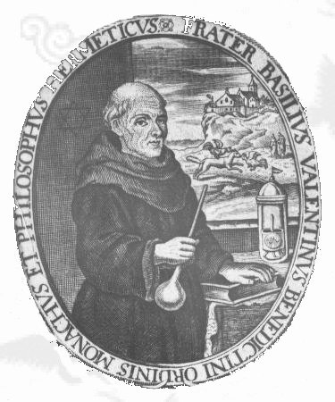


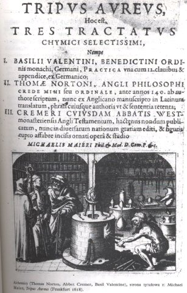
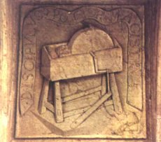
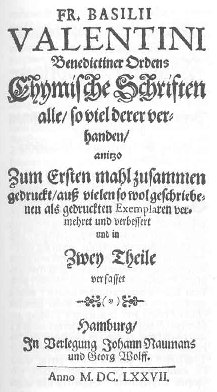
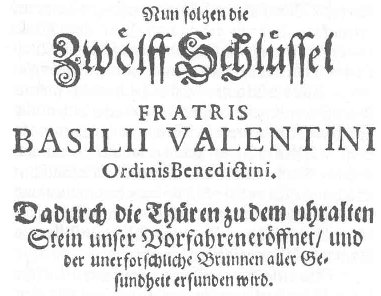
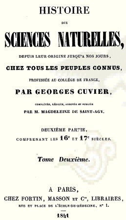
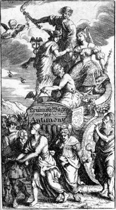
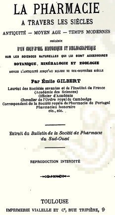
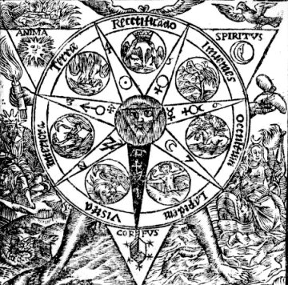
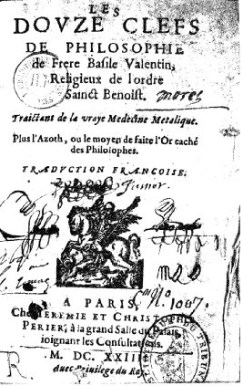
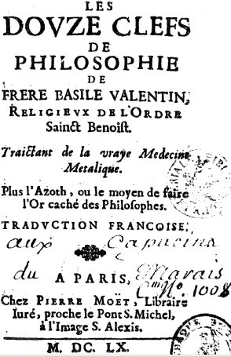
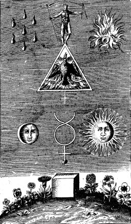
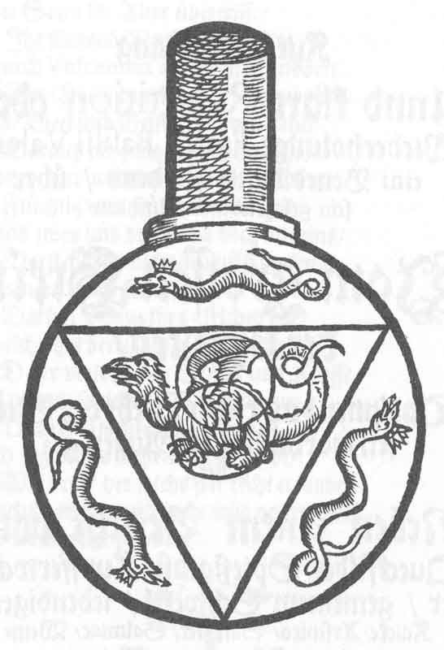
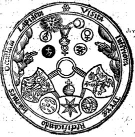
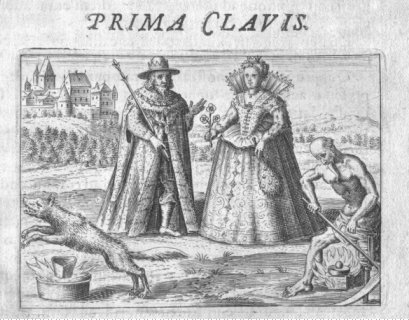
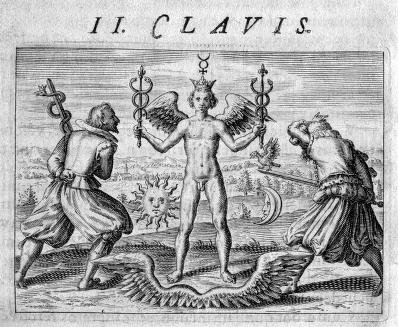
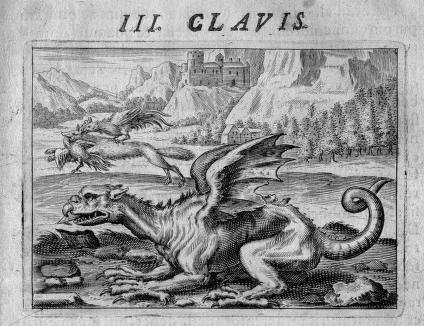
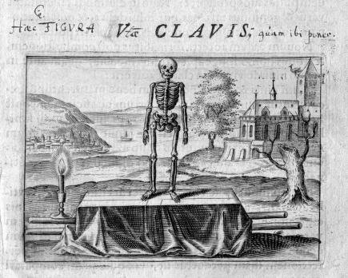
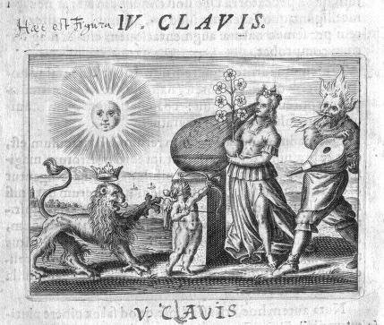
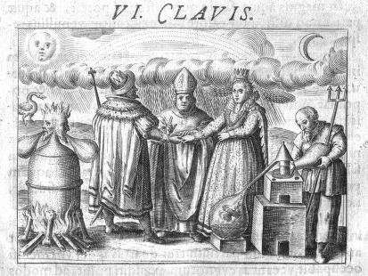
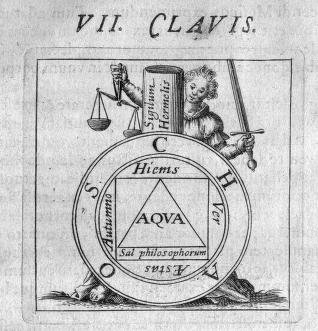
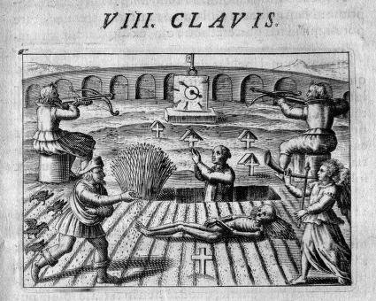
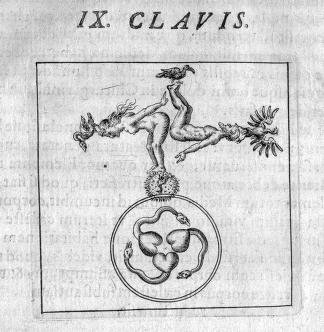
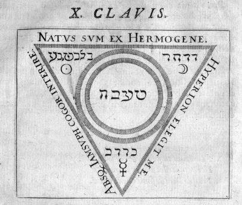
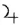
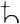
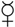
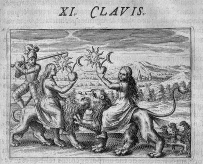
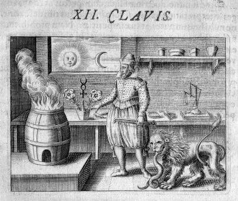
Noms cités
Fulcanelli · Paris · Hermes · Jean · Venus · Atalanta · Chevreul · Saturne · Jupiter · Jung · Valentin · Basile · Newton · Canseliet